한국 취업자의 계층구조와 불평등 변화
개인-가구 통합 종단 분석(1998~2023)
1 서론
1.1 연구 배경
한국 경제는 최근 수십년 간 세계에서 가장 빠르고 놀라운 성취를 이룬 나라로서 식민지에서 해방된 이후 60년여 년 만에 대한민국의 경제 규모와 교역량, 국부 자산은 선진국 수준에까지 이르게 되었다. 하지만 경제적 불평등과 양극화는 1960~70년대 개발독재 시기, 1980~90년대의 개방경제로의 변화 시기, 1998년 외환위기와 구조조정, 2008년 글로벌 금융위기와 그 회복과정, 그리고 2020년 코로나 팬데믹과 부동산 가격 폭등 등의 상황을 맞으며 새로운 형태로 지속적으로 확대 강화되어 왔다. 여기에 디지털 전환과 기후위기 시대의 도래, 인구 구조와 변화와 저출산 고령사회로의 급속한 진입 과정에서 새로운 불평등 요인들이 잠재적이고 실질적인 위협으로 다가오고 있다.
그동안 불평등 문제는 국내외 학계에서 경제학과 사회학, 사회복지학 등 다양한 영역에서 이론적, 실증적 연구가 진행되어 왔으며, 경제학적 접근(Kuznets, 1955; Piketty · Goldhammer, 2014)과 사회학적 접근(Goldthorpe, 2002; Wright, 2005)이 상호 보완적으로 발전해왔다. 국제적으로는 소득 불평등의 역사적 추이와 비교 연구가 활발하게 진행되었고(Deaton, 2013; Milanovic, 2023; Piketty · Goldhammer, 2014; Stiglitz, 2013), 국내에서는 1990년대의 계급론 연구(서관모, 1990; 신광영, 1994, 2004; 조돈문, 1994)에 이어 2000년대에는 1998년 외환위기 이후 소득불평등 확대와 양극화 문제에 관한 연구들이 진행되었다(김유선, 2003; 이정우 · 황성현, 1998).
2008년 금융위기 이후에는 가계-기업, 노동과 자본 등 제도부문간 소득분배를 주로 다루거나 개인소득과 가구소득 가운데 특정 영역을 선택하여 분석하는 연구가 주를 이루었다( (강신욱 · 김현경, 2016; 김낙년, 2018; 김낙년 · 김종일, 2013; 신광영, 2013a; 전병유, 2016; 정준호 외, 2017; 조돈문, 2024; 주상영 · 전수민, 2014; 홍민기, 2016; 홍장표, 2014). 한편 불안정노동에 주목하여 임금노동과 비임금노동의 경계를 넘어 비정규직, 특수고용, 플랫폼 종사자, 프리랜서를 포함한 다양한 취업형태를 포괄하는 ’불안정성’을 측정하고 규명하려는 연구들도 진행되었다(서정희 · 박경하, 2015; 이병훈 외, 2022; 이승윤 외, 2020).
하지만 불평등 연구의 중요성이 여전한 상황임에도 불구하고 그동안의 연구들이 안고 있는 한계가 몇 가지 측면에서 주요하게 제기되어 왔다. 첫째, 노동시장의 임금불평등에 대해서는 다양한 연구들이 진행되어 왔지만 자영업자를 비롯한 비임금근로 취업자를 포함한 모든 개인 취업자를 아우르는 소득분배 상황에 대해서는 잘 다뤄지지 않았다. 자영업 종사자의 비중이 줄어들고 있는 상황이지만 전체 취업자의 20% 이상을 차지하는 현실1 에서 임금노동자만을 대상으로 하는 개인소득 분배 논의는 분명한 한계가 있다.2 이와 함께 1998년 외환위기 이후 비정규직 노동자가 증가하면서 임금노동자 내부의 이질적인 분화가 상당한 정도로 진행되었고, 최근에는 고용형태가 훨씬 더 다양화되면서 독립사업자, 플랫폼노동, 프리랜서 등 고용관계 영역을 넘어서는 비(非)근로계약 형식의 취업형태가 계속 확대되고 있는 상황에서 노동자 내부의 분절화와 계층화를 고려하는 불평등 분석이 필요해졌다.
둘째, 개인소득 분배지표와 가구소득 분배지표의 비조응과 방향 불일치도 빈번하게 발생하고 있다.3 가구주가 중심이 되는 단일 취업자 모델은 오늘날 더 이상 지배적인 형태가 아니며, 고령화가 진행되면서 가구주의 취업률은 감소하는 대신 가구원 취업률이 크게 증가한 상태이다. 이러한 상황에서 가구주의 특성을 중심으로 진단하는 소득불평등 논의는 일면적인 분석이라는 한계를 가지며, 개인소득 불평등과 가구소득 불평등을 종합적으로 검토해야할 필요성이 커지고 있다(이원진 외, 2022)4.
셋째, 가구소득의 분배에 대해 가구의 구성형태가 복합적이고 중요한 영향을 미치게 되었다.5 청년층의 미혼 및 비혼율이 증가하고 있으며 고령화의 진전으로 인해 1인 가구의 비중이 30%을 넘어 가장 일반적인 가구 유형이 되었다. 청년과 노인을 중심으로 1인 가구의 비중 증가는 가구소득 분배에 상당한 영향을 미치고 있으며, 역으로 소득불평등이 결혼과 출산 등 가족형성에 미치는 영향도 점점 더 커지고 있다(Greenwood at al., 2014). 개인 단위 소득불평등이 가족의 구성과 가구소득 분배에 미치는 영향을 분석할 필요가 있다.
넷째, 다른 한편으로는 소득에만 초점을 맞추는 불평등 논의의 한계도 지적되고 있다. 과거에는 소수의 가구만 자산을 소유하고 축적했지만, 현대 자본주의에서 소득 외의 자산(wealth)이 갖는 중요성은 개인과 가구 수준에서 모두 커지고 있다(Piketty · Goldhammer, 2014; 정해식 외, 2020). 그리고 주택과 부동산 자산 중심에서 주식과 채권과 같은 금융자산과 디지털 가상자산에 이르기까지 다양한 유형의 자산 불평등 문제가 그 자체뿐만 아니라 소득의 또다른 불균등한 원천으로서 중요하게 인식되고 있다. 결론적으로 한 사회의 불평등 문제를 객관적으로 진단하기 위해서는 임금노동자뿐만 아니라 자영업자를 포함한 모든 취업자를 포괄할 필요가 있으며, 임금노동자 내부의 이질화와 새로운 하위계층의 형성 여부를 규명할 필요가 있으며, 개인 소득뿐만 아니라 가구의 소득과 자산을 함께 고려하는 종합적인 분석이 필요해지고 있다.
1.2 연구 목적과 방법
이 논문은 계층분석 방법을 적용하여 전체 취업자를 대상으로 한국 사회의 계층 구조를 재확인하고, 계층간의 소득과 자산 불평등이 어떻게 변화되어 왔는지를 개인과 가구를 함께 고려하여 실증적으로 규명하는 것을 목표로 한다.
1.2.1 왜 계층분석인가?
불평등을 진단하는 방법으로 지니계수나 분위간 소득배율(p90/p10, 팔마배율) 등이 대표적인 지표로 사용되고 최근에 와서는 최상위10%, 최상위1%의 소득 및 자산 점유비중 등의 지표가 흔히 활용되고 있지만, 이러한 지표의 유용성에도 불구하고 이는 불평등의 평면적인 결과만 보여줄 뿐 불평등이 발생하는 생산관계와 사회집단의 관계 속에서의 맥락을 확인할 수 없다. 최상위층의 실체를 알 수도 없고 나머지 하위계층의 이질성도 간과된다.
이와 관련해서 본 연구가 주목하는 것은 계층분석(social stratification analysis) 접근법이다. 계층분석은 “특정 사회 내에서 개인이나 집단이 경제적·사회적 자원의 불균등한 분배와 구조화된 위계질서가 어떻게 형성되는지를 이론적으로 설명하고 실증적으로 규명하는 방법”을 다룬다. 본 연구가 계층분석 접근법에 주목하는 이유는 다음과 같은 이점에서 비롯된다.
첫째, 계층분석 접근법은 모든 취업자를 누락 없이 체계적으로 위치 지을 수 있는 포괄적 분류체계를 제공한다. 계층분석 방법에서는 모든 개인을 일정한 규칙에 따라 하나의 위계를 갖는 계층구조에 소속되도록 분류할 수 있도록 해준다. 이것은 임금노동자 중심의 노동시장 분석이 갖는 한계를 극복하면서, 합리적이고 타당한 이론과 방법을 적용하여 노동자와 자영업자 내부의 분절 구조도 포섭할 수 있도록 해준다.
둘째, 계층분석 접근법은 개인과 가구 수준의 불평등을 연결할 수 있는 이론적 다리를 제공한다. 사회계층론은 개인의 경제적 위치뿐만 아니라 가구 요인을 포함하여 계층을 분류할 수 있도록 해주며, 계층결정 이론에서도 개인적 요소와 가족적 환경을 복합적으로 고려할 수 있도록 해준다. 결혼과 출산을 비롯한 ‘가구 구성 전략’과 부모에서 자녀 세대로의 ‘계층이전’ 이론과 분석틀도 개인과 가구의 통합적 분석에 유용한 근거를 제공한다.
셋째, 계층분석 접근법은 소득과 자산을 포함한 다차원적 불평등의 분석을 가능하게 한다. 자본주의 사회에서 계층의 재생산은 단순한 소득이전이 아니라 ‘부의 축적과 상속’ 을 통해 이루어진다. 계층분석은 특정 계층의 위치가 결정되는데 있어서 소득 창출 능력뿐만 아니라 주택과 금융자산 등 자본에 대한 접근성과 축적 능력이 어떻게 영향을 미치는지 포함할 수 있는 유용한 분석틀(framework)이 된다.
결론적으로, 계층분석 접근법은 분절되고 다차원화된 현대 사회의 불평등 지형을 조망할 수 있는 ’지도(inequality map)’를 제공해 준다. 불평등의 문제를 단순한 ’분포’의 차이가 아니라 서로 다른 집단이 점유한 ’구조적 위치’의 문제로 파악할 수 있도록 해줌으로써 입체적인 진단이 가능하도록 해준다.
하지만 계층분석 접근법의 문제점과 한계에 대한 비판도 적지 않았다. 계층을 구분하는 기준으로 고용과 직업변수가 주로 사용되는데 고학력화, 여성의 경제활동참가율 증가, 서비스산업의 성장, 탈숙련화 등 변화가 발생하면서 과거의 고용지위와 계층귀속 결정에 중요한 영향을 미치던 젠더, 교육, 숙련, 통제 등의 요소가 크게 달라졌다는 것이다. 제조업과 서비스업, 금융업, IT산업에서 각 직업이 담당하던 지위와 역할에 큰 변화가 발생한 것도 고용기반 계층분석 방법론의 유효성이 약화된 논거로 제시된다(Oesch, 2021).
한편 또다른 관점에서 계층이론이 일국적 틀 내에서 고용과 직업활동을 중심으로 사회이동성이나 불평등 문제에 접근했기 때문에, 세계화로 인한 자본과 노동의 이동이 불평등의 주요 변수가 되는 상황에서는 다차원적인 불평등 문제를 규명하는데 한계가 있다고 진단하기도 한다(신광영, 2013). 취업자의 비중이 낮고 비공식 부문의 비중이 큰 다수의 저개발 국가들을 고려할 때 경제활동인구 중심의 계층분석이 갖는 한계를 지적하기도 한다(Waitkus 외, 2025).
하지만 이러한 다양한 비판과 한계점에 대한 지적에도 불구하고 한 사회의 불평등 구조를 체계적이고 포괄적인 틀에서 확인할 수 있다는 점에서 계층분석 방법의 필요성과 의의는 여전히 유효하다고 볼 수 있다. 그리고 지금까지 언급되고 있는 다양한 문제점과 한계는 계층분석 이론과 방법의 보완을 통해서 개선할 문제이지 그 반대는 아니다.
즉, 임금노동자가 정규직과 비정규직으로 분단되고 내부노동시장과 외부노동시장의 내부자(insider)와 외부자(outsider)로 분화된 노동시장의 구조적인 변화를 계층분석 방법론에 반영할 필요가 있다. 실제로 최근에 와서 새로운 변화가 시도되고 있기도 하다. 영국에서 연구팀은 잠재계층분류(LCA) 방법을 사용하여 ’프레카리아트’를 새로운 제7계급으로 분류하고, 하시모토(2018)는 일본 사회의 제5계급으로 ’언더클래스’를 분석한 바 있다.
국내 연구에서 불평등 문제를 다루면서 계층분석 접근법의 연구가 최근에 와서 활발하게 이어지지 않은 것도, 1990년대 이후 계급이론의 쇠퇴라는 이론적 환경과 함께 전세계적으로 확산되어온 비정규직 노동과 독립도급 형태의 새로운 비임금 노동자층의 등장과 확산을 ’새로운 계급적 실체’로 인정할 것인지에 관한 국내 계급론 연구자들의 주저함이 상당히 작용했다고 볼 수 있다(Allen, 2014). 이와 함께 2000년대 이후 가구 유형의 다양화와 소득 이외의 자산(wealth) 불평등 문제가 새롭게 부상하면서, 개인의 고용과 직업 지위를 기초로 소득(income) 중심으로 접근했던 계층분석의 방법론을 낡은 것으로 평가했던 점도 영향을 미쳤다(신광영, 2013a).
하지만 국내에서 벌어졌던 불평등 이슈와 관련한 중요하고도 핵심적인 논의에서 계층분석 차원의 접근을 필요로 했던 주제가 적지 않았다. 대표적으로 최저임금의 인상이 어떤 가구에 수혜가 되는지에 대한 논쟁이 벌어졌는데, 이것은 저임금 노동자 개인들이 어떤 경제적 계층에 속하는지 그들 가운데 빈곤층이 어느 정도 비중인지 하는 의문을 제기하는 것이었다(윤희숙, 2016). 코로나 팬데믹 시기에 재난지원금의 지급 문제가 이슈가 불거졌을 때에도, 빈곤층을 집중 지원하는 방안을 놓고 하위계층을 선별하는 기준과 방법에 관한 논란이 벌어지기도 했다.
이런 논란들은 불평등 문제를 접근할 때에도 개인 수준의 고용상 지위와 소득뿐만 아니라 가구 단위의 소득과 자산, 재분배 소득까지 함께 고려해서 불평등의 상태를 진단할 필요가 있다는 점을 일깨워줬다. 그런 점에서 한국 사회의 불평등 진단을 위해서 계층분석 접근법을 재검토하여 적용하는 것이 필요하고 유용한 해결책이 될 수 있다는 점을 확인시켜 준다. 계층분석 접근법은 모든 개인들을 일정한 기준과 방법에 따라 계층으로 구분하여 불평등 구조를 진단하면서도, 가구단위 소득과 자산을 함께 살펴볼 수 있도록 해주기 때문이다.
1.2.2 연구 방법과 분석 자료
이에 이 연구에서는 한국의 개인과 가구의 소득 및 자산 불평등 문제를 계층분석 이론과 실증분석 방법을 적용하여 분석하는 것을 목표로 한다.
첫째, 모든 취업자를 계층으로 분류하되, 개인소득과 가구소득, 가구의 자산을 모두 포함하여 결과를 분석할 것이다. 기존의 국내 계층분석 연구에서는 개인을 기준으로 계층을 분류하면서 가구의 소득과 자산에 대한 분석은 하지 않거나, 개인을 기준으로 계층을 분류한 뒤 소득불평등은 가구주와 가구소득에 대해서만 분석하는 경우가 많았다. 이 연구에서는 모든 개인을 계층으로 분류하고 개인과 가구 수준의 소득 및 자산 불평등을 함께 분석할 것이다.
둘째, 사전에 계층을 몇 개로 구분할 것인지를 확정하지 않고 통계적인 방법에 의해 사후적으로 계층을 분류하는 방법을 적용하는 것과 함께, 미리 정해진 기준에 따라 어떤 사람이 어떤 계층에 속하도록 할 것인지를 사전적으로 정의하는 계층분류 방법 2가지를 함께 병행하여 그 결과를 제시할 것이다. 전자의 방법은 연구자의 자의적인 의도를 배제할 수 있다는데 장점이 있으며, 후자는 기존의 연구에 의해 확립된 이론적 성과를 활용하면서 동일한 기준을 적용한 국내외 분석결과와 비교하기가 용이하다는 장점이 있다.
셋째, 계층의 결정에 영향을 미치는 요인과 계층의 이동성(social mobility)에 영향을 미치는 요인에 대한 실증분석을 함께 실시하여 정태적인 분석과 동태적인 분석 결과를 함께 제시할 것이다. 특히 계층의 결정과 계층간 이동에 미치는 요인 가운데 개인적 요인과 가족적 요인을 함께 분석함으로써 계층의 재생산과 고착화에 미치는 영향을 함께 검토할 것이다.
이 연구에서 분석에 사용할 데이터는 국가데이터처(구 통계청)에서 원격접속(Remote Acess Service, 이하 RAS) 방식으로 가구원의 개인 단위 정보를 추가로 제공하는 가계금융복지조사(2012~2024) 원자료와 한국노동연구원의 한국노동패널(KLIPS, 1998~2023) 원자료이다. 전자는 개인과 가구의 소득 및 자산 분배의 현황을 분석하는 용도로 사용하고, 후자는 계층의 분류와 계층결정, 계층이동에 관한 실증분석에 사용할 것이다.
가계금융복지조사는 매년 2만 가구 이상의 표본 가구의 만 15세이상 가구원에 대해 개인소득과 가구소득, 자산, 부채를 조사하며, 공식적인 소득분배지표 작성과 한국은행의 금융안정보고서 작성을 위한 가구소득과 자산부채 분석의 기초자료로 사용된다. 2016년 이후부터는 국세청의 소득신고 자료를 이용해서 소득정보를 대체하고 있어 정확도가 크게 개선되었다. 특히 기존 연구에 많이 활용된 공공용 자료는 가구주의 인적 특성과 가구소득과 자산에 대해서만 변수들이 제공되는 반면, 이번에 이용하게 되는 RAS 자료는 가구원 개인들의 소득과 자산 정보까지 포함되어 있어 개인과 가구 기준 분석이 모두 가능하다.6
한국노동패널은 1998년 외환위기 발생 직후부터 조사가 진행된 가장 대표적인 패널데이터로 가장 최근에 조사가 완료된 2023년(26차) 자료까지 25년간에 걸친 개인과 가구의 소득과 자산에 관한 정보를 축적하고 있다. 노동패널은 계층의 분류에 필요한 개인의 다양한 인적 특성 변수를 모두 활용할 수 있으며 가구의 특성과 가구원 구성 등의 내용과 변화 이력 등을 추적할 수 있다는 장점이 있다. 또한 1998년 외환위기 이후 한 세대에 걸친 25년간의 변화를 단일자료로 추적하기 위해서는 노동패널을 이용하는 것이 가장 적절하기 때문이다. 이에 따라 가계금융복지조사 분석을 통해 계층분석에 필요한 사전 스케치를 마친 다음, 한국노동패널 자료에 대한 분석을 통해 실제 계층을 분류하고, 이를 통해 도출된 계층을 변수화하여 추가적인 분석을 실시하기로 한다.
1.2.3 연구의 의의
이 연구는 개인과 가구의 소득분배 상황을 전반적으로 진단하여 가구원의 노동시장 내 지위 및 인적 특성과 가구 소득과 자산의 분포 특성을 확인하고, 시기별로 주된 특징과 주목해야 할 변화가 무엇인지 살펴볼 것이다.
다음으로는 계층 분류의 이론과 방법을 적용하여, 1998년 외환위기 이후 이후 한국 사회의 개인과 가구들이 어떠한 계층을 구성하고 있으며 그러한 계층구조가 25년의 한 세대가 경과하는 동안 어떻게 변화해 왔는지에 관한 실증분석 결과를 제시할 것이다. 분석 대상에는 임금노동자와 비임금취업자가 모두 포함되며, 개인과 가구를 함께 고려한 계층의 귀속과 분포, 계층간의 이동성과 계층의 계급적 재생산의 실태가 분석될 것이다. 이 연구가 진행할 실증분석은 다음의 연구질문에 답하려는 노력이라고 할 수 있다.
첫째, 1998년 외환위기 이후 한국의 계층 구조는 어떻게 형성되어 있으며 특히 최하위계층은 어느 정도 규모로 존재하고 어떤 특성을 갖는 집단인가? 또한 이들의 위치는 일반적인 노동자계층에 비해 얼마나 큰 격차가 있는 것인가?
둘째, 자영업자 내부의 분화와 임금노동자 내부의 분화는 어떻게 진행되어 왔으며, 자영업자의 하위계층과 임금노동자 상위계층의 지위는 어떤 변화를 겪은 것인가? 두 계층간의 지위 역전은 언제 어떻게 발생한 것인가?
세째, 계층을 결정하는 요인으로는 개인적 요소와 가족적 요인, 환경적 요인 가운데 어떤 것들이 유의하게 작용하며, 최하위계층으로의 진입·잔류 확률에 어느 정도로 영향을 미치는가? 그리고 최하위계층의 지위는 고착화되고 있는 것인가? 아니면 여전히 이동과 탈출의 경로가 열려 있는 것인가?
끝으로, 계층의 귀속은 개인의 가족형성과 자산축적에 어떤 영향을 미치며 주관적인 인식과 태도에는 어떻게 연결되는가? 그리고 이러한 차별화는 앞으로 우리 사회의 계층구조와 불평등의 변화 방향에 대해 어떤 점을 시사하는 것인가?
이러한 질문에 최대한 답하는 것을 이 연구의 목표임을 확인하면서, 논문의 구성을 다음의 같은 장으로 구분하여 서술할 것이다.
2장에서는 이 연구에서 다루게 될 주요한 개념과 이론 및 방법론을 살펴보고, 계층분석 방법을 적용한 국내의 주요 선행연구들을 검토할 것이다. 3장에서는 가계금융복지조사 RAS 원자료를 이용하여 2012~2023년 기간 동안의 개인과 가구의 소득과 자산 분배 현황과 변화 과정을 살펴볼 것이다. 여기에서의 분석을 통해 계층분석에서 주목해야 할 소득분배 상황과 특징적인 변화들을 포착할 수 있을 것이다. 4장에서는 한국의 계층을 2가지 방법으로 각각 분류한 결과를 제시할 것이다. 먼저 잠재계층분석(Latent Class Analysis) 방법을 적용하여 통계적이고 확률적인 방법에 의한 6개 계층 분류 결과와 함께, 이어서 선행이론과 방법론에 기초하여 사전적으로 정의된 방법에 따라 5개의 계층으로 분류한 결과를 각각 제시할 것이다. 다음으로 2가지 계층분류 결과에 대해 교차 비교하여 계층분류 기준이 타당하게 설정되었는지 검증할 것이다. 이어 5장에서는 사전적으로 정의된 5개 계층에 대한 계층 결정요인과 계층이동 결정요인에 대한 실증분석을 실시하고 도출된 결과에 대한 주요한 시사점을 검토할 것이며, 6장에서는 연구의 결론과 함께 한계점과 향후 연구과제를 밝힐 것이다.
이 연구는 한국의 계층 구조를 새롭게 분류하고 개인과 가구의 소득 및 자산 불평등 현황을 함께 분석한 시도로서의 의의를 갖는다. 특히 임금노동자 가운데 ’불안정노동계층’을 새로운 하위계층으로 구분하여 한국의 ’프레카리아트’에 해당하는 계층의 규모와 상태를 처음으로 밝혀보는 연구로서의 의미가 있다.
이와 함께 본 연구는 불평등 연구에 있어서 하나의 공백을 메우고자 하는 시도이기도 한다. 그것은 한국 사회의 ’표준화된 계층분류 체계’라는 기준을 만드는 시도로서 의미를 갖는다. 본 연구에서 시도한 계층분류 방법과 불평등 분석의 유용성이 인정된다면, 향후 새로운 노동패널 자료가 생산될 때마다 동일한 방법으로 계층분류 결과와 개인 및 가구단위 불평등 실태, 정책 진단을 실시할 수 있게 되기 때문이다. 이것은 표준화된 분류체계에 대한 지속적인 검증과 보완 및 재현가능성을 열어둠으로써 하나의 연구 인프라로 발전해나갈 수 있다.
이 연구를 통해 현단계 한국 사회의 구조적인 불평등 실태를 진단하고 미래에 예상되는 상황을 검토해봄으로써 학문 영역에서의 불평등 연구의 진전에 기여하고 불평등을 개선하기 위한 사회경제 정책을 모색하는데도 일정한 시사점을 주기를 기대한다.
2 이론적 배경 및 선행 연구
2.1 소득분배 측정의 기준과 범위
2.1.1 개인과 가구
일반적으로 불평등에 대해서 분석하면서 개인 기준인지 가구 기준인지 매우 중요한데도 엄밀하게 이를 구분하지 않고 사용하는 경향이 있다. 개인 단위의 소득불평등과 가구 단위의 소득불평등은 상호 연관되어 있지만 측정 방법과 해석에서 중요한 차이가 있으며 소득분배의 양상과 변화의 흐름도 달라질 수 있다.
개인 소득은 개인이 시장에서 벌어들이는 소득(근로소득, 사업소득, 재산소득 등)의 분포를 기준으로 불평등을 측정하며, 가구의 소득불평등은 가구원들의 시장소득과 처분가능소득을 기준으로 불평등을 측정하는데 이 때 가구원들간 소득이 공유된다는 점을 고려해서 불평등을 측정하며7 가구의 규모와 구성, 그리고 조세와 복지에 의한 재분배의 영향 등을 함께 고려해야 한다.
과거에는 개인소득 불평등에 비해 가구 단위의 소득불평등이 낮은 것이 일반적이었는데, 가구의 주된 소득자가 소득이 높을 경우에는 다른 가구원들의 경제활동이 활발하지 않았고 반대의 경우 다른 가구원들이 추가적인 경제활동을 통해 가구주의 낮은 소득을 보충하는 역할을 했기 때문이다.
이와 함께 개인소득은 취업여부와 임금수준, 사업소득과 재산소득의 규모 등 시장의 상황이 훨씬 크게 작용하는 반면, 가구소득은 <그림 1>의 아래에서 표현된 것처럼 정부 재분배 정책이 상당한 영향을 미치기 때문에 개인소득 불평등보다 가구단위의 처분가능소득 불평등이 완화될 수 있는 여지가 있다.
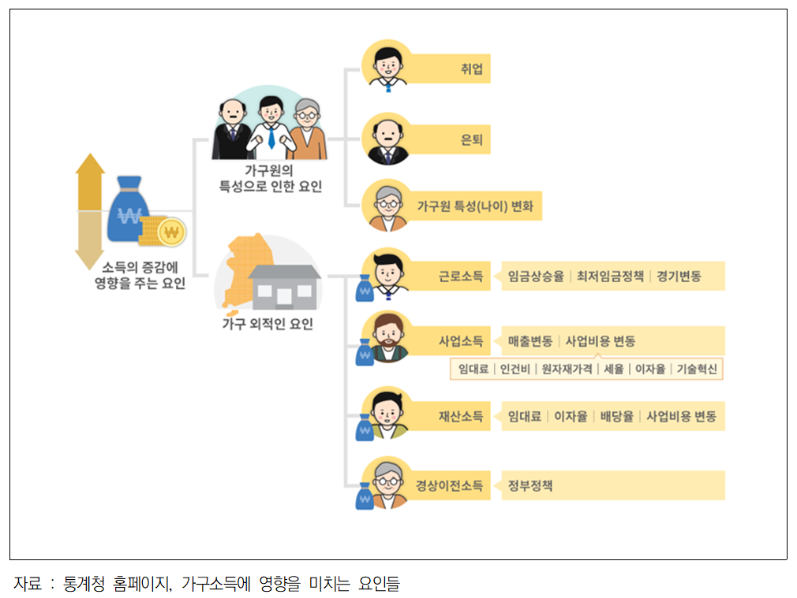
하지만 최근 들어 저소득 가구와 노인 가구를 중심으로 1인 가구 비중이 크게 늘어나고 다인 가구에서는 소득이 높은 개인들끼리 가구를 구성하는 동질혼(同質婚) 비율이 높아지면서 변화가 발생하고 있다. 고소득층의 경우 맞벌이를 지속하면서 높은 소득을 유지하는 반면 저소득층의 경우 결혼 비율이 낮아지고 개인소득도 낮기 때문에, 이런 상황이 일반화될 경우 가구 단위 소득불평등이 개인소득 불평등보다 더 높아질 가능성도 있다.8
2.1.2 소득의 범위
개인소득 중에서 임금은 매월 주기적으로 발생하고 기업의 임금대장이나 소득신고 자료를 통해 정기적으로 파악할 수 있기 때문에 개인단위의 소득분배를 측정하는 주된 대상이 된다. 임금불평등에 주요한 영향을 미치는 요소에는 노동시장의 수요공급(고용률, 실업률)과 취업자 개인과 일자리의 특성 등 시장 요인도 있지만, 최저임금 제도와 노동조합과 단체교섭 등 제도적인 요인도 영향을 미친다.
반면 사업소득은 일정한 계절성을 띠고 매출이 발생하기도 하며 전체 매출에서 인건비, 재료비, 판매관리비 등 비용을 차감한 다음에 소득이 확정되기 때문에9 그런 점에서 사업소득은 임금의 결정에 영향을 받고 또 영향을 주기도 한다. 임금에 비해 신속하고 정확한 파악이 힘들다는 난점이 존재한다. 재산소득도 연간단위로 파악해야 한다.
소득을 측정하는 기간에 따라 소득자의 규모와 분포의 특성도 달라질 수 있다. 월 단위 고용통계와 임금통계를 작성할 경우에는 해당 기간에 취업한 사람에 한해 소득이 파악되지만, 연간 단위의 소득 측정의 경우 매우 짧은 기간만 취업소득을 얻은 경우까지 취업소득이 있는 사람으로 집계될 수 있기 때문에 소득자의 규모가 훨씬 커지고 매우 작은 소득까지 집계된다.
통계조사의 방법에 따라 소득의 포괄범위와 정확성에서 차이가 날 수 있다. 개인소득 중 임금의 경우 가구조사와 사업체조사를 통해 각각 통계를 작성할 수 있는데, 가구조사는 비공식부문과 비사업체 소속인 경우까지 모두 파악할 수 있다는 장점이 있는 반면 소득의 정확성이 떨어지는 단점이 있다. 소득이 매우 높은 개인들에 대한 접근성이 떨어지는 문제점도 있다. 이에 따라 최근에는 가구조사를 통한 소득통계 작성에 국세청과 정부 부처의 행정자료로 보완하는 방법이 병행된다.
하지만 소득분배 혹은 소득불평등을 얘기할 때에는 대체로 가구 단위를 기준으로 평가하는 것이 일반적이다. 국민경제 수준에서 제도부문을 구분할 때도 기업과 가계, 정부를 경제의 3주체로 정의하는데, 개인이 아닌 가계(household)를 하나의 경제단위의 기초로 설정하는 것은 가구원 간에 소득과 지출이 공유되고 취업, 가사, 은퇴 등 경제활동에 관한 의사결정이 가구 수준에서 이루어진다고 보기 때문이다.
하지만 개인소득 불평등도 매우 중요한 문제이다. 개인소득이 가구 소득의 구성요소가 되기도 하지만, 개인소득 그 자체로서 취업자의 경제활동에 대한 보상으로서 생계의 기초이자 삶의 만족에 큰 영향을 미친다. 특히 임금불평등 문제는 기업규모간, 고용형태간 격차 등이 확대될 경우 개인의 취업선택에 영향을 줄 뿐만 아니라 사회전체의 통합에도 위협이 되기 때문에 중요하게 취급되어야 한다.
그림 2 는 개인과 가구 수준에서 소득분배에 영향을 미치는 요소들을 표시한 것이다. 먼저 개인의 근로소득이 모여서 가구의 근로소득으로 합산되고, 여기에 가구의 또다른 시장소득인 재산소득이 추가되어 가구의 시장소득을 형성하며, 가구 단위로 조세와 현금이전이 이루어지면 가구의 처분가능소득이 결정된다.
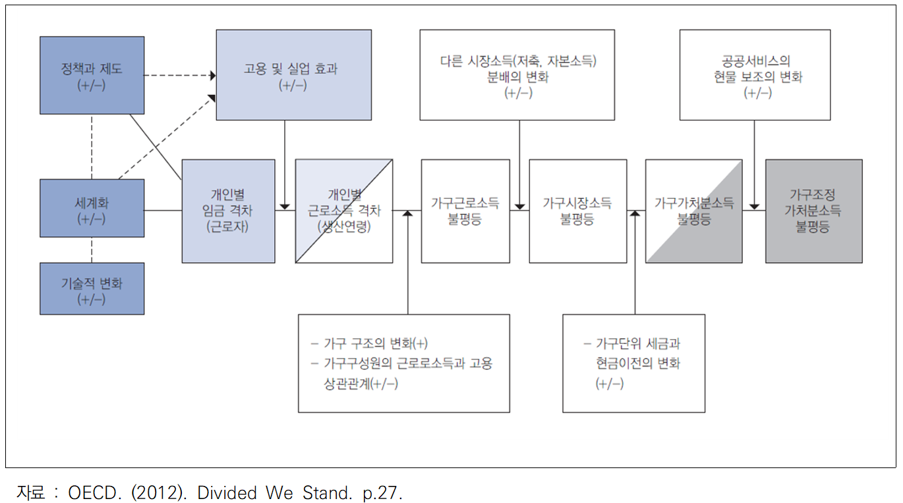
마지막으로 현물로 지급되는 공공서비스까지 고려하면 가구의 조정처분가능소득이 최종 결정된다. 이 때 각 단계별로 개인수준과 가구소득의 불평등의 정도가 측정될 수 있으며, 각 수준에서의 불평등에 영향을 미치는 요소들로 달라지게 된다.
개인의 임금불평등을 측정하는데서부터 시작해서 가구소득의 결정 과정별로 근로소득과 다른 요소소득들의 분배상태, 가구 구성의 특징과 변화, 조세와 재분배에 의한 정책적 효과 등까지 종합적으로 고려하는 것이 포함된다.
2.2 계층분석 이론과 국내외 연구
2.2.1 계급론과 계층론
일반적으로 말하자면 계층(social class)은 유사한 사회경제적 특성을 지닌 사회집단을 의미하고, 계층화(stratification)는 이러한 집단들이 일정한 위계(hierarchy)를 형성하면서 자원과 권력, 기회 등의 접근과 분배에 있어서 체계적인 불평등이 발생하게 되는 것을 의미한다(Crompton, 2015).
그러므로 계층분석(social stratification analysis)은 특정 사회 내에서 개인이나 집단이 경제적·사회적 자원의 불균등한 분배와 구조화된 위계질서가 어떻게 형성되는지를 이론적으로 설명하고 실증적으로 규명하는 분석틀이 된다(Waitkus 외, 2025, p. 127).
고전적 계급이론을 정식화한 마르크스(K. Marx)는 계급을 생산수단 소유관계에 따라 자본가계급과 노동자계급으로 정의하였으며, 사회적 지위와 정치적 권력도 경제적 계급에 의해 규정되는 단일한 차원의 구조로 파악했다. 이에 비해 베버(M. Weber)는 계층이 경제적 계급(economic class) 외에도 사회적 지위(statue)와 정치적 권력(power)이라는 추가적인 다차원적인 상호작용에 의해 결정된다는 ’3요소 계층화 이론(three-component theory of stratification)’을 제시했다. 베버는 시장에서의 위치에 따라 자본가계급과 노동자계급 외에 구중간계급과 신중간계급이 사회적 계급을 함께 구성한다고 보았다.
흔히 국내의 교과서 등에서는 전자를 ‘계급론’으로 정의하고 계급간 경계가 명확하고 단절적이라고 규정하며, 후자를 ‘계층론’으로 정의하면서 계층간의 연속적이고 개방적인 관계가 특징이라고 설명하고 있다. 그러나 교과서 등에서 언급하는 ‘순수’ 계층론의 입장은, 개인들이 특정 계층에 속하는 것을 연속형 요인 변수들의 ’정도의 차이’에 의한 우연적 결과로 설정하는 ’기능주의적 계층론’의 입장(K. Davis · Moore, 1945)에 가깝다.10 데이비스와 무어의 기능주의 계층이론은 사회의 계층구조가 유기체에 있어서 필요에 의한 기능하는 것으로, 사회적 불평등은 사회 전체의 안정과 발전을 위해 필수적이라고 보았다. 이러한 입장은 경제적 계급의 실체를 인정하되, 생산관계와 시장에서의 위치를 조건으로 다양한 차원의 요소들에 의해 합법칙적으로 결정되는 계층구조를 설정하는 베버의 관점과는 오히려 거리가 멀다.
실제로 1960년대 이후 본격화된 현대 사회학의 계층분석 연구는 마르크스주의와 베버주의 이론의 절충과 융합을 통해 발전해왔다는 평가가 지배적이다(Goldthorpe et al., 1987 ; Wright, 1980). 대표적인 흐름으로서 존 골드소프(John H. Goldthorpe)가 발전시킨 ’EGP 11 계층체계’가 베버주의 전통을 계승한 것이라면, 에릭 올린 라이트(E. O. Wright)의 ’12개 계급체계’는 마르크스주의 입장에서의 계층분석 논의을 주도했다(Waitkus 외, 2025).
이와 관련해서 신베버주의와 신마르크주의가 계층이론에서 갖는 관계는 배타적이지 않으며, 오히려 “베버주의적 계층이론은 개선된 마르크스주의 이론으로 간주해도 좋고, 실제로 골드소프의 이론은 비마르크스주의적인 전제를 통해 마르크스주의 논의를 적용가능성을 입증했다”고 평가하기도 한다(신행철, 1997, pp.337~338). 골드소프는 신베버주의 계층이론에 입각해 노동시장에서의 개인의 고용상황에 따른 시장지위와 통제권, 자율권의 정도에 따른 작업지위를 고려한 11개 계층의 ’Erikson-Goldthorpe-Portocarero(EGP) schema’를 창안했다
이와 관련해서 신베버주의와 신마르크주의가 계층이론에서 갖는 관계는 배타적이지 않으며, 오히려 “베버주의적 계층이론은 개선된 마르크스주의 이론으로 간주해도 좋고, 실제로 골드소프의 이론은 비마르크스주의적인 전제를 통해 마르크스주의 논의를 적용가능성을 입증했다”고 평가하기도 한다(신행철, 1997, p.337~338). 골드소프는 신베버주의 계층이론에 입각해 노동시장에서의 개인의 고용상황에 따른 시장지위와 통제권, 자율권의 정도에 따른 작업지위를 고려한 11개 계층의 ’Erikson-Goldthorpe-Portocarero(EGP) schema’를 창안했다11. 이 계층분류 도식은 17개국을 대상으로 한 사회이동성 연구인 CASMIN 프로젝트에 적용되었으며, 영국 통계청의 직업지위분류(NS-SEC) 구축의 근간이 되고 이후 유럽의 사회경제지위분류(ESeC) 등으로 발전했다.
반면 라이트(Wright)는 분석적 마르크스주의(analytical Marxism)의 흐름을 이어가면서, 현대 자본주의 사회에서는 생산수단에 대응하는 자본재(capital asset) 뿐만 아니라 기술재(skill asset)와 조직재(organization asset)의 소유와 행사까지 계급위치를 결정하는 요소로 작용한다고 보고 본인의 7개 계급체계 모델을 수정한 다차원의 ‘12개 계급’ 모델을 제안했다(Wright, 1985)12. 그는 자본가와 노동자를 구분하면서도 노동자 안에서 기술적 숙련수준(전문직, 준전문직, 단순직)과 통제권(관리직, 감독직, 기술직)을 등급화하여 이를 교차하여 세분화시킨 혼합형 계급구조를 제시했다.
한편 앞의 두 가지 흐름 외에 계급이론 영역에서 중요한 시도로 추가할 것이 있다면 피에르 부르디외(P. Bourdeu)의 이론을 들 수 있다. 부르디외는 경제적 자본 외에 사회적 자본과 문화적 자본을 추가하여 3가지 자본의 총량과 구성이 사회적 위치, 즉 계급을 결정한다고 보았다. 부르디외의 이론은 마르크스의 계급(class) 개념과 베버의 지위(status) 개념을 받아들이면서도, 문화와 소비행태 등이 ’구별짓기’를 통해 계급관계의 정당화와 재생산에 중요한 역할을 한다는 점을 강조함으로써 현대 자본주의 복합적인 불평등 현상을 규명하는데 기여하였다.13
전체적으로는 평가한다면 계층분석 영역에서 라이트의 분석적 마르크스주의 흐름과 골드소프의 신베버주의 계보가 주축을 형성했다고 평가할 수 있으며, 실증연구 분야에서는 개인의 고용상 지위와 직업 범주을 중심으로 계층을 분류하는 방식이 주된 흐름을 형성해왔다. 이것은 계층을 고용상의 지위와 직업을 함께 하는 집단으로 파악하는 방법론을 사용한다는 점에서 ‘고용집계(employment aggregate)’ 접근법으로 불려지고 있다. 상당수의 실증연구에서 라이트와 골드소프의 계급모형을 병행해서 사용했다고 밝히는 경우가 많은데, 그것은 두 가지 방법론이 고용상의 지위 구분과 직업분류체계를 공통적인 핵심적인 분류기준으로 사용하고 있기 때문이다.
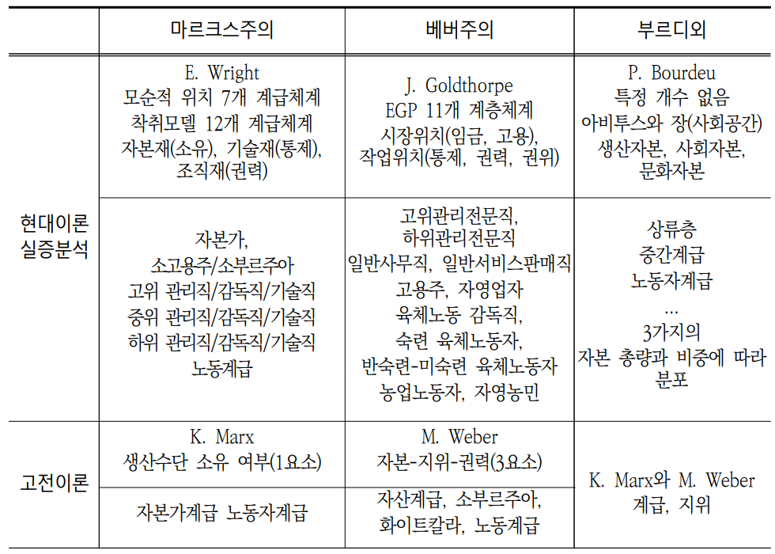
그런데 ‘계급’ 또는 ‘계층’의 용어와 관련해서 이론적 관점의 차이로 인해 용어법이 달라지기도 하지만, 지역적 특성이 용어 사용 문제에 영향을 미치기도 한다. 영미권에서는 ‘class’, ‘social class’, ’class analysis’라는 용어가 마르크스주의나, 베버주의, 부르디외 이론에 기반한 분석에서도 다양한 입장에서 다의적(多義的)으로 사용된다. 실제로 베버는 ’사회적 계층화(social stratification)’를 결정하는 3가지 요소로서 경제적 계급(class)과 사회적 지위(status), 그리고 정치적 권력(power)을 정의했지만, 이렇게 해서 계층화된 위계질서를 통칭해서 사회계급(social class)이라는 용어를 사용하기도 했다.
하지만 한국과 일본 등 동아시아 국가에서는 ‘계급(階級)’과 ‘계층’(階層)’이라는 용어는 어떤 것을 사용하느냐에 따라 이론적 관점과 이념적 입장이 명확하게 달라지는 것처럼 받아들여지기 때문에 분리되어 사용되는 경향이 강하다. 즉, 계급이나 계급분석은 주로 마르크스주의의 영향을 받아 생산수단의 소유 관계에 따른 대립적이고 갈등적인 관계를 강조하는 맥락에서 사용되고, 계층이나 계층분석은 베버주의를 비롯한 비(非)마르크스주의적 관점을 서술할 때 사용하는 것으로 본다.14 이에 따라 한국에서 대체로 마르크스주의적 계급론의 관점을 수용하거나 활용하는 입장에 서는 경우에만 ‘계급’이라는 용어를 사용하고, 대부분의 경우에는 실용적이고 중립적인 용어라는 이유를 들어 ‘계층’ 개념을 사용하는 경우가 많다.
연구자들마다 개념과 용어를 정의하는 방식이나 맥락이 다르기 때문에 발생하는 혼란도 있다. 막스 베버의 이론을 국내에 체계적으로 소개하고 발전시킨 대표적인 학자로 꼽히는 홍두승은 자신의 저서 『사회계층·계급론』(2001, 다산출판사)에서 경제적 지위를 기준으로 하는 ‘계급’과 사회적 지위와 권력 관계까지 포함하는 확장된 개념으로 ‘계층’을 정의하면서, 종사상의 지위와 직업분류를 교차해서 사회집단을 구분한 경우에는 경제적 지위를 분류의 기준으로 적용했다는 의미에서 ‘계급’ 명칭을 명시적으로 사용하였다(홍두승, 1983) .15
이에 반해 분석적 마르크스주의자인 라이트(Wright)의 제자인 조돈문은 홍두승의 계급모형이 직업구조 범주화를 이용한 계층구조를 분석한 것에 불과하다고 평가하면서, 논문의 제목을 ’계층구조의 변화’로 명시한 것도 그러한 평가의 이유로 들었다. 조돈문(1994)은 라이트에 의해서 정식화된 12개 착취중심 계급모형을 6개의 축소된 계급으로 재범주화하여 한국의 계급구조를 분석한 바 있는데, 여기에는 생산수단(자본재)의 소유관계뿐만 아니라 조직재와 기술재의 소유 여부에서 파생되는 다차원적인 착취관계 모형이 포함되어 있다.16
이렇게 보면 홍두승은 계급을 사회계층에 비해 하위의 좁은 개념(계층>계급)으로 사용한 반면, 조돈문은 이와 반대로 계급을 사회계층보다 상위의 넓은 개념(계급>계층)으로 사용한 것으로 볼 수 있다. 이처럼 국내에서 계급과 계층의 개념과 용어 사용 문제는 이념이나 당파적인 문제와 더불어 서로 다른 정의와 사용법으로 인해 혼란이 발생하기도 한다.
본 연구에서 계층분석의 방법론으로 불평등 문제에 접근하고자 하는 가장 큰 이유는 한 사회의 경제활동에 종사하는 모든 구성원들을 개인과 가구의 특성을 모두 확인할 수 있도록 누락 없이 분류하고 그들간의 집합적 동질성과 집단간 이질성을 불평등의 관점에서 실증적으로 분석하기 위한 것이다. 그렇기 때문에 본 연구의 관점은 마르크스주의적 관점에 입각한 계급분석을 시도하려는 것도 아니고, 베버주의적 관점에서 다차원적인 계층분석을 하려는 입장을 분명히 하는 것도 아니라고 할 수 있다.
본 연구에서 사용할 계층분류의 방법에서는 고용주 여부와 고용형태, 직업지위, 소득과 자산을 기준으로 사용하지만, 마르크스주의적 관점에서의 계급론에 입각한 것은 아니다. 아울러 경제적 요소 이외의 사회적 자본이나 문화적 자본은 고려하지 않을 것이다. 이후에 서술하게 될 사전적 정의에 의한 계층분석의 경우에도 고용상의 지위와 직업범주, 고용형태 등을 계층분류의 기준으로 사용하게 되는데, 이것은 골드소프와 라이트의 분석모형이 갖는 각각의 장점과 범용성을 결합해서 사용했던 기존의 상당수 연구들의 전례를 따르는 것이다. 이것은 앞서 말한대로 두 가지 분석모형이 분류기준에서 상당한 공통점을 갖고 있기 때문이다.
이러한 입장은 당연히 마르크스주의적 계급이론의 관점에서는 비판이 대상이 된다. 이와 관련하여 신광영은 엄밀한 계급이론에 근거하지 않은 채 ’부문간 이질성’이나 노동시장 분절에 따른 ’계급내 분화’를 계급구조에 도입하는 것은 계급과 계층을 혼동하는 절충주의적 태도라고 비판한 바 있다. “계급은 사회적 분업상의 위치에 의해 결정되는 것이지 노동시장내 지위에 의해서 결정되는 것이 아니라는 것”이다(신광영, 1990). 이같은 비판적 관점에서 본다면 노동시장의 분절과 내부자/외부자로의 구조적인 변화를 계층분석 방법론에 반영하고자 하는, 즉 비정규직을 계층구조의 분류 기준으로 포함하려는 본 연구는 계급분석이 아니라 계층분석에 해당한다고 할 수 있다.
하지만 한국 노동시장에서 비정규직의 위치가 독자적인 계급이 아닌 노동계급 내부의 분파에 불과하기 때문에 별도의 계급구조 위치를 부여해서는 안된다는 주장이 앞으로도 계속 설득력을 가질 수 있을 것인지는 불분명하다. 비정규직은 정규직에 비해 임금과 근로조건, 사회적보호 등 모든 측면에서 실질적인 차별적인 대우를 받고 있을뿐만 아니라 고용주와의 계약의 내용이나 법률에 의해 보호되는 제도적 권리의 정도에 있어서 어느 것 하나 동등한 조건에 있지 않다. 이와 함께 비정규직 노동자가 노동과정에서 정규직의 관리와 감독을 받는 경우가 적지 않고 권력 관계에서도 서로 간에 체계적인 우열이 존재한다. 라이트의 착취관계 모델에서 계급구조의 결정 요소로서 포함된 ‘조직재’ 개념은 이러한 상황에 오히려 적합한 설명 도구이다. 모든 측면에서 이러한 정도의 물질적 조건의 차이가 존재하는 집단을 계급내 분파로서만 다루어야 한다는 것은 ’분파’로 전제한 것에 따른 제약에 다름아니다. 실제로 세대와 계급문제를 다룬 신광영의 실증연구에서 노동계급과 신중간계급을 정규직과 비정규직으로 다시 구분하여 불평등을 분석한 바 있는데, 고용형태를 통제할 경우 불평등에 미치는 계급효과가 사라지는 것으로 스스로 결론을 내리고 있다.17 불평등 이슈가 계급분석 또는 계층분석의 중요한 기여 영역이라는 점에서 비정규직 문제를 계급이론 영역에서 적극 수용할 필요가 있다고 생각한다.
따라서 본 연구는 ‘분석적’ 유용함을 우선 중요하게 생각하면서, 이 연구에 대한 선입견을 배제하기 위해 ’계급’이라는 용어 대신 ’계층’이라는 용어를 기본으로 사용할 것이라는 점을 밝힌다. 이 때의 계층이라는 용어는 고용상 지위와 직업범주를 중심으로 계층을 분류한 결과라는 점에서, 홍두승의 사용법에서 보면 계급에 해당하지만 조돈문과 신광영의 관점에서 보자면 계층분석에 해당할 것이다.
이와 관련하여 라이트는 class이라는 용어의 사용과 의미에 대해 명사로서의 class보다 형용사로서의 class가 훨씬 더 생산적으로 사용될 수 있다고 말한 바 있는데, 아래의 그의 표현이 본 연구의 관점이나 태도와 일정한 공통점이 있다고 생각한다.
“The word ‘class’ is used both as a noun and as an adjective. As a noun, one might ask the question “What class do you think you are in?” and the answer might be “The working class.” As an adjective, the word class modifies a range of concepts: class relations, class structure, class locations, class formation, class interests, class conflict, class consciousness. In general, as will become clear from the analysis that follows, I think the term class is much more productively used as an adjective.”(Wright, 2005, p.118)
2.2.2 국내의 계층분석 연구
한국 사회의 계급 또는 계층구성에 대한 관심이 본격적으로 활발하게 진행된 것은 1980년대 이후로 평가된다(양춘, 2002). 이 때부터 점차 계급이론의 맥락에 입각한 이론과 실증연구들이 한국 자본주의의 성장과 사회운동, 학술운동의 전개와 함께 본격화되었다. 이 시기의 대표적인 실증연구로는 홍두승(1983)과 서관모(1985)의 연구가 있다.18 노동운동이 본격화된 1990년대 이후에는 신철행외(1991)와 조돈문(1994)이 계급이론과 실증분석을 진행했고, 2000년대 이후에는 신광영(2009), 장귀연(2013)도 실증분석을 시도했다.19
먼저 가장 초기에 이루어진 대표적인 실증연구로 볼 수 있는 홍두승(1983)은 인구센서스 자료를 이용해서 종사상지위와 표준직업분류(3자리 소분류)를 교차해서 계층을 8개(상류계급, 중상계급, 신중간계급, 구중간계급, 근로계급, 도시하류계급, 독립자영농, 농촌하류계급)로 구분하였는데, 실제 분석에서는 상류계급을 제외한 7개 계급이 분류되었다.20 분석 결과 1960~1980년 기간 동안 주요 계급의 비중 변화는 신중간계급(6.6%→17.7%)과 구중간계급(13.0%→20.8%)이 모두 증가한 결과를 보여 근로계급(8.9%→22.6%)과 함께 중간계급(19.6%→38.5%)이 동시에 증가하고 있다고 결론을 내렸다.
반면 서관모(1987)은 자본가, 임금중간층/인텔리, 자영업자층, 노동계급의 4계급 모형을 제시하고 인구센서스와 사업체조사 자료를 이용해서 1963~1983년 기간 동안의 계급구성 추정 결과를 제시했는데, 5인이상 사업체의 고용주로 정의한 자본가계급은 0.5%에서 1%로, 노동자계급은 31.7%에서 44.7%로 증가하고 농업자영자층과 도시자영자층을 하나의 계급으로 묶어서 비중이 중간계급이 64.9%에서 48.5%로 줄어든 결과를 제시하며 ’쁘띠부르주아의 하강분해’라는 마르크스의 ’계급양극화론’이 입증된다는 결론을 내렸다. 홍두승과 정반대의 결론이 도출된 것이다.
홍두승과 서관모의 계급양극화 가설에 대한 결론이 상반되었던 것은 두 연구의 계급정의가 크게 달랐기 때문이다. 홍두승은 독립자영농을 별도의 농업‘부문’으로 분리하면서 신중간계급에 관리직과 전문직, 기술직뿐만 아니라 사무직과 판매직 등 생산직이 아닌 모든 직업을 모두 중간계급으로 포함시켰던 반면, 서관모는 임금취득중간층은 엄격하게 정의하고 도시자영자층이 10.1%에서 16.8%로 늘어나는 수치를 보임에도 불구하고 농업자영자층이 54.8%에서 31.7%로 줄어든 것을 이유로 중간계급 분해론이 타당하다고 결론을 내렸던 것이다. 1990년대에 진행된 연구 중에서는 17개국 공동조사의 일환으로 진행되었던 신행철외(1991)의 연구가 있다.21 이 연구에서 전국의 18세이상 1,000명에 대한 면접조사를 통해 수집된 설문조사 자료를 기초로 다양한 계급모델별 구성비율 추정과 모델간 비교검토가 이루어졌다. 라이트의 모순적 위치모델과 착취계급 모델, 골드소프의 서비스계급모델, 그리고 교육, 직업, 소득 변수를 적용하여 군집을 가려내는 순수계층모델에 이르기까지 다양한 방법을 적용하여 계층분류를 시도하였다. 예를 들어 라이트의 모순적 위치모델에서는 6개 계급(부르주아 0.6%, 소규모고용인 7.9%,22 쁘띠부르주아 33.8%, 관리감독직 15.7%, 반자율노동자 15.2%, 프롤레타리아 26.8%)의 구성비가 추정되었고, 골드소프 모형에서는 최상층인 서비스계급상층이 8.5%, 제2계급인 서비스계급하층이 8.3%, 그리고 일반화이트칼라 23.8%, 비숙련 육체노동자 23.5%를 각각 차지하는 것으로 분류됐다.
한편 계층분류에서는 상층이 5.3%, 중상층이 10.1%, 중층이 31.2%, 하상 34.7%, 하층이 29.3%의 비중을 차지했다. 이 연구에서는 각 계층분류 모델들간 유사성과 상관계수가 평가되고, 계급의식을 종속변수로 하는 종합적인 분석이 이루어졌다. 모델간 평가에서는 라이트의 착취모델과 골드소프의 서비스모델간 상관계수가 0.778로 매우 큰 것으로 나타나 유사성이 큰 것으로 나타났고 순수계층모델은 골드소프 모델과의 상관계수(0.609)가 높은 것으로 나타났다. 흥미로운 것은 1991년 당시 가장 친노동자 의식이 높은 계급은 노동계급이 아니라 화이트칼라 신중간계층에 해당하는 반자율적 피고용인이었고, 순수계층모델에서는 하상층이 가장 친노동적인 것으로 나타났다.
비슷한 시기에 조돈문 (1994) 은 1960년 이후 10년 단위의 인구센서스 자료와 경제활동인구조사 자료로 라이트의 모델을 적용하여 계급구조를 분석했다. 그는 자본가계급(1인이상 모든 고용주)과 노동자계급의 비율을 1980년 각각 6.2%, 22.5%, 1990년 각각 6.2%, 27.5%로 추정했으며, 자영업자에 해당하는 쁘띠부르주아는 1960년 73.4%에서 1970년 56.2%, 1980년 50.4%, 1990년 34.3%로 크게 줄어들고 노동계급이 크게 확대되었으며 임금노동자 가운데 전문직에 해당하는 신중간계급이 1960년 5.5%에서 1990년 21.7%로 늘어나는 등 노동력 고급화가 이루어진 것으로 평가했다. 다만, 조돈문은 당시 종사상지위의 고용주는 모두 자본가계급으로 분류했기 때문에 10인이상을 부르주아로 정의했던 신행철과 5인이상으로 정의했던 서관모에 비해 자본가계급의 비중을 과대 추정한 것으로 평가된다.23
한편 2000년대 이후에는 1998년 외환위기 이후 불평등 문제에 대한 관심이 높아지고 한국노동패널조사의 데이터가 축적되기 시작하면서, 이전 시기에 센서스 자료나 국가데이터처의 2차 자료를 이용한 계급구성비 추정 연구를 넘어 임금과 소득 불평등 분석과 계급을 설명변수로 하는 계층인식 분석의 단계로 발전했다.
신광영(2009)은 세대간 불평등과 세대내 불평등을 검토하기 위해 계급분석을 사용하였다. 이 연구에서 한국노동패널 자료(1998, 2007)를 이용해서 계급을 자본가, 프티부르주아지, 중간계급, 노동계급으로 하되, 중간계급과 노동계급을 정규직과 비정규직으로 다시 구분하였다.24 이때 자본가는 5인이상 고용주로 정의하고 프티부르주아지는 5인미만 고용주와 자영업자로 정의했으며, 중간계급은 관리직과 전문직, 기술직의 정의하고 그 외 사무직, 판매서비스직, 생산직은 노동계급으로 구분했다. 분석 결과 각 계급의 비중은 1998년에 자본가 1.9%, 프티 30.5%, 중간계급 24,3%(정규직 21.3%, 비정규직 3.0%), 노동계급 37.6%(정규직 25.0%, 비정규직 12.6%)이었던 것이 2007년에는 자본가 1.2%, 프티 25.0%, 중간계급 20.1%(정규직 18.8%, 비정규직 1.3%), 노동계급 49.5%(정규직 35.6%, 비정규직 13.9%)로 변화된 것으로 나타난다. 프티부르주아와 중간계급의 비중이 각각 5.5%p, 4.2%p 줄어들고 노동계급이 11.9%p 늘어난 것이다. 이 연구에서 처음으로 계급간 개인소득이 처음으로 비교되었는데, 중간계급 정규직의 월소득은 노동계급 정규직보다 높고 중간계급 비정규직의 월소득은 노동계급 비정규직보다 높지만 중간계급 비정규직의 소득은 노동계급 정규직보다 낮은 것으로 평가됐다. 계급효과에 따른 소득격차가 있지만 정규직과 비정규직을 비교하면 계급효과는 사라진다는 것이다. 이같은 내부자/외부자간의 차이가 계급효과보다 우위에 있는 상황은 1998년보다 2007년에 더 강화되었다고 평가한다.
가장 최근의 계층분석은 장귀연 (2013) 에 의해 시도되었다. 조돈문(1994)의 분석작업을 이어 1995-2010년 기간 동안의 계층분포를 경제활동인구조사 자료로 분석하고 가계동향조사 자료로 가구소득을 추정했다. 계층분류는 자본가계급과 구중간계급, 신중간계급, 노동계급의 4가지로 구분하면서, 종사상 지위에서 고용주는 모두 자본가계급으로 분류하고 사무직은 모두 노동계급으로 구분했다. 그 결과 1995년 자본가계급은 7.4%, 구중간계급은 29.1%, 신중간계급은 12.4%, 노동계급은 51.1% 비중을 차지했는데, 2010년에는 자본가계급 5.7%, 구중간계급 22.0%, 신중간계급 16.1%, 노동계급 56.1%로 변화되었다. 구중간계급의 비중은 7.1%p 줄어들고, 신중간계급과 노동계급은 각각 3.7%p, 5.0%p 늘어난 것으로 집계했다. 장귀연은 자영업자인 구중간계급의 비중이 축소되고 전체 평균 가구소득 대비 상대소득도 감소하면서 ’몰락하는 계급의 상태’에 있는 것으로 진단하고, 신중간계급의 소득 상승과 함께 사무직의 소득상승을 두드러진 현상으로 주목하면서 사무직을 신중간계급에 포함할 필요성에 대해서도 언급했다.25 한편 계급별 사회인식 비교에서는 시장 자유주의 수용 측면에서 부르주아 계급이 다른 계급들보다 유의하게 높았으나 구중간계급과 신중간계급, 노동자계급간의 차이는 통계적으로 유의하지 않다고 진단했다.
지금까지 국내에서 진행된 주요 계층분석 이론과 실증분석 결과를 살펴보았다. 대부분의 연구는 라이트의 계급분류 기준을 적용하는 방법을 사용하거나 일부 초기 연구들은 골드소프의 EGP 계층구분을 병행해서 사용하였으며, 자본가의 분류에 있어 피용자 규모가 1인이상, 5인이상, 10인이상 등의 구분을 하는지 여부에서 차이를 보였다. 노동계급은 사무직과 판매직을 신중간계급으로 분류하는지 여부에 차이가 있었고, 정규직과 비정규직을 추가로 구분하는지 여부에도 차이가 있었다. 분석대상 자료는 인구센서스 자료, 경제활동인구조사, 한국노동패널 등 다양한 자료들이 사용되었는데, 별도의 국제공동조사 조사가 사용되기도 했다. 주요 연구들에서 채택한 계급모형과 계급별 구성비율은 표 2 에 정리되어 있다.
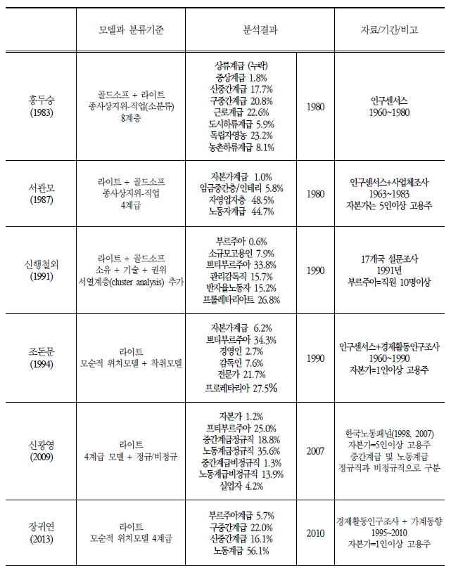
2.3 선행연구의 성과와 본 연구의 과제
이상에서 살펴본 주요 선행 연구들은 계층분석 이론과 모형을 적용하여 한국 사회의 계층구조와 변화를 추정한 대표적인 연구 성과들이다. 각 연구들의 주요 발견 내용과 연구 시기를 경제활동인구조사의 종사상지위와 직업별 구성을 계산하여 표시한 것이 그림 3 의 그래프이다.
먼저 서관모(1985)의 경우 임금노동자가 크게 증가하고 자영농민이 빠르게 감소하던 시기였던 1980년 연구를 통해 노동계급이 증가하고 구중간계급이 축소되어 계급양극화가 진전될 것으로 보았다. 당시 서관모의 계급비중 추정이 잘못된 것은 아니지만, 도시와 농촌지역의 상반된 경향을 구분해서 보지 않고 일면적으로 중간계급 축소에 의한 계급양극화론이 입증된 근거로 삼은 것은 문제가 있었다. 그래프의 하단에 점선으로 표시된 도시자영업자 비중이 증가하는 모습이 뚜렷하게 확인된다. 이에 반해 홍두승(1983)이 도시와 농촌을 부문으로 구분해서 도시자영업자가 증가하고 있다는 점을 포착한 것은 강점이 있었지만, 노동자 가운데 신중간계층을 판매서비스직까지 지나치게 폭넓게 포함시켜서 중간층 확대를 과대평가한 측면이 있었다고 해야할 것이다(홍두승의 신중간계급 그래프는 가독성을 해치기 때문에 표시하지 않았다). 현재로서는 농업부문의 구중간계층이 더 이상 크게 줄어들 가능성은 없기 때문에 이 문제는 해소된 것으로 봐도 무방하다.
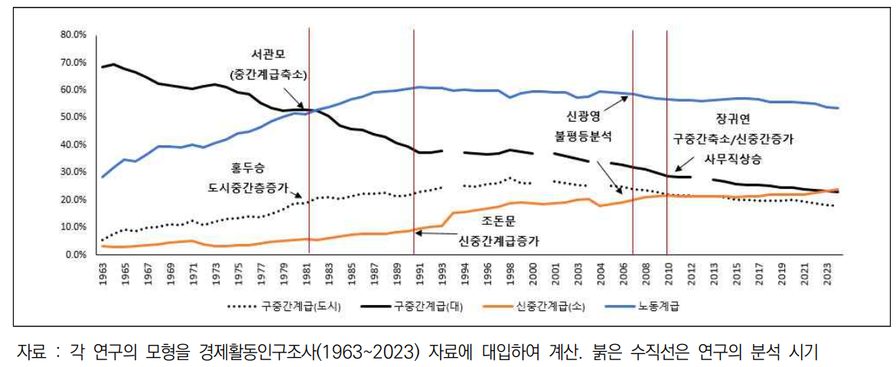
한편 조돈문(1994)은 1990년에 이르기까지 산업구조 변화와 계급구성 변화로 신중간계급이 증가한 것에 주목하면서 탈숙련화론이 아닌 노동력 고급화론을 지지한다고 결론을 지었다. 2005년 연구에서도 신중간계급의 증가와 함께 노동계급 내부의 숙련노동자 증가 추세가 이어지고 있다고 보고 노동력 고급화론을 지지하였다. 장귀연(2013)은 조돈문의 이 연구를 이어받아 외환위기 이후 계급구조 변화를 분석했는데, 신중간계급의 증가와 사무직의 빠른 소득 증가 등에 주목했다. 결론은 조돈문의 노동력 고급화 결론과 유사하다고 할 수 있다. 하지만 이 시기에 계급구조 모형의 한계로 인해 비정규직이 증가하고 탈숙련화와 주변화가 동시에 진행된 상황이 잘 드러나지 않는 문제가 있었다. 이와 함께 장귀연은 계급별 소득수준을 가계동향조사 자료로 비교하였는데, 가구주로만 국한된 것이었고 가구소득만 비교한 것이어서 개인 단위의 계급구조 모형과 일치하지 않는 문제가 있었다. 이와 함께 1인가구는 분석대상에서 모두 제외했기 때문에 두 분석간의 연계가 거의 없다고 할 수 있다. 이밖에도 자본가계급을 1인이상 고용주로 넓게 정의한데다 가구소득 분석에서는 2008년 이전과 이후의 자본가계급 정의가 달랐기 때문에 일관된 비교에 한계가 있었다.
신광영(2009)의 분석은 관리직과 전문기술직으로 구성되는 신중간계급이 증가하고 노동계급이 정체 내지는 감소하는 시기에 이루어진 것이었다. 그런데 1998년과 2007년 기간 동안 신중간계급이 감소한 것으로 추정한 것은 조돈문을 비롯한 다수의 연구결과와 비교할 때 다소 의문스런 결과이다. 그리고 세대간 불평등과 세대내 불평등 가운데 어떤 것이 더 중요하고 강한 영향을 미치는 것인가를 규명하기 위한 것이 목적이었는데, 결론적으로 세대간 불평등이 약하다는 논거로 제시한 것은 계급 변수가 아니라 비정규직 요인이었다. 즉, 연령 코호트별 소득 격차는 나이가 들면서 해결될 수 있는 문제이지만 비정규직은 연령이 증가해도 소득이 증가하는 효과가 없다는 점, 그리고 청년층보다 고령층의 비정규직 비율이 더 높다는 것을 이유로 들었다. 심지어 계급효과는 고용형태를 통제할 경우 사라진다고도 했다. 그렇다면 남게 되는 의문은 불평등에 미치는 영향이 이처럼 크고 결정적인 고용형태 문제를 왜 계급내 분파 차원의 문제로 계속 남겨두어야 하는가이다. 신광영의 분석에서는 고용형태가 대단히 중요하다는 결론에 이르면서도 계급구조에 정식으로 포섭하지 못하는 문제가 여전히 남아 있다.
지금까지 살펴 본 국내 연구에 대한 평가를 통해 본 연구에서 계승 보완해서 발전시켜야할 지점을 정리해보면 다음과 같은 과제를 제시할 수 있다.
첫째, 1980~90년대의 초기 연구들은 활용할 수 있는 자료와 데이터의 한계로 인해 많은 제약을 받아야 했다. 이 때문에 센서스 자료와 국가통계의 2차 집계자료를 사용해서 계급 또는 계층의 규모와 비중을 추정하는 연구가 많았다. 계층분석과 불평등 분석이 서로 다른 자료에 의존해야 했다. 그러나 1998년 이후 한국노동패널조사가 이루어지고 자료가 축적되면서 계층분석에 활용할 수 있는 다양한 변수가 확보되었고 장기시계열에 걸친 계층분석이 가능하게 되었다. 그런 점에서 한국 사회의 불평등을 계층분석을 통해 접근하기 위해서는 노동패널 자료를 충실하게 활용할 필요가 있다. 본 연구에서는 노동패널을 단일 자료로 계층분류와 함께 개인과 가구단위의 계층별 소득 및 자산 불평등 분석을 일관된게 수행하고자 한다.
둘째, 분석적 마르크스주의나 베버주의 관점의 계급 또는 계층 이론 입장의 차이를 떠나 계층분석에서 사용하는 분류 기준은 사실상 큰 차이가 없는 것으로 확인된다. 라이트와 골드소프에 의해 발전되어온 계급분석 모형은 일정 규모 이상의 고용주와 고위임원을 최상위계층으로 구분하고 있으며, 반대로 일정 규모 이하의 고용주와 자영업자는 구중간계급 또는 프티부르주아로 분류하고 있다. 임금노동자 가운데 관리직과 전문직 직업 종사자를 직업 범주를 사용하여 별도의 계층으로 구분하는 것도 실제적인 의미에서 큰 차이가 없다. 따라서 이 연구에서는 지금까지 공통적으로 지지되어 온 라이트의 4계급 계층모델을 중심으로 골드소프의 고용직업 지위 분류를 보완적으로 활용하고자 한다.
다만, 노동계급과 신중간계급의 분류에 있어서 직업지위와 계층간 격차 문제를 보다 엄밀하고 세심하게 고려할 필요가 있는데, 장귀연은 노동계급 내부 분파 가운데 사무직의 소득증가율이 매우 급격하다고 평가하면서 신중간계층으로 사무직을 편입할 필요성이 있다고 조심스럽게 언급한 바 있다. 사무직은 소득이나 지위로 보면 매우 넓게 분포하는 직업에 해당한다. 가계금융복지조사 분석 결과 소득 최상위 5% 개인과 가구에서 가장 큰 비중을 차지하는 공통적인 직업이 사무직이었다. 그리고 한국 경제의 위상 변화에 따라 글로벌 대기업이나 공기업, 공무원 사무직 지위가 이전에 비해 상당히 높아진 것도 분명한 현실이다. 본 연구에서는 이러한 점들을 고려해서 사무직의 계층분류 기준을 새롭게 재정의하고자 한다. 자세한 내용은 4장에서 다룰 것이다. 셋째, 이제는 비정규직 문제를 계급분석과 계층분석의 모형에 정식으로 포함시키는 것을 더 이상 주저할 필요가 없다고 판단된다. 영국과 일본의 연구에서 시도되었던 것처럼 프레카리아트(precariat) 또는 언더클래스(underclass) 등으로 분류되는 새로운 하층계급의 존재와 계층적 고착화 문제는 현단계 계층분석 연구를 통해 규명해야할 중요한 과제이기도 하다. 비정규직 노동이라 하더라도 계급위치에 의해 전문성과 자율성을 확보한 계층이 있을 수 있으며 저소득과 고용불안정 상태에서 실업과 취업을 반복하는 열악한 처지의 다수 비정규직들이 또한 존재한다. 외환위기 이후 이러한 상태가 십 수년간 뚜렷한 개선 없이 지속되어온 상황에서, “같은 것을 같게 다른 것을 다르게” 취급하는 명확한 접근법이 필요한 때이다. 계층의 위치를 결정할 때는 고용상의 지위와 직업 범주를 1차적인 기준으로 적용하되, 고용형태를 추가로 적용할 경우에는 지위와 권력관계, 조직재와 기술재 등 기존의 계급이론에서 설정하고 있는 기준들을 고려하고, 각 직업별로 정규직과 비정규직의 소득과 자산이 실제로 어떤 수준에 있는지 확인함으로써 현실적합성이 있는 계층분류가 되도록 해야할 것이다. 이 내용 역시 4장에서 다시 다루게 될 것이다.
끝으로 신행철외(1991)의 연구에서는 골드소프 모형과 라이트 모형, 그리고 순수계층모델 등 복수의 계층분류 모형을 도출한 뒤 모델간의 유사성과 상관 정도를 비교 검토하고 소득과 인식 등의 종속변수 분석에서 활용한 바 있다. 이것은 계층분류의 결과에 대한 타당성을 검증하고 상이한 계층분류 분석 결과를 보완적으로 활용할 수 있는 좋은 방안이다. 이 연구에서도 서로 다른 계층분류 방법을 적용한 다음 분류 결과를 대조하고 타당도 평가를 실시할 것이다.
3 개인-가구의 소득·자산 분배 현황과 추이
3.1 소득분배 현주소
3.1.1 한국의 소득불평등 국제비교
3.1.1.1 OECD와 세계불평등데이터베이스(WID)
한국 소득불평등의 상태를 상세하게 분석하기 전에 장기간에 걸친 소득분배 추이와 함께 한국의 소득불평등 정도가 다른 나라에 비해 어느 정도인지 확인할 필요가 있다. 이에 관한 데이터가 제공되는 곳으로는 OECD26 와 토마 피케티(Thomas Piketty) 등 학자들이 운영하는 세계불평등데이터베이스(World Inequality Database, 이하 WID)가 대표적이다.27 OECD의 자료는 각국 정부가 보고하는 소득통계를 집계한 것이며, WID는 각국을 담당하는 연구자들이 통일된 기준에 따라 가구소득 통계와 소득세, 국민계정 등 다른 자료들을 재가공해서 국제비교 자료를 새롭게 작성한 것이다. 이 글에서는 OECD와 WID 통계에서 지니계수를 비교해 보기로 하고 이용 가능한 OECD 회원국 전체에서 한국의 위치를 확인한 다음, 주요 8개국과 한국의 지니계수 추이를 비교해보고자 한다.28
먼저 OECD 통계를 보면 한국은 시장소득 기준으로는 31개 회원국 중 30위로 가장 평등한 국가에 속하지만, 처분가능소득 기준으로는 12위로 불평등한 국가에 속한다(그림 3-1). 주요 10개국 국가들과 지난 10년간의 추이를 비교하면 한국은 스웨덴, 네델란드, 캐나다 등과 함께 시장소득 불평등이 낮은 국가로 분류되며 비교대상 10개국 대비 가장 평등한 국가의 위치를 유지해 온 것으로 나타난다(그림 4).
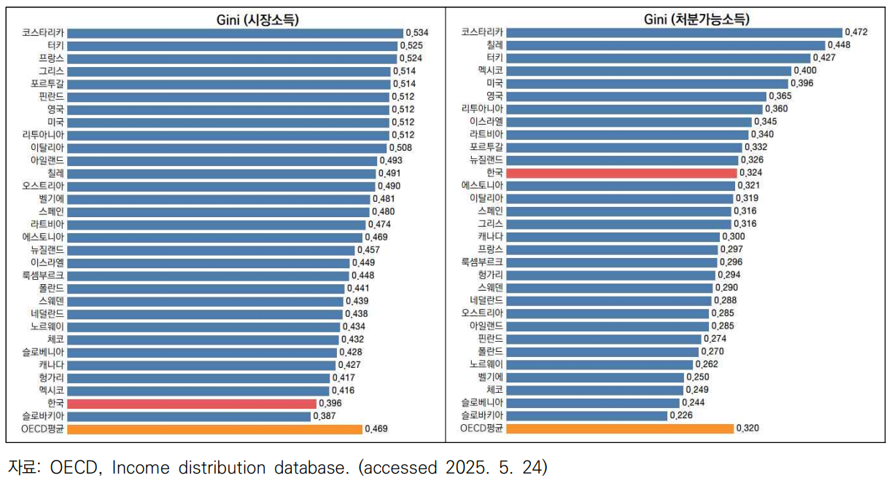
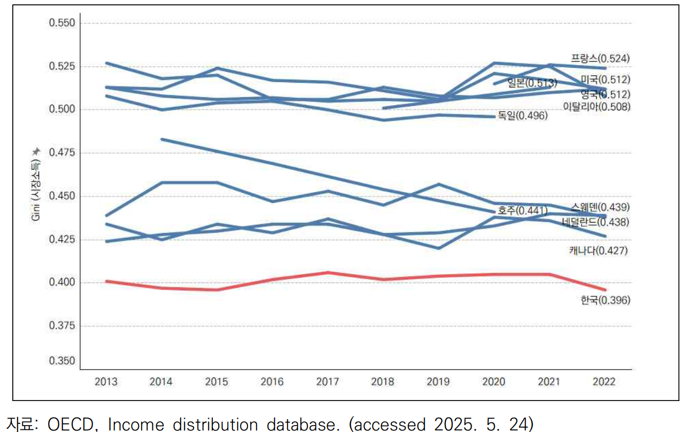
반면 처분가능소득을 주요 국가들과 추이를 비교했을 때 한국의 위치는 <그림 6> 에서 확인되는 것처럼 10년 전에는 미국 다음으로 소득불평등이 심한 국가에 속했지만, 그동안 빠르게 불평등도가 완화되면서 2022년에는 미국, 영국, 일본에 비해서는 불평등이 낮은 수준이 되었다. 균등화처분가능소득 지니계수는 2022년 기준 0.324로 이탈리아(0.319)에 비해 약간 높은 수준이다.
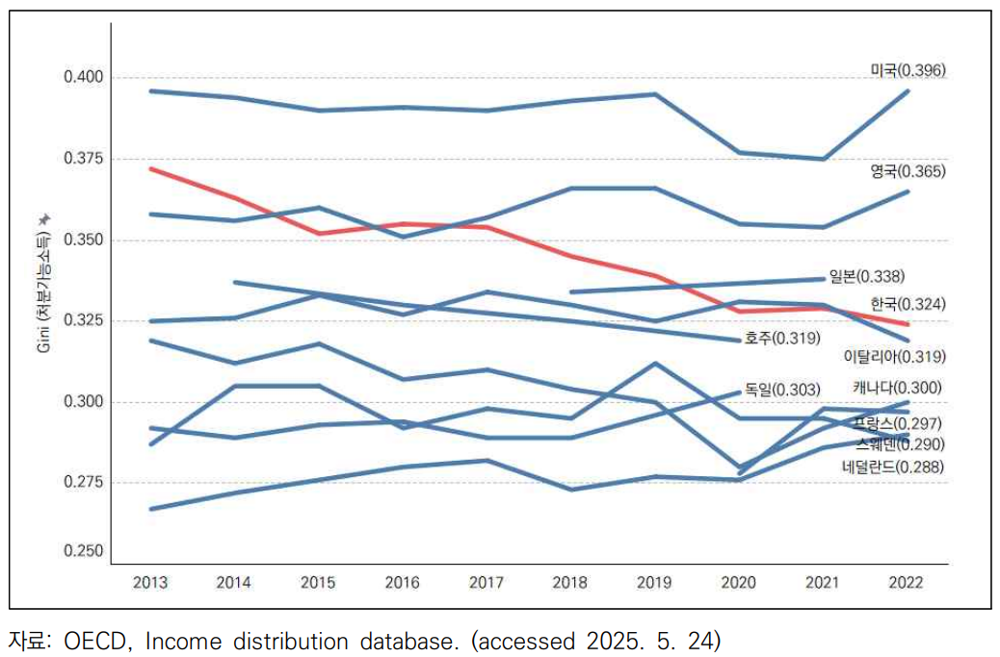
한편 피케티 등 연구자들이 작성한 WID의 2023년 지니계수에서는 한국이 세전소득에서는 OECD 평균보다 약간 낮은 수준의 국가(35개국 중 22위)로 나타나고 세후소득에서는 평균보다 약간 높은 수준에서 중간 정도의 불평등한 국가(35개국 중 16위)에 속하는 것으로 나타난다(그림 6). WID의 지니계수는 OECD의 통계와 작성에 사용된 자료와 작성기준이 다르다는 점을 감안해야 하는데,29 세전소득 지니계수는 OECD의 시장소득 지니계수에 비해 매우 높게 추정됐고 세후소득 지니계수는 OECD의 처분가능소득 지니계수에 비해 약간만 더 높은 것으로 추정됐다는 점에서 차이가 있다. 공통적인 것은 한국의 처분가능소득 혹은 세후소득 지니계수가 국제적으로 중간 정도 수준에 있다는 것과 함께 최근 들어 빠르게 개선되고 있는 추세에 있다는 점이다.
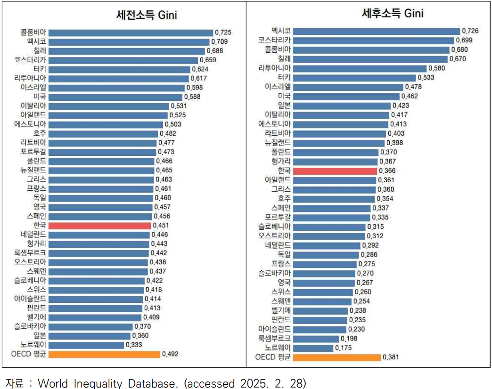
WID 지니계수 통계에서 OECD와 큰 차이를 보이는 것은 한국이 적어도 2000년대 중반까지는 세전소득 불평등이 낮은 국가에 속했지만 2010년 이후에는 중간 수준의 불평등을 나타내는 국가로 변모했다는 점이다. WID 통계에서 지니계수가 가장 낮았던 때는 1995년으로 그 후 2010년까지 한국의 지니계수는 세전과 세후 모두 매우 가파르게 상승한 것으로 나타난다(그림 8, 그림 9). 이 시기는 대부분의 국가들도 2008년 글로벌 금융위기 시기에 이를 때까지 지니계수 상승이 나타나긴 했지만 한국의 상승폭과 속도가 단연 두드러진 양상을 보인다.
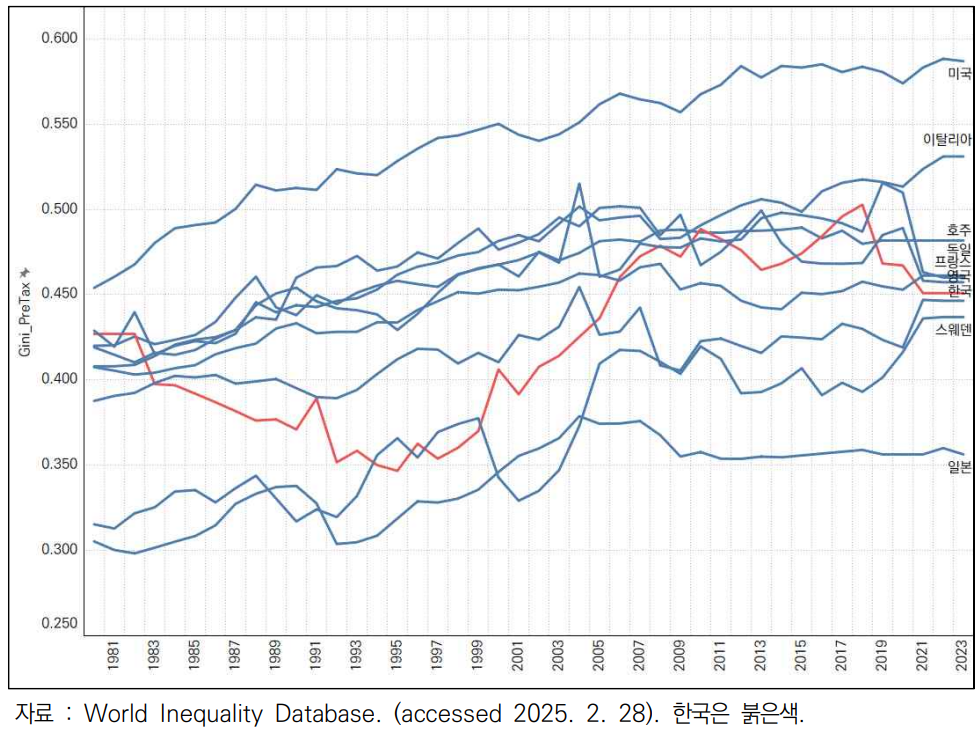
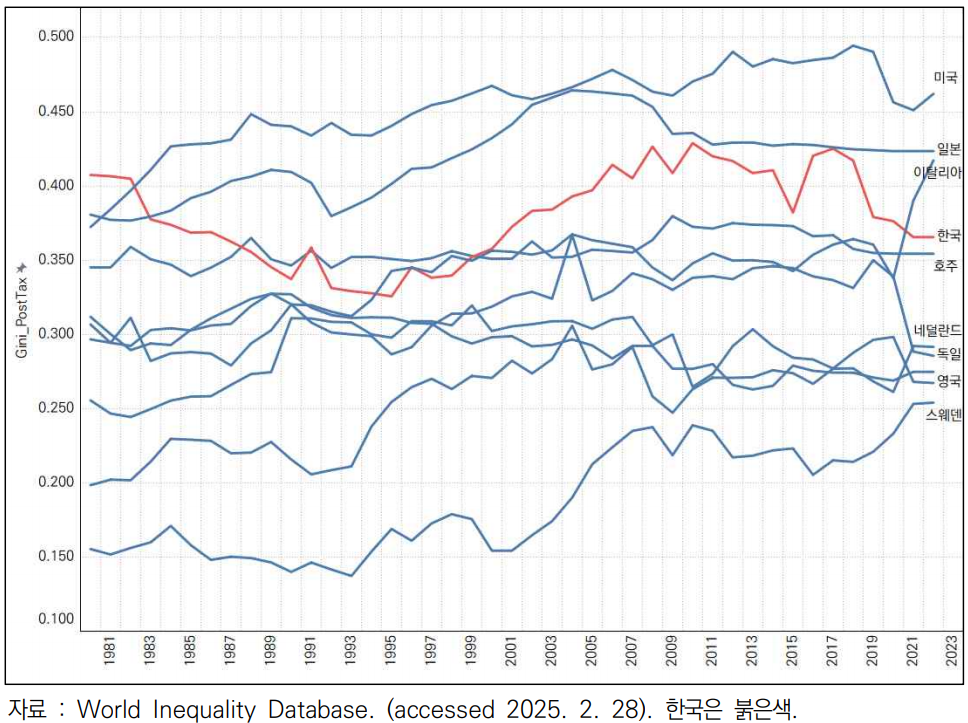
3.1.1.2 세계불평등데이터베이스의 한국 소득불평등 진단
세계불평등데이터베이스에서 작성한 한국의 소득분배 통계는 토마 피케티의 <21세기 자본>이 그랬던 것처럼 지니계수보다는 상위 소득계층의 소득집중도를 소득불평등의 주된 지표로 삼고 있다. 그리고 자산불평등에 관한 지표들도 불평등의 중요한 척도로 거론하고 있다. 여기에 한국의 데이터를 1980년까지 소급해서 추정한 결과를 담고 있기 때문에 2011년 통계부터 수록하고 있는 OECD에 비해 시계열면에서도 충분히 긴 기간을 다루고 있다.
이 때문에 WID의 한국 소득분배 통계 작성 결과를 전체적으로 좀 더 자세히 살펴보는 것이 이후 이 연구에서 다룰 한국의 개인과 가구의 소득분배 추이를 이해하는데 사전 정보를 충실히 제공하는 의미가 있다고 하겠다.
WID의 한국 데이터를 정리하는 작업은 김낙년(2018)에 의해 1963년부터 2016년까지의 기간에 대해 진행된 것이 대표적이며 가장 최근에는 홍세현(2024)에 의해 1933년 이후 2023년까지의 한국 데이터가 정리된 바 있다.30 특히 홍세현·김낙년·Zhexun Mo·Li Yang(2024)는 가계동향조사 원자료, 국세청 소득자료, 국민계정을 활용하여 한국의 소득분배를 20세 이상 성인기준으로 개인화하여 소득분배 시리즈를 추계하여 작성했는데, 이른바 분배국민계정(DINA)을 활용한 방법으로 이 방법론에서는 성인의 개인소득 총합이 국민계정의 총소득(GNI, NNI)와 일치하도록 한 것이다. 데이터 작성에 활용된 자료는 1963~2022년까지의 가계동향조사(소득·지출) 원자료(도시-농어가 결합)와 국세청 소득자료, 국민계정(총국민소득과 비과세소득 추가 보정) 등이 이용되었는데 이들 자료를 결합하여 성인 개인 소득분포를 추정한 것이다.
이들이 제출한 보고서에 따르면 2023년 기준으로 한국의 상위10% 소득점유비중은 35.5%로 OECD 35개 회원국 중 16위로 중간수준이며, 상위 5%의 점유비중은 28.0%로 10위, 상위 1%의 점유비중은 15.1%로 9위를 차지하는데, 최상위 소득계층으로 갈수록 소득집중도가 심화되고 불평등 수준이 심해지는 특징을 보여준다. 주요 국가들과 비교하면 상위 10%, 상위 5%의 소득집중도는 미국이나 일본보다 낮고, 프랑스보다는 높은 수준이며, 상위 1%의 소득집중도는 미국보다는 낮지만 독일, 영국, 일본보다 모두 높은 수준에 있는 것으로 나타난다(표 3-1).
이와 함께 2023년 기준 자산불평등의 경우 순자산 상위10%의 점유비중은 59.0%로 중간 수준이지만(16위), 국민소득 대비 국민순자산 비율, 이른바 피케티비율로 불리는 소득자산 배율은 9.81배로 OECD 회원국 중 가장 높은 국가로 나타나고 있다. 민간이 소유한 자산으로 국한하더라도 민간소득 대비 민간순자산배율은 6.8배인데 이것 역시 7번째로 높은 수준으로 나타난다. 요약하자면 한국은 소득 상위층으로 갈수록 소득집중도가 심화되며, 소득대비 자산가격이 매우 높아 자산불평등이 더 심한 국가에 속한다고 할 수 있다.
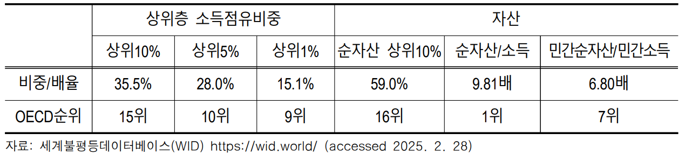
<그림 10> 에서 1980년 이후 한국의 상위계층 소득집중도 장기 추이를 살펴보면, 1997년말 외환위기 이후 불평등 지표가 급격히 악화되기 시작한 것으로 나타나고 있다. 시기를 구분해서 살펴보면 1980년 이후 1990년까지는 상위10%의 소득집중도가 완만하게 낮아지고 상위5%와 상위1%의 소득집중도는 완만하게 증가하는 시기였고, 1990년부터 1997년까지는 가장 빠르고 급격하게 소득분배가 개선되는 시기였던 것으로 나타난다. 하지만 1997년 외환위기 이후 2010년까지 소득분배가 급격하게 악화됐으며, 2010년부터 2013년까지 분배가 다시 개선되는 짧은 기간이 있은 뒤 다시 2014~2018년 기간에 분배 악화가 다시 진행된 것으로 평가된다. 2018~2019년 기간 동안에는 다시 소득분배가 개선되었으나 2020년 코로나19 사태 발발 이후 소득분배 개선 흐름이 정체하고 상위5%의 소득집중도는 다시 악화 조짐이 나타나고 있다.
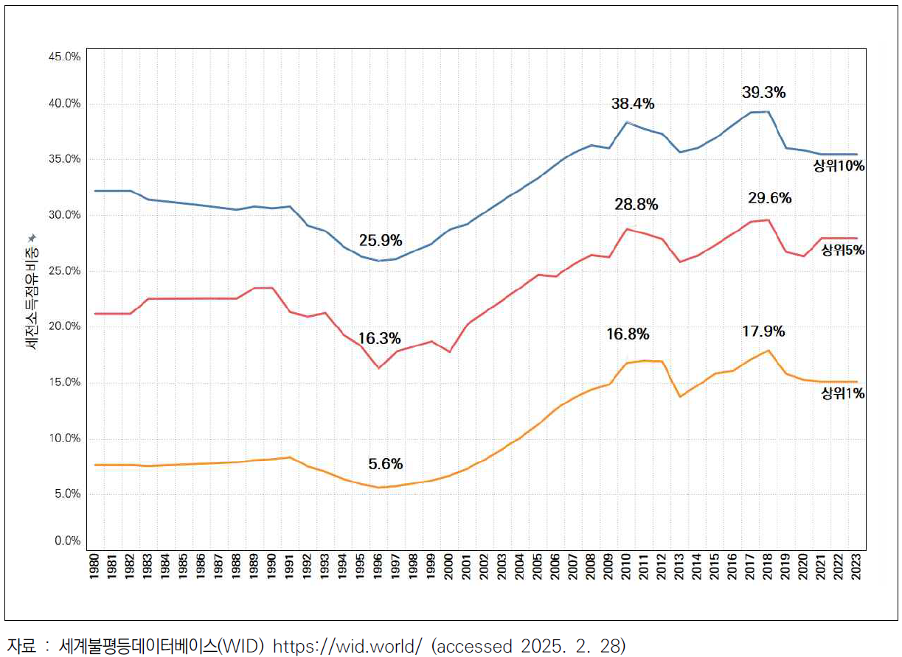
1980년 이후 2023년까지 상위10%의 소득집중도가 가장 낮았던 시기는 1996년(25.9%)이며, 가장 높았던 시기는 2017년(39.3%)으로 나타난다. 2023년 현재 상위10%의 소득집중도는 35.5%로 2007년과 비슷한 수준인 것으로 나타난다.
3.1.1.3 WID 방법론의 의의와 한계
세계불평등데이터베이스(WID)의 한국 데이터는 개인수준의 불평등 지표를 측정하기 위한 원시자료로 가계동향조사 자료를 활용하고 있는데, 가계동향조사는 7,200가구 규모의 조사이고, 설문조사(가계부기입) 방식의 조사로 소득의 정확도가 떨어지며 고소득층의 소득 포착률이 매우 낮은 근본 문제를 안고 있는 것으로 평가되어 왔다.
이것은 WID의 한국 데이터 작성에 참여해 온 연구자들 스스로 여러 차례 지적해 온 것으로, 그럼에도 이 자료를 사용한 것은 1962년부터 조사가 시작돼 온 점 때문에 장기시계열을 작성하기 위한 목적 때문에 선택한 것으로 보인다. 이와 함께 일반에 공개된 가계동향조사의 원시자료에는 가구주뿐만 아니라 가구원의 소득정보가 포함되어 있는데, 이를 활용해서 개인단위의 소득정보를 성별, 연령별로 구축하는데 적합하다고 판단한 것으로 보인다.31
그렇지만 고소득 가구를 충분히 포함하고 있으면서 가구원의 소득정보로 담고 있는 보다 객관적인 데이터가 엄연히 존재하고 있다. 2011년 이후로 국한한다면, 가계동향조사보다 훨씬 정확도가 높은 가계금융복지조사를 사용할 수 있다. 가계금융복지조사의 경우 공공용으로 일반에 공개되는 자료에는 가구원 개인의 소득정보가 제공되지 않지만, 국가데이터처가 별도로 승인을 거쳐 제공하는 인가형 원격접근서비스(RAS)에서는 가구원의 개인소득과 상세한 소득변수, 그리고 자산과 관련한 정보가 있다.32 특히 2016년 이후 근로소득과 사업소득, 재산소득, 공적이전소득, 부채의 경우 국세청과 금융기관의 행정자료로 정확한 소득과 부채을 파악할 수 있고, 복지급여도 정부의 행정자료로 지급된 실제 금액을 확인할 수 있다는 큰 장점을 가지고 있다.
따라서 가계금융복지조사의 가구원 개인소득과 가구소득으로 한국의 개인과 가구의 소득분포에 관한 단일자료 기반 분석을 실시할 수 있는 조건이 마련되어 있는 것이다.33 이에 관한 분석은 다음 절에서 다루기로 한다.
이하의 분석에서는 가계금융복지조사의 RAS 데이터가 개인소득과 가구소득에서 국세청의 신고소득과 한국은행의 국민계정(National Account)의 가계소득 총계와 어느 정도 일치하는지 확인한 다음, 추가적으로 개인과 가구의 소득 및 자산에 대한 상세한 분석을 실시하고자 한다.
3.2 가계금융복지조사 RAS 데이터의 적합성
3.2.1 국세청 소득신고 자료와 비교
가계금융복지조사는 국가승인통계 가운데 가장 신뢰할 수 있는 자료이다. 이에 이 통계가 개인과 가구의 모집단을 어느 정도 대표하고 있는지 확인할 필요가 있다. 우선 가계금융복지조사의 개인소득 자료가 거시자료인 국세청의 소득신고 자료와 총량에서 어느 정도를 일치하는지 확인해보고자 한다.
한국의 소득과세 체계(tax unit)은 부분적으로 세액의 결정단계에서 부양가족 공제 등 가구개념을 적용하긴 하지만 소득세 부과의 기본단위는 가구가 아닌 개인을 기준으로 하고 있다. 프랑스나 미국의 경우 개인이 아닌 가구 또는 부부를 기본단위로 하기 때문에 우리와는 차이가 있다. WID도 개인 단위 소득으로 불평등을 측정하는 것을 기본으로 하지만 모든 가구원이 아닌 20세 이상 성인을 기준으로 하고 있다. 하지만 한국의 소득신고 제도와 과세체계를 고려한다면 가금복의 15세이상 가구원 개인소득과 국세청의 개인단위 소득신고 자료를 비교하는 것이 올바른 비교 방법이다.
가금복의 가구원 개인 소득 정보에는 근로소득과 사업소득, 재산소득, 공적이전소득 등이 모두 개별적으로 확인 가능하다. 그런데 국세청의 종합소득세 자료에는 2천만원 미만의 금융소득이나 배당소득은 분리과세로 별도로 집계되기 때문에 개인소득의 총합을 추계할 수가 없다. 사업소득의 경우에도 종합소득을 신고하는 사업소득자, 원천징수 사업소득자(플랫폼, 프리랜서 유형), 연말정산 사업소득 신고자(보험설계사 등)으로 따로따로 나뉘어져 있어 합산 비교가 불가능하다.
우선 가능한 것은 근로소득 총합을 비교해볼 수 있다. 가금복의 가구원 개인의 근로소득 총계와 국세청의 연말정산 근로소득과 분리과세되는 일용근로소득을 합산해서 비교하면 된다. 표 4 의 2023년 귀속년도 기준 국세청 근로소득 연말정산 신고자수는 20,852천명이고 총급여액은 903조원이며, 일용근로소득 신고자수는 7,088천명 일용근로소득액은 69조원 규모이다. 이를 합산하면 총 근로소득자 수는 27,940천명이며 근로소득 총액은 973조원이 된다. 한편 가계금융복지조사의 2023년 귀속년도 기준 근로소득이 있는 가구원 수는 27,486천명이고 근로소득 총액은 971조원이다. 가계금융복지조사의 근로소득이 포괄률은 인원수로는 98.4%, 금액으로는 99.8% 수준으로 국세청에 신고된 근로소득을 충분히 포괄하고 있다고 평가할 수 있다.
연도별로 추이를 비교해보면 행정자료로 소득자료의 보완이 이루어지기 시작한 2016년 이후 인원수와 소득금액에서 가금복과 국세청 자료의 근접률이 크게 높아진 것을 알 수 있다. 표 4 를 보면, 2016년 이전에 가금복 데이터에서 근로소득이 있는 가구원 수가 국세청의 소득신고 인원의 80% 수준이던 것이 2016년에는 96% 수준으로 높아졌고 2016년 이후에 점점 100% 수준에 근접하게 된 것을 확인할 수 있다.
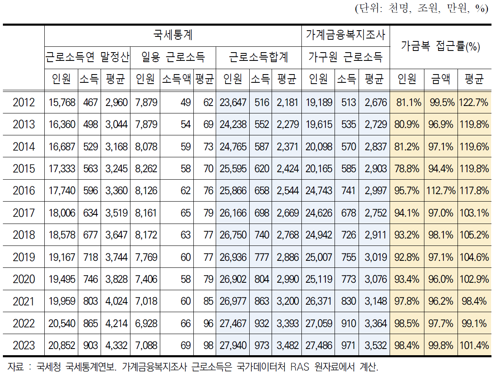
가금복의 근로소득 분포 통계도 전수자료인 국세청의 구간별 집계 결과와 거의 일치하고 있다. 표 5 는 2023년 기준 국세통계의 ’근로소득 연말정산 신고 자료’와 ’일용근로소득자별 지급명세서 제출현황 자료’를 결합해서 전체 근로소득 신고자의 소득금액 구간별 구성 비율을 비교할 수 있도록 정리한 것이다.
표 5 을 보면 국세청의 근로소득 신고인원에서 1억원 이하의 소득자 비중이 95.01%이고 가계금융복지조사의 같은 구간 비중은 94.82%로 거의 동일하며, 가금복의 1억원 이상 고소득자 비중(5.2%)이 국세통계(4.99%)보다 높고 10억원이상 초고소득자 비중에서도 국세통계가 0.02%인데 가금복도 0.01%로 거의 차이를 보이지 않고 있다. 가금복의 고소득층 통계가 매우 정확하다는 의미이다.
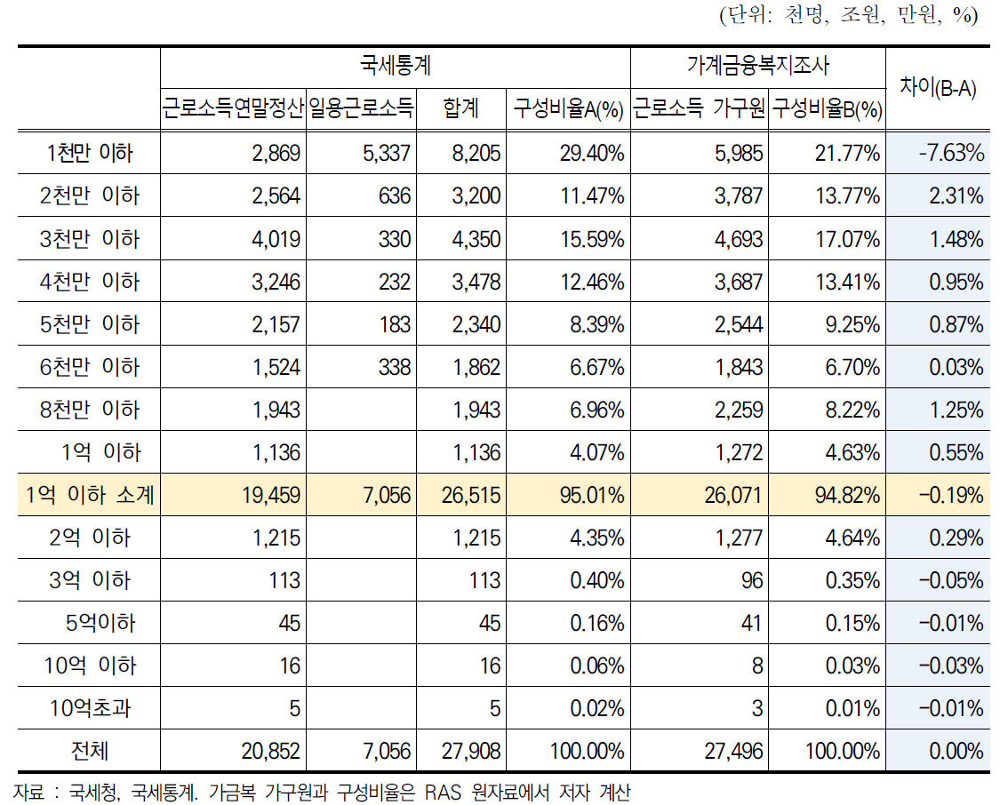
3.2.2 국세청 천분위 소득자료와 비교
국세청이 국회에 제출하는 근로소득 천분위 자료를 통해서 상위소득층의 소득점유비중을 확인할 수 있는데, 가금복 원자료에서 추정한 소득점유 비중과 일치한다. 표 6 에서 2023년 국세청 천분위 자료에서 확인된 상위20%의 소득총액은 438조로 전체 근로소득 총액 903조원의 48.5%를 차지하고 있다. 그런데 가금복 데이터에서 추정한 상위20%의 소득점유 비중은 49.96%로 국세청 자료와 거의 동일하다.
이와 함께 국세청 자료에서 상위10%의 소득점유 비중은 31.59%이고, 상위5%의 점유비중은 20.4%, 상위1%의 점유비중은 7.67%로 확인된다. 그런데 가금복의 상위소득 계층의 점유비중을 추정한 결과 상위10%가 32.11%, 상위5%와 상위1%가 각각 20.18%, 6.78%인 것으로 나타난다. 가금복 데이터가 상위소득 점유비중 추정에서도 상당한 정확성을 가지고 있는 것으로 평가할 수 있다.
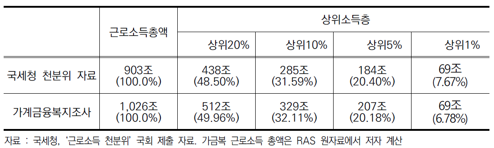
한편 사업소득의 경우 가금복 자료에서는 총액과 소득분포를 모두 확인할 수 있지만, 국세청 자료는 소득세법에 따른 신고유형별로 종합소득세 신고자, 보험설계사, 음료판매업 등 연말정산 사업소득신고자, 그리고 플랫폼과 프리랜서에 적용되는 인적용역원천징수 사업소득자로 각각 별개로 집계되고, 사업소득의 인별 합산은 불가능하고 분포를 확인할 수도 없으며, 단지 총액 규모만 비교할 수 있다. 2023년 기준 종합소득 신고자의 사업소득은 인원은 12,179천명, 금액으로는 총 154.2조원이었고, 연말정산 사업소득자는 513천명의 2.5조원, 그리고 원천징수 인적용역에 해당하는 사업소득은 8,620천명 146.1조원 규모인 것으로 나타난다. 이를 모두 더하면 총 사업소득액은 302.8조원이 된다(표 7). 그런데 가금복에서 확인한 가구원의 사업소득액은 11,968천명, 281조원으로 확인되어 가금복의 사업소득의 포괄률이 92.9% 수준에 이른다. 현재로서는 근로소득에 비해 포괄률은 다소 낮지만 개인과 가구, 총액의 분포와 불평등 정도를 단일 자료로 추정할 수 있다는 점을 고려할 때 가금복을 분석자료로 충분히 활용할 수 있다는 것을 의미한다.
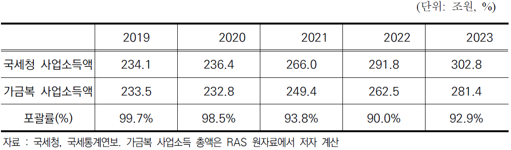
끝으로 국세청이 국회에 제출하는 소득통계 가운데 ’통합소득 천분위 자료’는 종합소득 신고인원과 근로소득 연말정산 인원의 중복을 제거한 것인데, 근로소득과 사업소득 외에도 2천만원 이상의 금융소득과 일부 임대소득 증 재산소득까지 포함한 개인소득 집계를 확인할 수 있다. 이를 가금복의 개인취업소득(근로소득+사업소득)에 재산소득을 합산하여 비교해보면 확장된 범위에서 가금복 자료의 대표성을 추가로 확인해볼 수 있다(표 8). 국세청 통합소득 천분위 자료의 경우 국세청의 종합소득 신고대상에서 제외되는 분리과세 재산소득이 포함되어 있지 않다. 이에 따라 가금복의 개인취업소득 및 재산소득(근로소득, 사업소득, 재산소득의 합계액) 총액이 통합소득보다 규모가 더 큰 반면 1인당 평균액이나 상위소득계층의 경계값은 국세청 자료보다 낮은 특징을 보인다.
표 8 의 국세청 자료에서는 2023년 기준 근로소득과 종합소득을 신고한 인원이 모두 26,888천명으로 확인되지만 가금복 자료에서는 아주 작은 은행이자 소득이 있는 가구원도 모두 포함되기 때문에 개인취업소득과 재산소득이 있는 가구원의 총수가 42,359천명에 이른다. 소득총액은 국세청 통합소득이 873조 규모인데 가금복의 취업소득 및 재산소득 총액은 1,087조에 달한다.
반면 평균소득은 국세청 통합소득이 1인당 4,123만원 수준인데 반해 가금복은 3,377만원 수준으로 이보다 낮다. 국세청 자료에서 통합소득 상위10%에 포함되려면 소득액이 8,402만원을 넘어야 하나 가금복 기준으로는 7,752만원이 경계값이 된다. 상위5%와 상위1%의 경계값은 국세청 통합소득이 각각 1억 1,211만원과 2억 249만원인데 반해 가금복 기준에서는 각각 1억 101만원, 1억 7,688만원을 넘어야 한다.
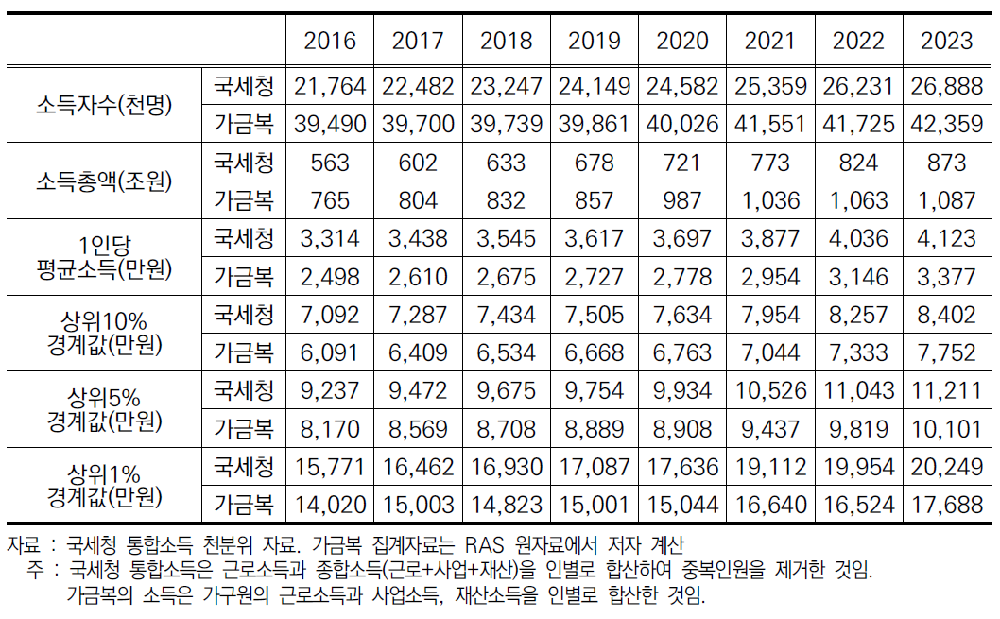
그러나 이같은 차이는 앞에서도 설명했듯이 국세청 분리과세 소득이 인별로 합산되지 않는데 따른 한계이지 가금복 자료의 정확도가 떨어진다고 할 수는 없다. 따라서 가금복 데이터로 한국의 개인과 가구의 소득분배를 충실히 파악할 수 있다는 점을 다시 한번 확인했다고 할 수 있다.
3.2.3 한국은행 국민계정과 비교
가계금융복지조사 자료가 개인과 가구의 소득분배 상태를 얼마나 제대로 반영하고 있는지는 한국은행의 국민계정 통계와 지난해 처음으로 발표한 시험통계인 <가계분배계정> 통계와 비교해봄으로써 확인할 수 있다.
표 9 의 2023년 가금복의 경상소득 총액은 1,590조로 국민총소득(GNI)의 가계부문 총액 1,478조의 107.5%로 국민계정의 소득을 충분히 포괄하고 있다. 가계부와 설문조사로 통계를 작성하던 2012~2015년 기간에는 국민계정 통계에 비해 85.3~88.9% 수준의 포괄률을 보였으나, 2016년 이후 가계총소득의 95% 수준을 포괄하게 되었고 2021년 이후에는 100% 수준을 넘게 되었다.
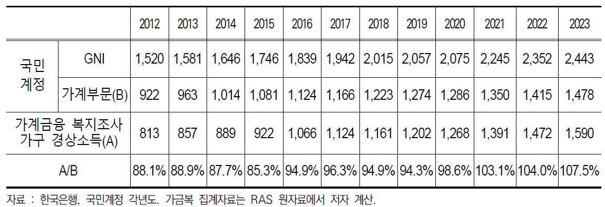
한국은행은 2024년부터 시험통계인 가계분배계정 통계를 발표하고 있다. 이것은 국민경제 수준에서 가계소득의 소득분위별 분배 상태를 집계하는 통계이다. 이를 가계금융복지조사의 분위별 경상소득 총액과 비교해볼 수 있는데, 표 10 을 보면 소득 4~5분위의 경우 가금복이 한국은행 가계분배 계정을 100% 이상을 포괄하고 있는 것으로 나타난다. 미시자료인 가금복이 거시자료인 한국은행의 가계분배계정에서 집계된 상위소득층의 가구소득을 총량적으로 포괄하고 있다는 것을 뜻한다.
한국은행의 가계분배계정과 비교한 결과 가계금융복지조사가 고소득 가구의 소득을 충실히 반영하고 있으면서 오히려 저소득 분위의 소득을 낮게 추정하고 있는 것으로 나타난다. 이것은 한국은행의 가계분배계정이 가계금융복지조사보다 분위간 소득격차를 낮게 평가하고 있다고 말할 수 있다. 그런데 이것으로 한은의 가계분배계정보다 가금복의 정확도가 떨어진다고 말할 수는 없다. 일반적으로 국민계정 통계를 통해 고소득층의 누락 소득을 파악하려고 하는 것을 감안한다면 오히려 가금복 데이터가 다양한 측면에서 충실성을 확보하고 있다고 볼 수 있다.
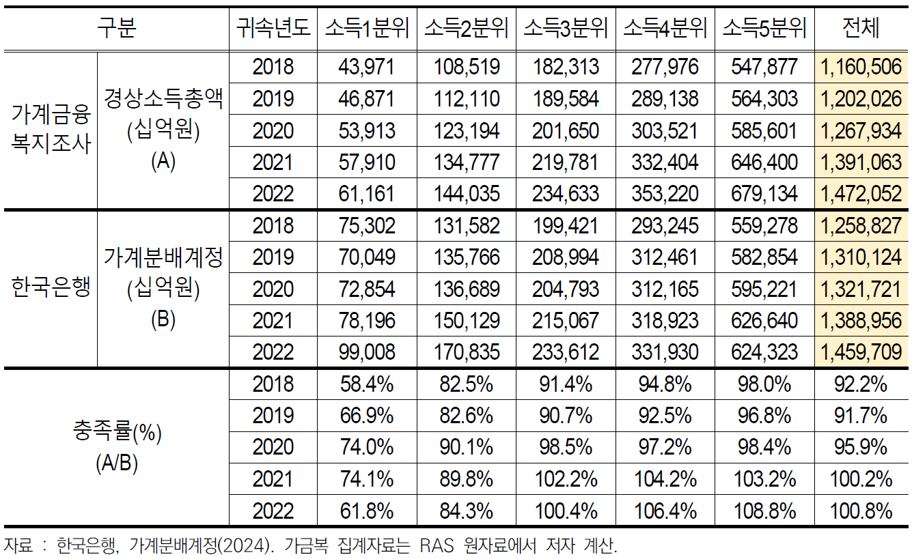
이상과 같이 가계금융복지조사의 가구원 소득정보가 포함된 자료에 대한 분석 결과, 가금복 RAS 통계가 한국의 개인소득과 가구소득을 국세청 소득신고 자료와 한국은행의 국민계정 통계에서 확인되는 모집단의 분포를 충실히 반영하고 있으며 고소득층의 소득 수준과 소득분포에 대해서도 모집단 대표성을 확보하고 있는 것으로 평가할 수 있다.
WID의 연구자들이 한국 자료를 구축하면서 가계동향조사를 미시자료로 이용하고 자료상의 한계를 극복하기 위해 국민계정과 국세통계를 분포 추정에 근거해 보정해서 사용한 것에 비하면, 가금복의 개인과 가구 소득 정보를 그대로 활용하는 것이 오히려 한국의 개인과 가구의 소득분배 상태를 객관적으로 파악하는 더욱 타당한 방법이라는 점을 확인할 수 있었다. 이에 이하의 분석에서는 인구 모집단을 충실하게 대표할 수 있는 가계금융복지조사의 RAS 데이터에 대한 분석을 통해 개인과 가구의 소득과 자산 분배 실태를 확인함으로써 계층분석을 위헤 필요한 기초 실태를 확인하기로 한다.
3.3 개인과 가구의 소득-자산 분배 현황과 추이
3.3.1 가구와 가구원 현황 및 최근 변화
이번 절에서는 가계금융복지조사 원자료로 개인과 가구 단위의 소득분배 현황을 살펴보고자 한다.
가계금융복지조사 자료로 확인한 2023년 한국의 전체 가구수는 22,127천 가구이며 1인 가구는 6,632천(30.0%) 가구, 2인가구 6,238천(28.2%), 3인가구 4,592천(20.8%), 4인가구 3,666천(16.6%), 5인이상 가구 1,001천 가구(4.5%)로 1인가구가 가장 큰 비중을 차지하고 있다(표 11).34 가구원 수 기준으로는 2인 가구가 가장 많은 비중을 차지하고 있다.
2023년 총인구는 52,738천명으로 이 중 1인가구가 6,632천명(12.6%), 2인가구가 12,476천명(23.7%), 3인가구 13,775천명(26.1%), 4인가구 14,664천명(27.8%), 5인이상가구 5,193천명(9.8%)의 분포를 보이고 있다. 가구원 수 기준으로는 4인 가구의 인구가 가장 많다.
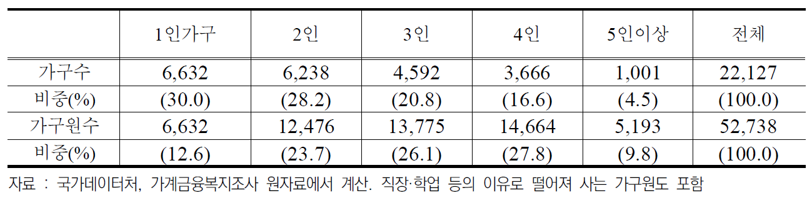
다만, 가계금융복지조사는 직장과 학업 등의 사유로 떨어져 사는 가구원도 가구원으로 포함(경제공동체 개념)하여 집계하기 때문에, 1인가구의 일부분이 다인가구의 가구원으로 파악되게 되며 그 결과 인구총조사에서 파악하는 가구원수별 가구 분포와 차이가 있다. 2023년 11월 기준 인구주택총조사에서 한국의 총가구는 22,073천 가구로 1인가구가 7,836천가구로 가금복보다 1,198천가구 더 많으며 전체 가구의 35.5%를 차지한다. 2인가구는 6,357천가구(28.8%). 3인가구 4,194천(19.0%). 4인가구 2,936천(13.3%), 5인이상가구 750천(3.4%)의 비중을 보이고 있다.35
표 12 의 연도별 추이를 보면 2011년에는 1인가구 비중이 17.8% 그치고 4인이상 가구 비중이 36.6%에 달했으나 2018년에는 1인가구 비중이 20%를 넘어서게 되었고 2023년에는 30.0%를 넘게 되었다. 특히 2020년 이후 1인가구의 증가폭이 매우 크다.
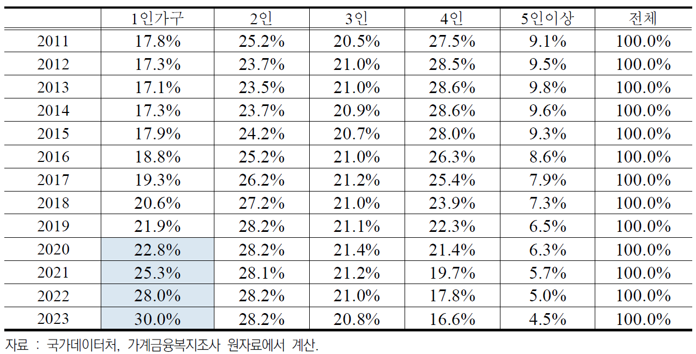
1인가구의 연령별 구성 변화를 보면 2020년 이후 뚜렷한 특징은 과거 1인가구 증가를 주도하는 연령층이 60대이상 고령자들이었던데 반해 2020년 이후에는 20~30대 청년층이 1인가구의 증가를 이끌고 있다는 점이다. 2011년 1인가구에서 60대이상 가구의 비중이 50.4%에서 2019년 58.1%까지 증가했으나, 2020년에는 54.0%로 감소하고 2023년에는 43.8%까지 줄어든 상태이다. 대신 30대이하 가구가 1인가구에서 차지하는 비중이 2019년 15.8%에서 2020년에는 19.0%로 증가하고 2023년에는 28.1%로 급증하였다. 특히 30대가 1인가구에서 차지하는 비중은 2019년 10.0%에서 2023년 19.1%로 2배 가까이 늘어났다. 한편 취업자를 가구내 지위별로 보면 가구주가 취업자에서 차지하는 비중은 크게 줄어들고 배우자와 가구원 취업자가 크게 늘어난 상태이다. 표 13 은 2024년 현재 전체 인구를 가구내 지위별로 구분한 것인데, 총인구 52,838명 가운데 가구주는 22,127천명(42.0%), 배우자가 13,059천명(24.8%), 자녀 및 자녀배우자가 15,291천명(29.0%), 그 외 가구원이 2,260천명(4.3%)이 분포한다. 15세이상 가구원의 취업자비율, 즉 고용률은 63.1%로 나타나는데,36 가구주의 고용률은 78.7%, 배우자는 59.8%, 자녀는 39.5%, 그 외 26.3%를 각각 나타내고 있다.
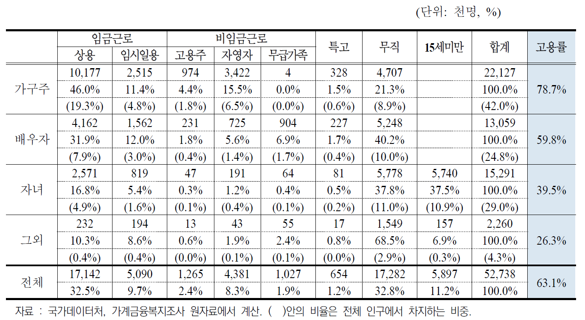
그런데 2012년 이후 가구주의 고용률은 고령화로 인해 81.%에서 78.7%로 –2.8%p 하락한 반면 배우자의 고용률은 47.1%에서 59.8%로 12.8%p 증가했고 자녀의 고용률도 30.9%에서 39.5%로 8.6%p 상승했으며 그 외 가구원의 고용률도 17.9%에서 26.4%로 8.5%p 상승했다(표 14). 2012년 이후 고용률이 56.1%에서 63.1%로 7.0% 상승한 것은 대부분 가구주 이외 가구원의 취업률이 증가한 효과로 나타나고 있는 것이다. 이러한 가구원의 경제활동 상태 변화 흐름은 개인소득과 가구소득의 변화에도 큰 영향을 미치게 된다.
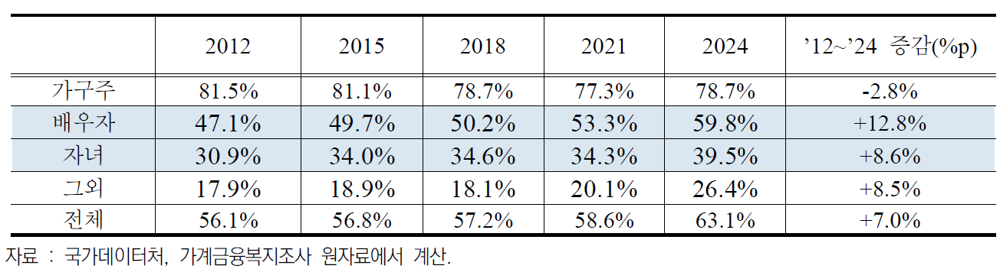
소득분위별로 보면 고소득 가구일수록 고용률이 더 크게 증가함으로써 소득분위간 고용률 격차가 더 확대된 것으로 나타난다. 표 15 을 보면 5분위의 고용률은 2012년 64.3%에서 2024년 72.5%로 +8.2%p 상승한 반면 1분위의 고용률 증가는 36.8%에서 40.5%로 +3.7%p 증가에 그쳐, 고용률 격차는 2012년 26.4%p에서 2024년 29.8%p로 확대되었다. 5분위의 가구주 고용률이 96.4%에서 92.5%로 –3.9%p 감소하고 1분위 가구주 고용률은 42.7%에서 42.8%로 0.1%p 증가했는데도 이처럼 고용률 격차가 확대된 것은 5분위의 배우자 고용률이 크게 증가했기 때문이다. 5분위의 배우자 고용률은 2012년 58.4%에서 2024년 71.7%로 13.3%p나 증가한 반면 1분위는 24.7%에서 27.1%로 2.4%p 증가에 그친 것으로 나타난다.
소득계층간 배우자 고용률의 격차 확대는 다른 소득분위에서도 동일하게 확인된다. 4분위의 배우자 고용률 역시 2012년 52.8%에서 2024년 67.6%로 14.8%p 증가한 반면, 2분위와 3분위의 배우자 고용률은 각각 7.0%p, 8.8%p 증가해 격차가 확대되었다.
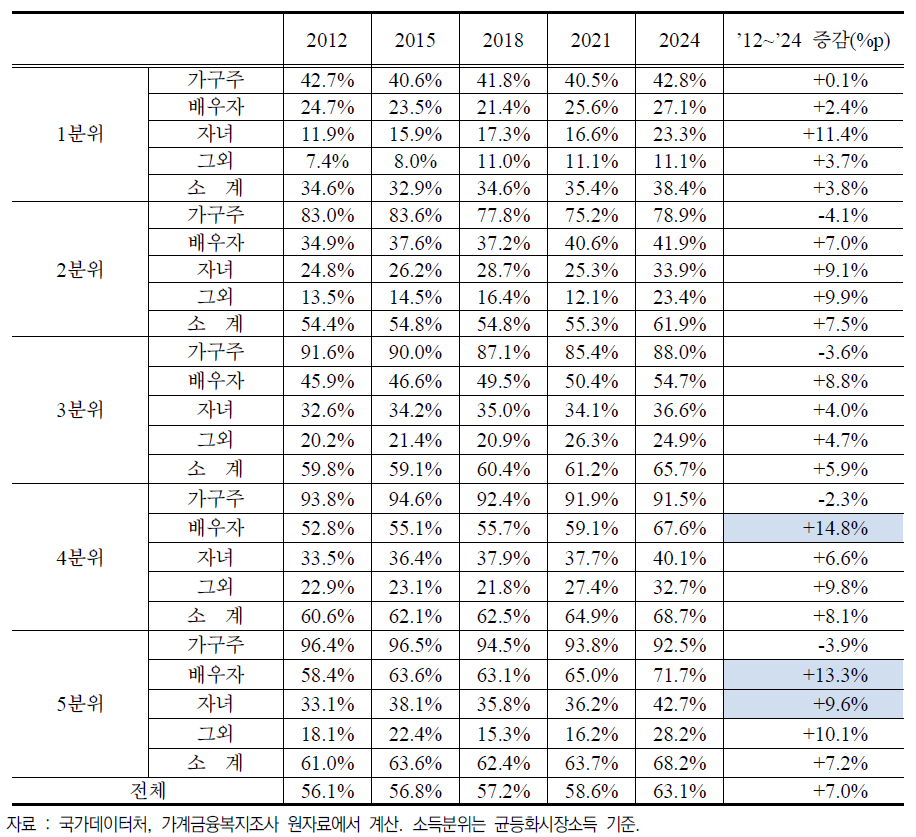
3.3.2 개인과 가구의 소득
이하에서는 가계금융복지조사(2011~2023)의 원자료 분석을 통해 한국 개인과 가구의 소득 및 자산 분배 현황을 살펴보기로 한다.
가계금융복지조사 RAS 데이터에서 파악할 수 있는 소득은 근로소득, 사업소득, 재산소득(금융소득, 임대소득, 기타재산소득)이며, 사적이전소득과 사적이전지출, 공적이전소득, 공적이전지출 등이 모두 파악된다. 공적이전소득과 공적이전지출은 각각 세부 항목별로 파악 가능하다.37
개인소득에서는 근로소득과 사업소득을 합산한 소득을 ’개인취업소득’으로 정의하고, 여기에 재산소득까지 합산한 것을 ’개인취업재산소득’으로 정의하며, 가구간 이전까지 고려한 경우 ’개인시장소득’으로 정의하기로 한다.38 개인총소득은 개인취업소득에 공적이전소득까지 모두 합친 것을 의미한다.
가구소득에서는 모든 가구원의 근로소득과 사업소득, 재산소득을 합산한 뒤 가구간 이전을 차감한 것을 ’시장소득’으로 정의하고, 여기에 공적이전소득과 공적이전지출을 차감한 것을 ’처분가능소득’으로 정의한다. 모든 소득을 합산한 경우 ’경상소득’으로 정의하고, 경상소득에서 비소비지출(세금과 사회보험료)만 차감한 것을 ’처분가능소득2(소득-비소비지출)’로 별도로 구분한다. 개인소득에서 개인취업소득 또는 취업재산소득과 유사한 것이 가구의 시장소득에 해당하고, 개인총소득은 가구 경상소득과 대응하는 소득으로 볼 수 있다.
2011년 이후 15세이상 가구원들이 개인취업소득의 기술통계를 정리한 결과는 표 16 에 나와 있다. 가계금융복지조사의 조사방법 개편에 따라 2016년 귀속분부터 국세청 소득자료와 정부의 복지급여 행정자료로 보완한 것이기 때문에 2011~2015년 시기와 2016~2023년 시기의 소득통계는 정확성 측면에서 차이가 있다.
2016년 이후 소득자료를 행정자료로 보완하면서 소득파악의 정확도가 개선됨으로써 소득자 수는 크게 늘고 평균소득은 낮아지게 되었다. <표 3-14>을 보면 2015년 2,591만 6천명이던 개인소득자 수가 2016년에 3,112만 5천명으로 520만명 이상 증가했고 평균소득은 3,146만원에서 2,949만원으로 198만원 감소한 것으로 나타난다. 반면 상위10% 소득경계값은 6,300만원에서 6,612만원으로 증가해 하위소득과 상위소득에 대한 정확도가 모두 개선된 상황을 반영하고 있다. 2023년 현재 취업소득 상위10%에 포함되기 위해서는 8,003만원이 넘어야 하고 상위5%는 1억 300만원이 넘어야 한다. 상위1% 경계값은 1억 7,534만원이 넘어야 하며 최상위 0.1%에 들어가려면 4억원이 넘어야 한다.
개인취업소득 평균액은 2011년 2,882만원에서 2015년 3,147만원으로 연평균 2.2% 증가했고 2016년 2,949만원에서 2023년 3,825만원으로 연평균 3.8% 증가했다. 한편 중위소득은 2011년 2,100만원에서 2015년 2,400만원으로 연평균 3.4% 증가했고 2016~2023년 기간에는 연평균 6.0% 증가했다. 전 기간에 걸쳐 평균소득의 증가율보다 중위소득의 증가율이 높고, 평균이나 중위값의 증가율보다 상위소득계층의 경계값이 낮게 증가한 것은 개인 단위 소득분배가 대체로 개선되는 과정이었다고 평가할 수 있다. 개인취업소득의 지니계수는 2011년 0.487에서 2015년 0.455로 지속적으로 낮아졌고, 2016년 0.476에서 2019년까지 0.466으로 낮아지다가 2020년 코로나 사태 발생 시기만 0.469로 상승한 뒤 다시 2023년 0.443으로 낮아졌다(표 3-14). 개인 취업소득 분배는 2020년을 제외하고 지속적으로 개선되어 왔다고 할 수 있다.
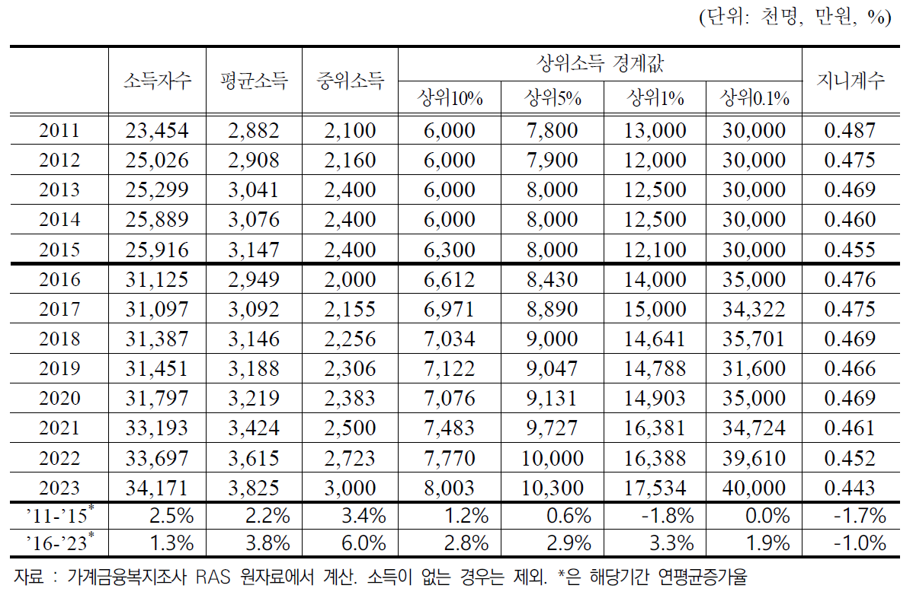
다음은 가구소득을 살펴볼 차례이다. 개인취업소득과 유사한 가구소득은 시장소득이라고 할 수 있다. 2011년부터 2023년까지 가구 시장소득(비균등화)의 주요 기술통계는 표 17 에 정리되어 있다.
표 17 을 보면 가구소득의 경우에는 2016년 이후 중위소득이나 평균소득이 낮아지는 현상은 없었고 대신 상위소득층에 대한 소득정보가 개선되면서 경계값이 크게 높아지게 되었다. 2015년 상위10%의 시장소득 경계값이 2016년에는 1억 429만원으로 크게 상승하였고 상위1% 경계값은 1억 8,300만원에서 2억 1,802만원으로, 그리고 상위0.1% 경계값은 3억 8,720만원에서 5억 7,021만원으로 크게 증가했다. 2023년 기준으로 시장소득 상위10%에 포함되기 위해서는 1억 3,228만원이 넘어야 하고 상위5%는 1억 7,382만원이 넘어야 한다. 상위1% 경계값은 2억 8,643만원이 넘어야 하며 최상위 0.1%에 들어가려면 5억 8,878만원이 넘어야 한다.
가구 시장소득 평균액은 2011년 3,902만원에서 2015년 4,432만원으로 연평균 3.2% 증가했고 2016년 4,976만원에서 2023년 6,381만원으로 연평균 3.6% 증가했다. 중위소득은 2011년 3,018만원에서 2015년 3,600만원으로 연평균 4.5% 증가했고 2016년 3,859만원에서 2023년 4,903만원으로 연평균 3.5% 증가했다. 2011~2015년 기간에는 중위소득 증가율이 평균소득 증가율보다 높았으나, 2016~2023년 기간에는 중위소득의 증가율이 평균소득 증가율보다 낮아지는 모습을 보여 저소득 가구의 소득증가율이 더 낮았던 것으로 확인된다.
2011~2015년 기간 동안에는 중위소득 증가율이 평균소득 증가율보다 높고 상위소득 증가율이 중위소득 증가율보다 낮아서 소득분배가 개선되었을 것으로 추정되지만 2016~2023년 기간은 중위소득 증가율과 평균소득 증가율이 비슷한 수준이며 상위소득 계층의 증가율이 중위소득 증가율보다 더 높은 경우가 많아 소득분배가 적극적으로 개선되었다고 보기는 힘들다. 가구 시장소득 지니계수는 2011년 0.468에서 2013년 0.457로 낮아졌지만 2014년과 2015년에는 각각 0.459, 0461로 상승한 것으로 나타난다. 그리고 2016년 이후에도 2019년까지 0.479에서 0.489로 크게 높아졌다가 2020년 이후 다시 0.486에서 2023년 0.475로 다시 낮아지고 있다.
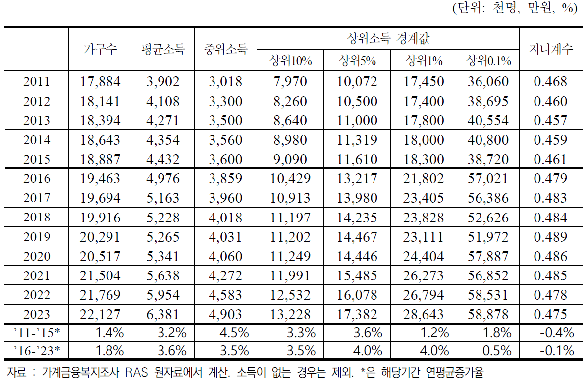
이상에서 살펴본 개인의 취업소득과 가구의 시장소득의 분포와 분배상황을 보면, 개인소득과 가구소득의 분배지표의 변화 방향이 일치하지 않는 시기가 존재한다는 점을 확인할 수 있다.
그림 11 은 앞에서 살펴 본 개인취업소득과 가구시장소득의 지니계수를 그래프로 표시한 것인데, 2013년 이전과 2020년 이후는 개인과 가구의 지니계수가 하락하는 방향으로 동일한 변화를 보였지만, 2013~2015년과 2016~2020년 기간에는 개인취업소득 지니계수가 하락할 때는 가구시장소득 지니계수가 상승하고, 반대로 개인취업소득 지니계수가 상승할 때는 가구시장소득 지니계수가 하락하는 반대 방향의 변화를 보여준다. 2013~2015년 기간 동안 개인취업소득 지니계수는 0.469에서 0.460, 0.455로 하락했지만 가구시장소득 지니계수는 0.457에서 0.460, 0.461로 상승하는 모습을 보였다. 그리고 2016~2019년 기간 동안 개인취업소득 지니계수는 0.476에서 0.475, 0.469, 0.466으로 계속 하락했지만, 가구시장소득 지니계수는 0.479에서 0.483, 0.484, 0.489로 지속적으로 상승하는 결과를 보였다.
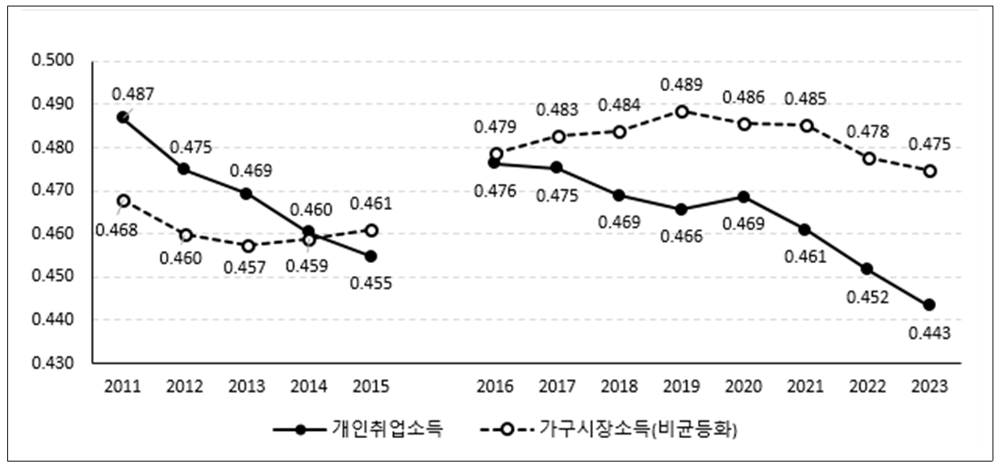
2017~2019년 기간은 최저임금이 크게 인상된 시기로 근로소득 불평등은 크게 개선되었으나 자영업자들의 주된 소득인 사업소득에서 양극화가 확대되어 취업소득 전체의 소득분포는 불평등해졌다. 그림 12 에서 알 수 있듯이 개인의 근로소득 지니계수는 2016년 이후 줄곧 개선되었으나 개인 사업소득 지니계수는 2017~2019년 기간 동안 악화하는 모습을 보였다. 자영업자의 양극화가 진행된 것이다. 이에 따라 2016~2023년 기간 동안 개인의 취업소득 지니계수는 개선되었지만 가구 시장소득 지니계수 개선은 연평균 –0.1% 하락에 그치고 있는 것이다.
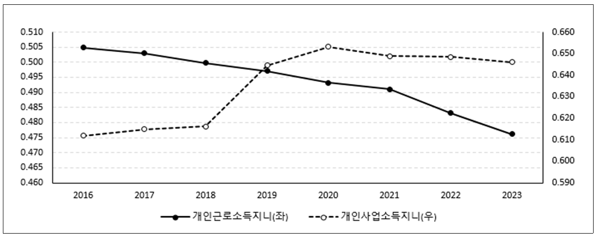
다음으로 근로소득과 사업소득뿐만 아니라 재산소득과 함께 정부가 제공하는 복지급여까지 포함하는 개인의 총소득과 가구의 경상소득의 변화 추이를 살펴볼 것이다. 표 18 을 보면 개인총소득의 평균은 2011년 2,565만원에서 2015년 2,799만원으로 연평균 2.2% 증가했고 2016년 2,572만원에서 2023년 3,600만원으로 연평균 4.9% 증가했다. 중위소득은 2011년 1,800만원에서 2015년 2,040만원으로 연평균 3.2% 증가했고 2016~2023년 기간에는 연평균 7.6% 증가했다.
개인총소득은 이자소득과 공적이전소득을 모두 포함하기 때문에 비취업자까지 포함한 소득자수가 매우 많고 평균액이 낮은 특징이 있다. 그럼에도 2016~2023년 기간 동안 중위소득의 증가율이 크게 높아져 저소득자들의 소득증가가 높았음을 나타내고 있다. 2023년말 기준으로 상위계층 소득경계값을 보면 상위10%에 포함되기 위해서는 7,862만원을 넘어야 하고, 상위1%에 포함되기 위해서는 1억 173만원을 넘어야 한다. 최상위0.1%에 포함되려면 4억 517만원이 넘어야 한다. 개인총소득 지니계수는 2017년에 증가했고, 2018~2020년 기간에 완만한 증가세를 보였다.
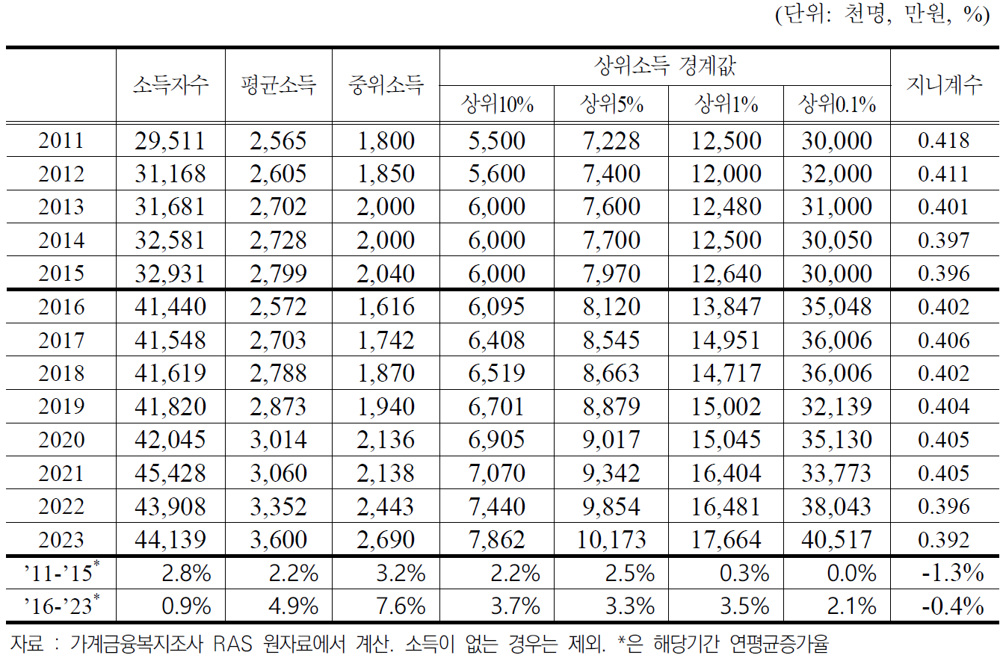
개인총소득에 대응하는 가구 경상소득의 추이를 정리하면 아래의 표 19 과 같다. 가구 경상소득 평균은 2011년 4,233만원에서 2015년 4,882만원으로 연평균 3.6% 증가했고 2016년 5,478원에서 2023년 7,185만원으로 연평균 4.0% 증가했다. 중위소득은 2011년 3,360만원에서 2015년 4,000만원으로 연평균 4.5% 증가했고 2016~2023년 기간에는 4,300만원에서 5ㅏ681만원으로 연평균 4.1% 증가했다. 전 기간 중위소득의 증가율이 평균소득 증가율보다 약간 높아서 저소득 가구의 소득증가율이 높았던 것으로 추정할 수 있다.
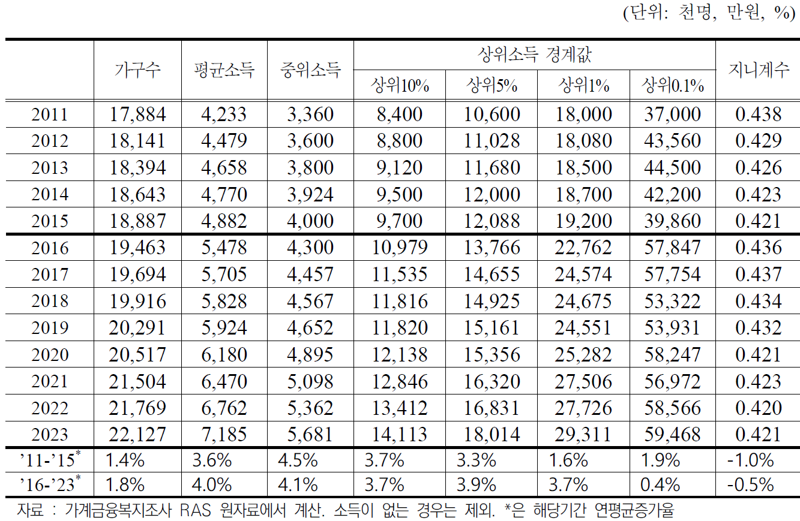
그러나 2016년 이후 상위계층 소득경계값도 연평균 4%에 가깝게 상승하고 있어 경상소득의 분배개선이 완만해지고 있는 것으로 나타난다. 2023년 기준 상위10%에 속하려면 1억 4,113만원 이상 소득이 있어야 하고 상위5%에 들기 위해서는 1억 8,014만원의 소득이 필요하다. 상위1%에는 2억 9,311만원, 최상위0.1%에 포함되려면 5억 9,468만원의 소득이 필요하다.
한편 개인총소득 지니계수와 가구 경상소득 지니계수도 시기별로 상이한 흐름을 보여주고 있다. 그림 13 을 보면 2011~2015년 기간 동안 개인총소득과 가구경상소득의 지니계수는 동일하게 하락하는 흐름을 보여주었다. 개인총소득 지니계수는 2011년 0.418에서 2015년 0.396으로 계속 감소했고 가구경상소득 지니계수도 같은 기간 0.438에서 0.421로 지속적으로 하락했다. 2016~2018년 기간 동안에도 변화 방향은 일치했는데 개인총소득 지니계수는 2016년 0.402에서 2017년 0.406으로 증가했다가 2018년 0.402로 다시 감소했으며, 가구경상소득 지니계수도 2016년 0.436에서 2017년 0.437로 증가한 뒤 2018년 0.434로 감소했다.
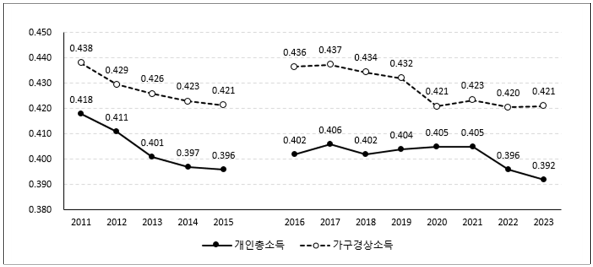
하지만 2019년 이후 개인총소득 지니계수는 2021년까지 0.405까지 증가했다가 2022년 0.396, 2023년 0.392로 크게 하락한 반면, 가구경상소득 지니계수는 코로나 재난지원금이 지급되었던 2020년에만 0.421로 크게 감소한 뒤 2023년까지 다소 증가하거나 이전 수준을 유지하는 흐름을 보여준다. 앞에서 살펴본 개인취업소득과 가구 시장소득의 비교에서 확인한 것처럼, 2018년 이후 개인소득 분배 악화가 가구소득 분배 악화로 이어지지 않고, 개인소득 분배가 개선되어도 가구소득의 분배 개선으로는 이어지지 않는 현상이 발생하고 있는 것이다.
3.3.3 자산과 부채, 그리고 주택자산
이번에는 가구의 자산 분배에 대해 살펴보기로 한다. 가구의 자산항목에는 총자산과 부채, 자산에서 부채를 차감한 순자산, 그리고 가장 중요한 자산이라고 할 수 있는 거주주택가격이 있는데, 2012~2024년 기간 동안 평균과 중위값의 추이를 비교해 보기로 한다.
표 20 을 보면 2025년 3월 현재 한국 전체 가구의 자산은 평균 5억 4,022만원이고 부채는 평균 9,128만원이며, 순자산은 평균 4억 4,894만원, 거주주택 가격은 평균 3억 8,786만원을 나타내고 있다. 하지만 이것은 고자산, 고가주택에 의해 평균이 상향된 영향이 크기 때문에 중위값까지 같이 살펴보면 자산 중위값은 3억 645만원이며, 부채는 중위값이 1,400만원, 순자산은 중위값은 2억 4천만원, 소유주택의 중위값은 2억 7천만원으로 나타난다. 한편 2012~2016년 기간에는 자산과 부채, 순자산, 거주주택가격의 평균액 증가율보다 중위값 증가율이 높았으며, 2017~2024년 기간에는 평균액 증가율이 중위값 증가율보다 높았던 시기로 확인된다.
표 21 에서 순자산의 분위별 분포를 보면 상위분위로 갈수록 자산액이 급속히 상승하고 있다. 2025년 현재 하위25%의 경계값이 7,650만원인데 비해 상위10%의 경계값은 10억 4,600만원에 이른다. 순자산 상위1% 경계값은 33억원이며, 최상위0.1%의 경계값은 86억원으로 추정되고 있다.
기간별로 보면 2012~2016년 기간 동안에는 저자산 분위의 자산 증가율이 더 높았으나 2017~2024년 기간에는 고자산 분위일수록 자산 증가율이 높았던 것으로 나타난다. 2012~2016년 기간 동안 전체 가구의 순자산 평균이 연평균 2.7% 상승하고 하위25% 경계값이 연평균 5.5% 상승하는 동안 상위10% 경계값은 2.1% 상승에 그쳤고 상위5%는 1.0% 상승하는데 그쳤다. 상위1%와 최상위0.1%는 각각 –0.2%, -4.7% 하락해 순자산 불평등이 크게 완화된 것으로 나타난다. 순자산 지니계수는 연평균 –1.4%로 자산분배가 개선됐다. 그러나 2017~2024년 기간에는 순자산 평균액이 5.2% 증가할 때 중위값은 3.6% 증가했고 하위25%는 3.1% 증가에 그쳤다. 반면 상위10%, 상위5%는 각각 5.7% 증가했고 상위1%와 상위0.1%는 각각 6.8%, 7.0% 상승했다. 자산불평등이 급격히 심화된 것이다.
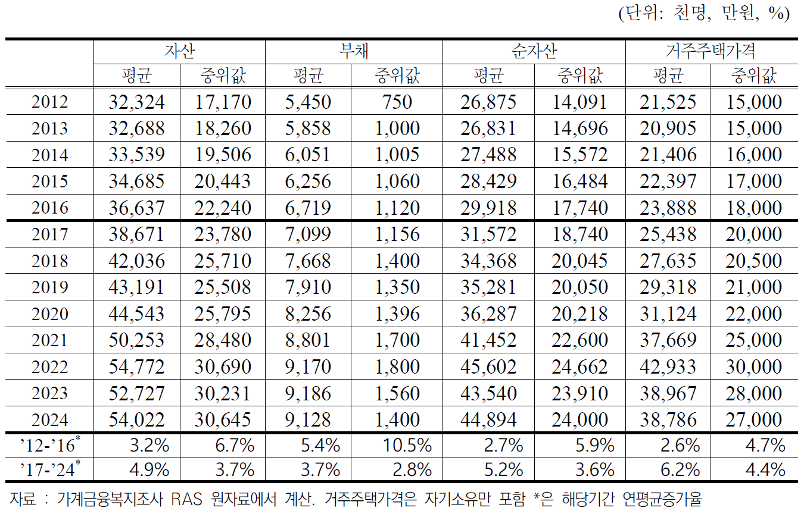
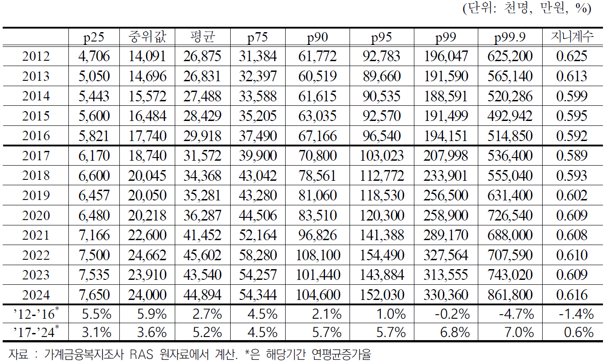
자산불평등은 주택가격의 분위별 변화에서 보다 극명하게 드러난다. 표 22 을 보면 2012~2016년 기간 동안 주택가격 상승률은 2.6%로 낮은 편이었고 상위10% 이상에서는 주택가격 상승률이 1% 수준이거나 마이너스 증가율을 기록했다. 그러나 2017~2024년 기간 동안 주택가격 평균과 중위값 증가율이 각각 6.2%, 4.4%로 높았진 상황에서 하위25%의 가격상승률은 3.5% 수준인데 반해, 상위10, 상위5%, 상위1% 증가율은 각각 6.9%, 7.1%, 7.6%로 높아졌고 최상위0.1% 증가율은 9.6%로 가장 큰 폭으로 증가했다.
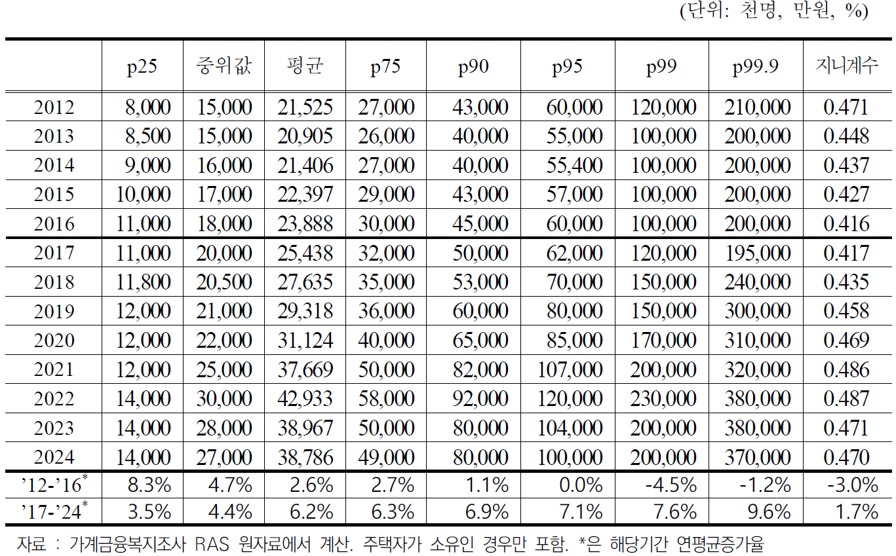
그림 14 에 나타나듯이 자산불평등을 나타내는 순자산과 주택가격 지니계수는 2017년 이후 가파르게 수직상승하였고, 주택가격 지니계수는 2023년 이후에야 하락했고 순자산 지니계수는 2024년에도 추가로 상승(0.609→0.616)을 이어갔다. 2025년 12월 발표된 가계금융복지조사 결과에서 2025년 3월 기준 순자산 분위별 증가율은 하위10% -9.3%, 하위20% -0.3%, 중위값 –0.6%, 상위20% +4.4%, 상위10% +5.2%를 각각 기록해 순자산 불평등이 더욱 악화된 것으로 확인되었다.
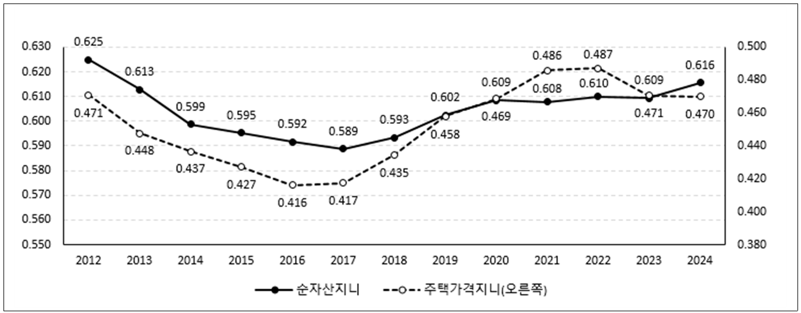
지금까지 살펴본 개인과 가구의 소득과 자산의 일반적 추이를 통해서 2016년 이후 가계금융복지조사의 개인 및 가구의 소득과 자산 통계의 정확성이 크게 향상된 가운데 다음과 같은 사실을 확인할 수 있다.
첫째, 개인 취업소득은 2020년 코로나 팬데믹 시기를 제외하고는 꾸준히 불평등이 완화되는 추세를 보였으나 가구 시장소득의 불평등은 그만큼 개선되지 못했다. 개인 근로소득 불평등은 2012년 이후 지속적으로 개선되었지만 2017~2019년 기간 동안 자영업자의 사업소득 양극화로 인해 가구의 시장소득 불평등이 심화되는 시기가 있었다.
둘째, 개인 총소득의 분배는 2018~2020년 시기에 큰 변화를 보이지 않았으나 가구 경상소득은 같은 기간 불평등이 완화되었다. 2020년 코로나 팬데믹 시기에도 재난지원금 지급 등의 영향으로 분배가 오히려 개선되는 모습을 보였다. 그러나 2022년 이후 개인소득 분배 지표가 개선되고 있지만 가구 경상소득 분배지표는 개선되지 않았다.
셋째, 2017~2024년 기간 동안 자산불평등이 크게 악화되었다. 2012~2016년 시기에 상위계층의 자산 증가율 폭이 낮아짐으로써 자산불평등이 완화되었으나 2017년 이후에는 상위계층일수록 자산 증가율이 훨씬 더 높아짐으로써 자산불평등이 급격하게 심화되었다.
3.3.4 개인과 가구 불평등 추이 : 소득 집중도와 자산 집중도
이하에서는 세계불평등데이터베이스(WID)에서 널리 활용되는 분배지표인 상위층 점유비중(top shares)을 통해 개인과 가구의 소득 및 자산 불평등 현황과 추이를 확인하고자 한다.
앞에서 살펴 본 지니계수는 완전평등에 가까울수록 0, 완전불평등에 가까울수록 1로 수렴하는 요약지표로서 불평등의 정도를 직관적으로 보여주지만, 불평등 지표의 변화가 어떤 계층에서 비롯되는지 식별하는 데에는 한계가 있다. 이에 이하의 분석에서는 상위 10% 점유비중의 중심으로 변화 추이를 확인하되, 계층의 구간을 세분하여 상위1%, 상위2~5%, 상위6-10%로 구분하여 상위10% 가운데 집중도 변화의 주도 계층을 식별하고자 한다. 이와 함께 개인과 가구의 지니계수 추세가 상이하게 나타났던 점을 고려하여, 개념적으로 대응되는 소득지표를 짝지어 개인과 가구 단위의 집중도를 함께 비교할 것이다. 개인취업소득(근로+사업)과 개인취업재산소득(근로+사업+재산)은 가구의 시장소득(균등화, 비균등화)과, 개인총소득은 가구의 처분가능소득(균등화, 비균등화)과 각각 대응시켜 계층별로 집중도의 변화를 확인할 것이다.
3.3.4.1 개인 취업소득과 가구 시장소득 집중도
3.3.4.1.1 개인취업소득
근로소득과 사업소득을 합산한 개인취업소득 기준으로 상위10%의 소득 점유비중은 2023년 32.2%이며, 2011~2015년, 2016~2023년 기간 동안 지속적으로 상위계층 점유비중이 감소해왔다. 가계금융복지조사의 개편 이후에는 2016년 34.5%가 가장 높은 집중도를 나타낸 시기였으나 2023년 32.2%로 –2.3%p 하락했다. 이 시기 동안 상위10% 안에서 소득 점유비중이 가장 크게 하락한 것은 상위1% 계층으로 하락폭은 –0.9%p였고, 상위2~5%가 –0.9%p, 상위6~10%가 –0.8%p 하락했다. 상위계층의 소득 점유비중 하락은 중하위 계층의 점유비중 증가로 이어졌는데, 이 기간 동안 개인취업소득 비중은 중위40%가 37.3%에서 39.5%로 +2.0%p 증가했고 하위40%는 9.7%에서 10.7%로 +1.0%p 증가한 것으로 나타났다. 최저임금 인상 시기 때는 중위40%의 소득비중이 주로 증가했고(2018년에는 하위40%의 비중도 증가), 팬데믹 회복기에는 하위80%의 소득비중이 전체적으로 증가했다.
3.3.4.1.2 개인취업재산소득
근로소득과 사업소득에 재산소득을 합산한 개인 취업재산소득 점유비중은 상위10%가 전체소득의 36.5%를 차지한다. 2016~17년 39.7%가 가장 집중도가 심했던 시기였고 그 후 점차 완화 추세를 보였다. 다만, 2017년에는 부동산·주식 등 재산소득 증가로 상위2~10% 계층의 소득비중이 증가하였고, 코로나 팬데믹이 발생했던 2020년 상위1%, 2021년에 상위5%의 집중도가 높아졌던 시기가 있었다. 상위1%의 점유비중은 2023년에도 다시 증가했다. 하위계층 중에서는 2018년에는 하위40%와 중위40%의 소득비중이 증가했으며, 2019년에는 중위40%와 상위11~20%의 소득비중이 증가했고 2020년 이후에는 중위40%와 하위40%의 소득비중이 증가했다. 전체적으로는 중위40%의 소득비중이 37.5%에서 39.5%로 가장 크게 증가한 것으로 나타난다. 이들은 최저임금 인상의 수혜그룹이면서 코로나 팬데믹 회복과정에서도 소득비중이 증가했다.
3.3.4.1.3 가구시장소득
시장소득(비균등화)의 경우 2023년 상위10% 점유비중이 31.6%로, 2019~2021년 기간 동안 32.2%로 가장 큰 집중도를 보이다가 2022년 이후 감소하기 시작하여 2023년이 가장 낮아진 시점이다. 상위10% 점유비중 증가는 2017년과 2019년에 발생했는데, 2017년은 상위1%의 점유비중은 감소했지만 상위2~10%의 점유비중이 증가했기 때문이며, 2019년은 상위1~5%의 점유비중이 증가한데 따른 것이다.
한편 가구원수 차이까지 고려한 균등화시장소득은 상위10% 소득집중도가 2023년 27.4%로 가장 낮아진 상태이며, 가장 소득집중도가 높았던 때는 2017년(28.5%)이며 소득집중도가 증가한 시기로는 2017년과 함께 코로나 팬데믹이 발생한 2020년(28.0%→28.4%)이 있었다. 2017년의 상위10% 소득집중도 증가는 상위2~10%에 의해 주도되었으며, 2020년의 소득비중 증가는 상위1~5%에 의해서 이루어졌다.
특징적인 점은 최저임금이 크게 인상된 2018년 시기에 개인취업소득에서는 하위40%의 소득비중이 증가한 것으로 나타나지만, 가구 수준에서는 하위40%의 소득비중이 증가하지 않았던 것으로 확인된다. 균등화시장소득 기준으로 하위40%의 소득점유비중은 2017~2019년 기간 동안 15.0%에서 14.9%로 감소하였다. 대신 중위40% 가구의 소득비중은 같은 기간 동안 40.2%에서 40.7%로 증가했다. 개인취업소득 하위40%에 속하는 개인들이 가구수준에서는 하위40%보다는 중위40% 이상에 속하는 비중이 많기 때문으로 보인다.
이와 함께 앞에서 살펴본 바에 따르면 2016년 이전 2011~2015년 기간 동안 개인취업소득의 지니계수가 지속적으로 하락하고 있었는데도 가구 시장소득의 지니계수는 2013년에 비해 2014~2015년 기간에 계속 악화된 것으로 나타났다(그림 3-8). 어떠한 요인이 이같은 개인소득과 가구소득의 분배지표의 변화 방향이 서로 다르게 나타나도록 했는지에 대해 계층별 소득비중 변화표는 일정한 시사점을 준다.
표 23 을 보면 이 시기의 개인취업소득 상위10%의 점유비중이 31.9%에서 29.7%로 감소하고 하위40%의 비중은 12.8%에서 14.1%로 증가한 것이 뚜렷하게 나타나지만, 가구 시장소득의 소득계층별 점유비중을 보면 2011~2015년 기간 동안 상위10%의 소득집중도는 지속적으로 감소(31.5%→29.9%)했으나 상위11~20%의 점유비중이 증가(17.5%→17.8%)하고 중위40%의 비중도 증가(40.1%→41.5%)하는 대신 하위40%의 소득비중은 하락(11.0%→10.8%)한 것으로 나타난다. 상위계층의 집중도가 완화되는 것만으로 지니계수가 개선되는 것은 아니라는 점과 함께 개인취업소득 하위40%가 가구시장소득 하위40%와 동일한 집단이 아니라는 점을 함께 고려할 필요가 있는 것이다.
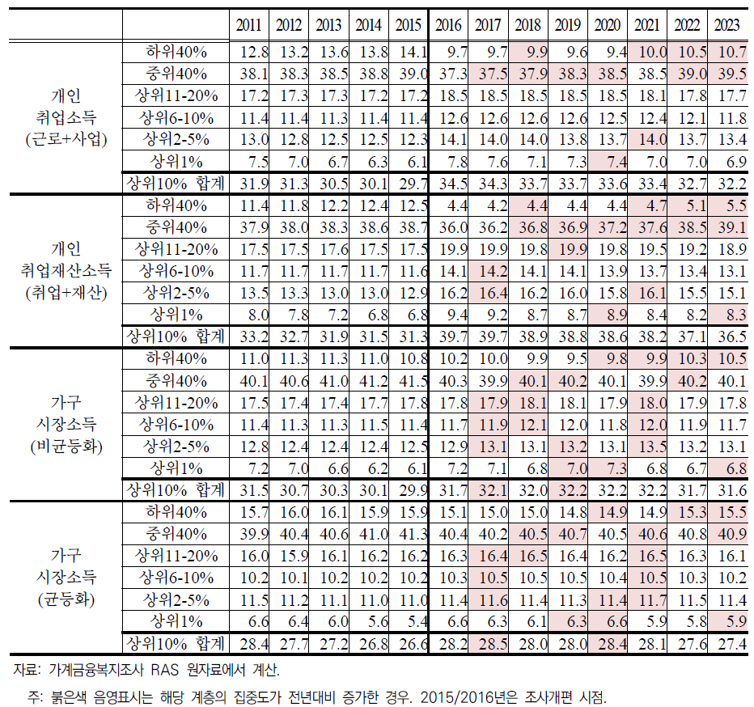
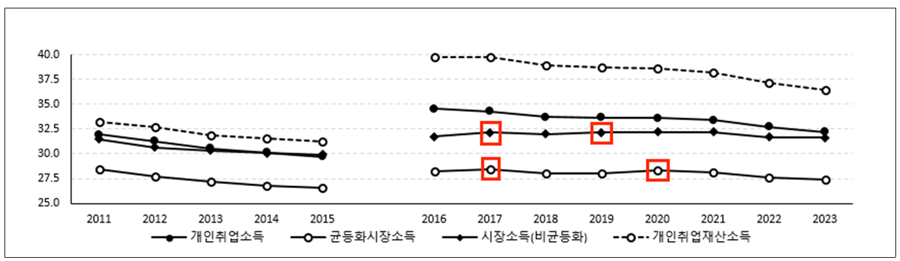
3.3.4.2 개인 총소득과 가구 처분가능소득 집중도
다음으로 근로소득과 사업소득, 재산소득 등 시장소득 외에 공적이전소득을 포함하는 개인 총소득과 가구 경상소득, 가구 처분가능소득의 상위10% 집중도를 살펴보기로 한다.
앞서 개인과 가구의 시장소득 집중도 추이에서 상위10%의 점유비중이 증가한 시기는 2017년과 2019년, 그리고 2020년으로 확인되었는데 2017년은 상위2~10%의 재산소득, 2019년은 상위1~5%의 취업소득, 2020년은 팬데믹으로 인한 양극화 경향이 집중도 심화의 배경이 되는 것으로 보았다. <표 3-22>와 <그림 3-13>을 보면 복지급여를 포함한 총소득 및 처분가능소득 기준으로는 2017년, 2021년, 그리고 2023년이 상위10%의 집중도가 심화된 시기로 나타난다.
(1) 개인 총소득
개인총소득은 2023년 기준 상위10%가 34.3%를 점유하고 있다. 2016년에 38.3%로 소득집중도가 가장 심했으며 그 후 빠르게 집중도가 완화되어 왔으나, 2021년 35.9%에서 36.4%로 집중도가 심화되었다가 2022년 이후 다시 완화된 것으로 나타난다(표 24). 2021년에 상위10%의 점유비중이 증가한 것은 상위2~5%와 상위6~10%의 집중도가 증가한 때문이다. 앞서 개인취업소득에서는 2021년 상위2~5%의 점유비중이 증가했으나 개인총소득에서는 상위6~10%의 점유비중도 추가로 증가한 것으로 나타난다. 여기에는 2021년의 상위2~5%의 취업소득 증가와 함께 2021년의 코로나 관련 선별적 현금지원 등 재분배요인도 작용한 것으로 볼 수 있다.39
2016~2023년 기간 동안 상위10% 계층에서 소득 점유비중이 가장 크게 감소한 계층은 상위2~5%로 2016년 15.7%에서 2023년 14.2%로 –1.5%p 점유비중이 감소했다. 상위1%는 –1.3%p 감소(9.0%→7.7%)로 했고 6~10% 계층도 –1.3%p 감소(13.7%→12.4%)했다. 상위11~20% 계층도 19.4%에서 18.2%로 –1.2%p 감소했다. 반면 소득점유비중이 늘어난 계층은 중위40%에서 2.9%p가 증가(36.2%→39.1%)했으며 하위40%는 2.4%p 증가(6.1%→8.4%)했다. 가장 최근의 변화를 보면 2023년에 상위1%는 7.6%에서 7.7%로 점유비중이 다시 늘어난 것으로 나타난다.
(2) 가구 경상소득
가구 경상소득에서 상위10%가 차지하는 비중은 2016년 30.3%에서 2023년 29.3%로 –0.7%p 감소했다. 소득계층별로는 상위1%의 감소폭이 –0,5%p로 가장 컸고 상위6~10% 계층이 –0.2%p, 상위2~5% 계층이 –01%p 감소했다. 상위11~20% 계층의 점유비중도 17.1%에서 16.9%로 감소했다. 반면 소득점유비중이 늘어난 계층은 하위40%로 2016년 13.0%에서 2023년 14.0%로 1.0%p 증가했으며, 중위40% 계층은 변화가 없었다. 일시적으로 상위10%의 점유비중이 늘어난 시기가 있었는데, 2017년 상위2~20%의 소득비중이 늘어났고, 2021년에도 상위2~20%의 점유비중이 증가했으며, 2023년에는 상위1%의 비중이 늘어났다.
(3) 가구 처분가능소득
비균등화 처분가능소득 상위10%의 집중도는 2016년 28.8%에서 2017년 28.9%로 증가했는데 상위10% 가운데 상위2~10% 가구의 소득비중이 증가한데 따른 것이다. 2023년에는 27.5%에서 27.6%로 증가했는데 이는 상위1%의 소득비중이 5.3%에서 5.4%로 다시 증가한데 따른 것이다. 한편 균등화 처분가능소득은 상위10% 점유비중이 2016년 25.8%에서 2023년 24.0%로 매년 조금씩 감소해왔다. 그리고 하위40%의 소득비중은 2021년을 제외하고는 매년 지속적으로 증가해온 것으로 나타난다. 2016년 17.8%를 차지했던 하위40%의 비중은 2023년 19.7% 수준에 이르고 있다. 전체적으로 2023년 들어 상위1%의 점유비중이 증가하면서 상위10% 소득집중도가 높아질 가능성이 있는 상황이다.
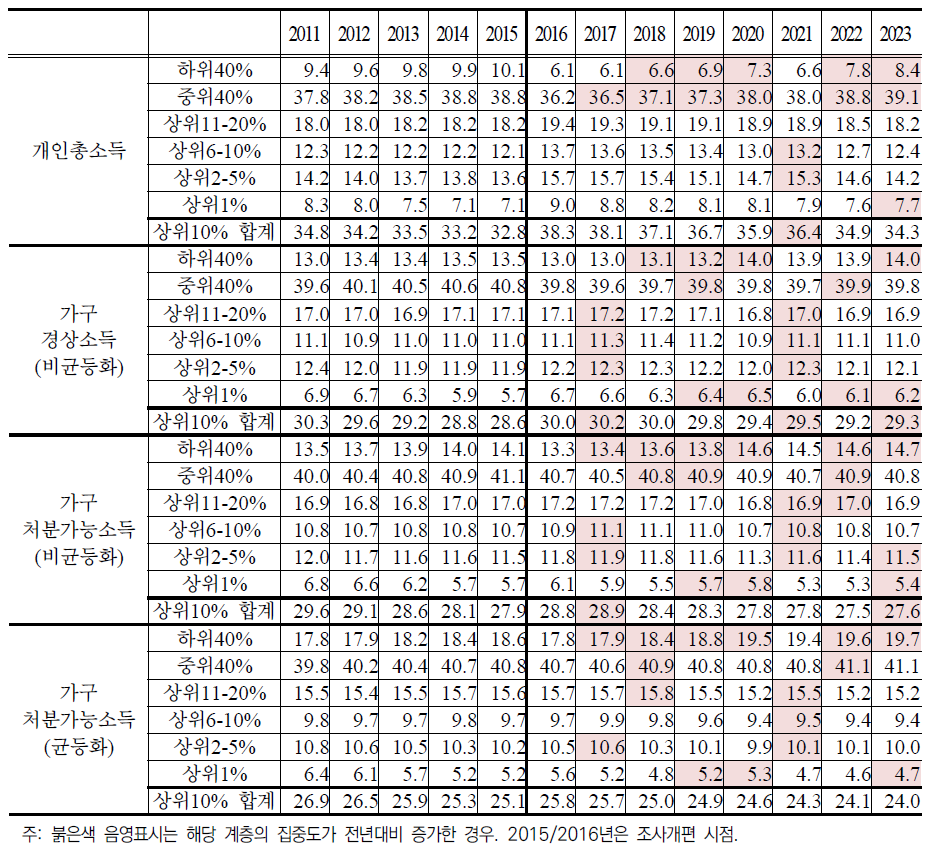
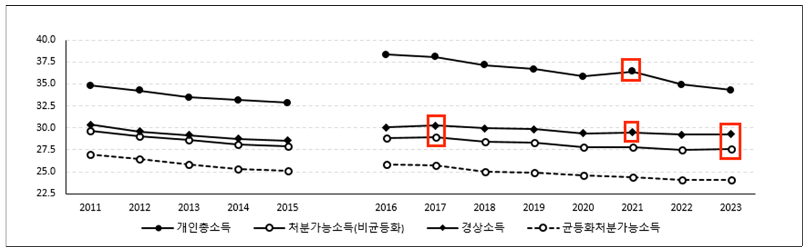
3.3.4.3 자산 집중도
(1) 순자산
자산에서 부채를 차감한 순자산 집중도는 2024년 현재 상위10%가 전체 44.4%를 차지하고 있는 것으로 나타났다. 가계금융복지조사의 조사방법 개편40 이후 순자산 집중도가 가장 낮았던 시기는 2017년 41.8% 수준이었으며 가장 집중도가 높은 시기는 2024년 현재이다.41
순자산 상위10% 내에서 자산집중도 심화를 주도하는 계층은 상위1% 계층이다. 계층별로 보면 상위1%의 순자산 비중은 2017년 10.8%에서 2024년 12.2%로 점유비중이 1.5%p 증가했고, 상위 2~5% 계층은 17.7%에서 18.3%로 0.6%p 비중이 증가했다. 상위6~10% 계층은 13.4%에서 13.9%로 0.6%p 증가했다. 상위11~20% 계층까지도 18.2%에서 18.6%로 0.4%p 점유비중이 늘었다. 순자산 비중 증가폭은 최상위 계층으로 갈수록 더 커지고 있다. 반면 중위40% 계층은 34.1%에서 31.7%로 점유비중이 –2.4%p 감소했고 하위40%는 5.9%에서 5.2%로 –0.7%p 비중이 감소했다. 상위20%의 순자산 점유비중이 증가하고 하위80%의 점유비중이 감소한 결과를 보여준다.
(2) 거주주택가격
거주주택가격의 상위10% 집중도는 2024년 현재 33.2%로 2021년 33.9%를 기록했던 것에 비해서는 다소 낮아진 상태에 있지만, 2024년 이후 다시 증가 추세를 보이고 있다.
상위계층의 주택자산 점유비중 증가를 주도하고 있는 계층은 상위2~5% 계층과 상위1% 계층이다. 2017년 이후 상위10%의 점유비중은 29.9%에서 33.2%로 3.3%p 증가한 상태인데, 상위2~5%의 점유비중은 1.4%p(12.9%→14.3%) 증가한 것으로 나타난다. 상위2~5% 계층은 2017년 이후 2024년까지 주택자산 점유비중 증가를 계속 유지하고 있다. 그리고 상위1% 계층은 2017년 6.3%에서 2020년 7.6%까지 1.3%p 점유비중을 높이면서 초기에 주택자산 소유 집중을 이끌었다.
상위6~10% 계층과 상위11~20% 계층도 주택자산 점유비중이 증가한 것으로 나타난다. 상위6~10%는 10.7%에서 11.9%로 1.2%p 점유비중이 높아졌고, 상위11~20% 역시 16.5%에서 17.9%로 1.4%p 비중이 늘었다. 중위40%와 하위40%만 점유비중이 감소했는데 중위40%는 38.9%에서 36.8%로 –2.1%p 비중이 줄었고, 하위40%는 14.6%에서 12.1%로 –2.6%p 비중이 감소했다. 하위계층으로 갈수록 주택자산 점유비중 감소폭이 큰 것으로 나타나고 있다.
이것은 2017년 이후 지속된 주택가격 상승이 자산보유 계층간 격차를 확대하는 주요 메커니즘으로 작용했음을 시사한다. 주택보유 중하위층의 상대적 지위는 하락한 반면, 상위계층의 자산우위는 더욱 공고해졌다.
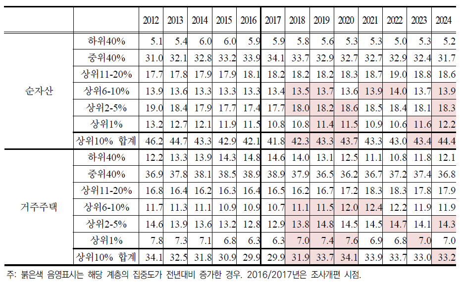
이상과 같이 개인과 가구의 소득 및 자산의 상위계층 점유비중의 변화를 살펴본 결과, 다음과 같은 결론을 얻을 수 있다.
첫째, 개인소득과 가구소득 간 상위계층 소득집중도로 본 불평등의 추이와 변화 방향에서 상당한 차이가 존재한다. 개인 기준(취업소득, 취업재산소득, 총소득)의 상위층 점유비중 감소는 뚜렷하고 지속적인 반면, 가구 기준 시장소득의 불평등 완화는 매우 완만하고 그 방향성이 불확실하다. 이는 고령화와 1인가구 증가, 가구 단위로 합산되는 소득원의 다양성과 가구 구성 효과가 개인 단위의 소득분배 개선 효과를 일부 약화시키거나 변형시킬 수 있음을 의미한다.
둘째, 가구 소득 내에서도 비균등화소득보다는 균등화소득, 시장소득보다는 처분가능소득의 불평등 완화가 상대적으로 일관된 추이를 보이지만, 그 기반은 여전히 불안정하다. 공적이전과 조세를 통해 소득재분배가 작동하며 처분가능소득의 상위층 집중도는 완만히 감소하였다. 그러나 상위 1% 및 상위 2~5% 계층의 점유비중이 특정 시점에 증가할 경우, 상위계층 소득집중도의 완화 추세를 위협할 정도의 잠재적 변수로 작용한다. 이들 ’핵심 상위층’의 공고한 지위는 재분배 정책의 한계를 동시에 보여준다.
셋째, 소득 불평등의 불완전한 완화와 대비되어 자산 불평등은 매우 가파르고 집중적으로 심화되었다. 순자산 상위 10%의 점유비중은 2017년 이후 지속적으로 급증하였으며, 이는 특히 상위 1~5% 계층에서 주도되었다. 부동산을 비롯한 자산가격 상승이 자산불평등을 전반적으로 확대하고 향후 자본소득의 격차를 심화시켜 향후에도 소득 재분배 효과를 상쇄하고 불평등 구조를 더욱 고착화할 우려가 크다.
넷째, 상위 10% 내부에서도 ’핵심 상위층(상위1%와 상위2~5%)’과 ’경계 상위층(상위 6~10%)’의 동학이 뚜렷이 분화된다. 핵심 상위층은 소득과 자산 모두에서 안정적이고 공고한 지위를 유지하며 불평등 구조의 핵심을 이루고 있으며, 코로나 팬데믹 등 위기 상황에서도 소득 점유비중을 높여 나갔다. 핵심 상위층의 재산소득과 소득세제의 변동이 불평등에 미치는 영향이 크다는 점을 확인할 수 있다. 2023년에 확인된 상위1% 계층의 점유비중 증가 현상은 결국 최근 공개된 2024년 소득불평등 지표의 악화로 현실화되었다.
종합하면, 2016년 이후 한국은 소득 측면에서는 불완전하고 불안정한 불평등 완화 추세를, 자산 측면에서는 가파른 심화 추세를 동시에 경험하며 이중적 불평등 구조가 심화되고 있다. 개인과 가구의 불평등 변화 방향이 상이하고 가구단위 불평등 완화가 더딘 점, 처분가능소득의 취약한 개선 기반, 그리고 자산 불평등의 급격한 심화는 임금이나 개인소득 차원의 불평등 완화 정책이 갖는 한계를 재확인시켜 주면서 불평등 완화를 위한 정책에 있어서 핵심 상위층을 대상으로 하는 과감하고 일관된 조세 및 재분배 정책이 필요하다는 점을 일깨워 준다.
이와 함께 불평등의 상황을 보다 정확하게 진단하기 위해서는 핵심 상위층에 해당하는 상위5%를 비롯한 개인과 가구의 계층별 특성과 함께 가구 구성의 변화 양상이 소득분배에 미치는 영향을 보다 면밀하게 파악할 필요가 있다는 점을 확인하였다.
3.3.5 개인과 가구의 특성 변화
앞 장에서 살펴보았듯이 불평등의 상태와 변화 방향을 제대로 파악하기 위해 핵심 상위층의 인적 특성과 가구의 구성 변화를 연도별로 확인하기로 한다. 비취업자까지 포함하기 위해 소득은 취업 및 재산소득과 공적이전소득까지 포함하는 개인총소득을 사용하였다. 비교연도는 2011~2023년 기간 중 6개 연도(2011, 2013, 2015, 2016, 2020, 2023)만 표시하였다.
3.3.5.1 개인총소득 상위5% 계층의 특성
개인총소득 상위5%에 속하는 핵심상위층의 인적 특성이 <표 3-24>와 <표 3-25>에 정리되어 있다. 상위5% 핵심 상위층에 속하려면 2023년 기준으로 개인소득이 1억 101만원 이상이어야 하며 평균소득은 1억 5,779만원 수준이다. 종사자위별 구성을 보면 상용 71.6%, 고용주 11.8%, 자영자 10.0%, 비취업 5.0%로 구성되어 있는데, 2011년 이후 30% 이상을 차지하던 고용주와 자영업자의 비중이 지속적으로 줄어들면서 상용직 비중이 70% 이상으로 늘어난 상황이다. 최근 들어 자영자가 다시 10% 수준으로 늘었고 고령화에 따라 비취업자 비중도 증가하고 있다.
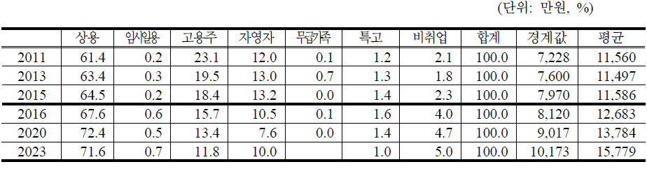
성별 연령별 분포에서는 50대 남성이 29.8%로 가장 큰 비중을 차지하고 40대 남성이 27,8%로 그 뒤를 따르고 있다. 최근 들어 30~50대 여성의 비율이 조금씩 증가하고 있으며, 60대이상 남성 비율은 15%를 넘은 규모로 빠르게 증가하고 있다(표 27).
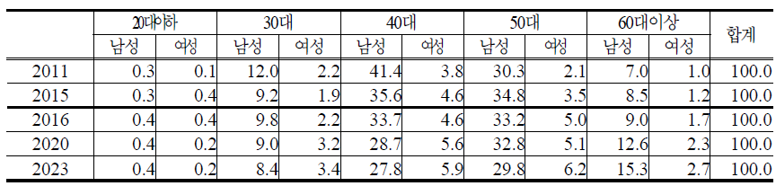
개인총소득 상위5%의 총소득은 평균 997만원으로 평균 1천만원에 미달하는 수준이다. 구성은 근로소득이 67%를 차지하고 사업소득은 20%를 차지하는데, 최근 사업소득 비중이 줄어드는 대신 재산소득 비중이 증가하고 있는 것으로 나타난다. 순자산은 총소득(1.5억)의 9.2배(15.8억)로 늘어났고 순금융자산도 1.6배 규모(2.5억)로 늘어나 자산의 규모가 빠르게 커지고 있다.
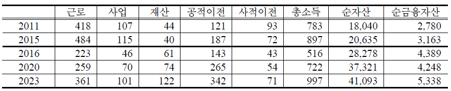
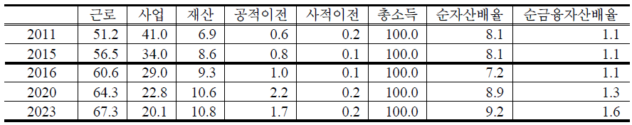
금융자산의 구성에서는 저축과 보험의 비중이 각각 41%와 24%를 차지했으나, 31%와 17%로 줄어들고, 대신 주식채권의 비중이 2024년에 처음으로 30%를 넘어 31% 비중을 차지하면서 저축과 동일한 비중을 갖게 되었다.
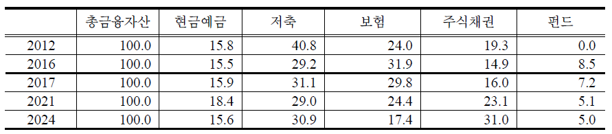
3.3.5.2 개인총소득 하위40% 계층의 특성
이번에는 하위계층의 특성을 살펴보기로 한다. 개인총소득 하위40%의 종사자지위별 구성을 보면, 비취업자가 59.0%로 가장 많고 그 다음으로 임시일용직이 18.3%를 차지하며 상용직 11.4%, 자영자 5.7%의 비중을 차지한다. 최근 들어 고용률이 증가하면서 비취업자 비중이 줄어들고 임시일용, 상용, 자영자 등 취업자의 비중이 늘어나고 있는 상황이다.
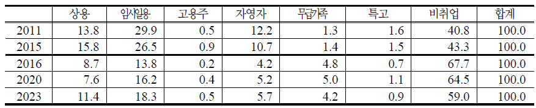
성별 연령별 구성에 있어서는 60대이상 여성이 37.5%로 가장 많고 60대이상 남성(17.1%), 50대 여성(9.7%), 40대 여성(6.8%)의 순서로 많은 비중을 차지한다. 20대 청년들의 비중은 10%에서 7%로 줄어들었으며, 30~40대 여성의 비중도 줄어들고 있다. 대신 60대이상 비중은 점점 더 늘어나고 있는 추세이다(표 32).
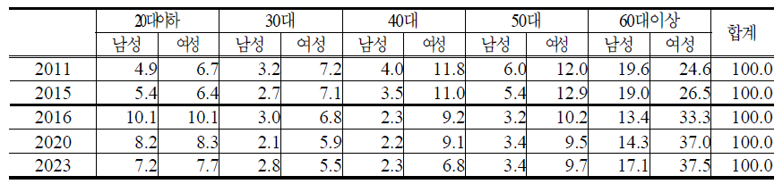
개인총소득 하위40%의 평균소득액은 2023년 기준 997만원 수준이다. 이 가운데 근로소득은 43%에서 36% 수준으로 비중이 줄어들었고, 대신 공적이전 소득이 28%에서 34%까지 비중이 늘어나고 있다. 한편 2021년 이후 하위40% 계층의 순자산과 순금융자산이 줄어들면서 소득대비 순자산 배율은 오히려 하락하고 있다.
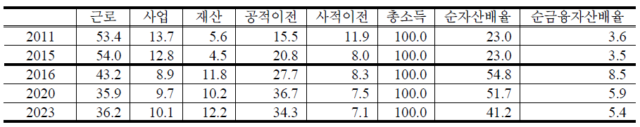
하위40% 계층이 지급받는 평균 공적이전소득 평균액은 연간 342만원 수준이며, 이 중 가장 액수를 차지하는 것은 기초연금으로 연간 127만원에 이른다. 공적연금은 99만원으로 그보다 낮은 수준이며, 기초생활보장급여 수급액은 평균 50만원에 이른다. 2016년 이후 실업급여와 근로장려금이 지급액이 증가된 복지급여에 속한다.
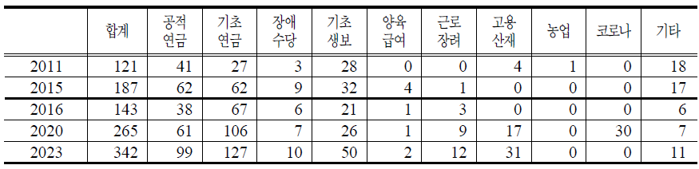
3.3.5.3 가구의 특성 변화 : 개인과 가구 동질화
2011년 이후 개인과 가구의 소득 및 자산 분배상황의 변화 양상과 함께 개인과 가구의 소득 형성과 관련한 인적 특성의 변화 가운데 유의미한 현상들을 통계로 확인해보고자 한다.
소득불평등 분석에서 주목할 점은 개인 단위와 가구 단위의 소득 분위가 항상 일치하지 않는다는 것이다. 일반적으로는 고소득 가구에 고소득 개인이 속하고, 저소득 가구에는 저소득 개인이 주로 속한다. 하지만 저소득 개인이 고소득 가구에 속하거나 중간소득 개인이 저소득 가구에 속하는 경우도 존재한다. ’가구 내 소득동질화’가 강화될 경우, 즉 고소득 개인들이 고소득 가구를 구성하고 저소득자들끼리 저소득 가구를 구성하는 경향이 강화될 경우 소득불평등이 위험성이 높아진다.
표 35 을 보면 2016년에 가구 시장소득 5분위(상위20%)에 개인 취업소득 하위20%에 속하는 가구원이 17.1% 존재하고 있었다. 그런데 2019년에는 이 비율이 15.1%로 줄어들고 2023년에는 14.0%로 더욱 줄어든 것으로 나타난다. 가구소득 5분위에 속하는 개인소득 2분위 가구원의 비율도 2016년 13.1%에서 2019년 11.4%, 2023년 9.2%로 크게 줄었다. 반면 가구소득 상위20%에 속하는 개인소득 상위20%의 가구원 비율은 2016년 47.7%에서 2019년 48.8%로 늘었고, 2023년에는 51.9%로 절반을 넘게 되었다. 가구의 소득분위와 가구원의 개인소득분위가 일치하는 비율이 높아지고 있는 것이다.
마찬가지로 저소득 분위에 속하는 가구에 개인소득이 낮은 가구원의 비율도 높아지고 있다. 2016년에 가구소득 하위20%에 개인소득 하위20%에 속하는 가구원의 비율은 27.8%였는데, 2019년 이 비율은 28.6%로 높아졌고, 2023년에는 32.2%로 증가했다. 개인소득이 낮은 가구원들끼리 저소득 가구에 몰리고 있는 것이다.
이러한 가구-개인 소득분위 동질화 현상은 가구 내에서 가구원들간의 소득이나 지출을 공유함으로써 가구원들의 경제활동 선택 폭을 높이는 여지가 줄어들게 되고, 저소득 가구가 가구원의 소득능력을 바탕으로 소득을 개선할 수 있는 가능성이 낮아지게 되는 것을 의미한다. 2016년에 가구소득 1분위에 속했던 개인소득 4분위 가구원이 4.6%였던 것이 2023년에는 1.3%로 줄었고 개인소득 3분위 가구원의 비율도 32.6%에서 24.4%로 줄어든 것으로 나타난다. 이러한 상황에서는 가구1분위가 다른 상위 소득분위로 상승 이동할 가능성이 낮아진다.
표 37 를 보면, 2012~2015년 기간에는 가구소득 1~2분위에 속한 개인4~5분위 비율이 늘어나고 가구4~5분위에 속한 개인1~2분위 비율도 늘어나는 것이 확인된다. 그러나 2019~2023년 기간에는 이와 반대로 가구1분위에 속하는 개인1~2분위, 가구5부위에 속하는 개인4~5분위의 비율이 일제히 증가한다.
고소득 가구에 속하는 고소득 가구원의 비율이 높아지고 저소득 가구에 저소득 가구원의 비율이 높아지는 것을 ‘가구-개인 동조’ 현상으로 유형화하고, 반대로 고소득 가구에 저소득 가구원 비율이 높아지고 저소득 가구에 속하는 저소득 가구원비율이 높아지는 것을 ‘가구-개인 탈동조’ 현상으로 유형화할 수 있다.
표 39 에서는 가구소득 4-5분위에 속하는 개인소득 4-5분위의 비율(고소득 가구-개인 동조), 가구소득 1-2분위에 속하는 개인소득 1-2분위의 비율(저소득 가구-개인 동조)을 구하고, 반대로 가구소득 4-5분위에 속하는 개인소득 1-2분위의 비율(고소득 가구-개인 탈동조), 가구소득 1-2분위에 속하는 개인소득 4-5분위 비율(저소득 가구-개인 탈동조)으로 4개 그룹으로 유형화하여 연도별 비율 변화를 비교하였다.
2016년 이후 특히 2020~2021년 이후 고소득 가구와 저소득 가구 양측에서 동조화 현상이 강해지고 탈동조화가 약해지는 모습을 보여주고 있다. 고소득가구-고소득개인 비율이 2020년 70.6%에서 2023년 76.3%로 높아졌고 저소득가구-저소득개인 비율도 65.1%에서 68.1%로 높아졌다. 반면 탈동조로 유형화한 고소득가구-저소득개인 비율은 5.6%에서 3.7%로 낮아졌고 저소득가구-고소득개인 비율은 24.3%에서 21.3%로 더욱 크게 낮아졌다.
3.3.5.4 부부간 소득분위의 동질화 : 동류혼 비율의 증가
이와 함께 가구의 소득이 높은 가구일수록 부부간 소득분위가 동일한 동질혼(同質婚, Homogamy) 비율이 높아지고 있는 것도 사실로 확인된다. 개인소득을 5분위로 구분한 다음 부부간의 소득분위 차가 0일 경우를 ‘동일분위’, 가구주의 소득분위에서 배우자의 소득분위를 뺀 값이 2이하일 때 ‘가구주 약우위’, 3이상일 때 ‘가구주 강우위’, -2이상일 때 ‘가구주 약열위’, -3이하일 때 ’가구주 강열위’로 구분하여 부부가구가 아닌 경우를 제외하고 가구의 소득분위별로 분포를 확인하였다.
표 40 를 보면 전체 부부 가구 가운데 2023년 기준 가장 많은 비중을 차지한 것은 ‘가구주 약우위’(39.1%)였으며, ‘가구주 강우위’(26.9%)에 이어 ‘부부동일’인 경우가 19.7%로 세 번째로 많은 가구유형에 속했다. 그밖에 ‘가구주 약열위’는 8,7%, ‘맞벌이가 아닌 경우(부부 한쪽의 소득분위가 없는 경우)’가 4.5%이었다. 2016년 이후 가장 크게 증가한 유형은 16.2%에서 19.7%로 증가한 ‘부부동일’ 유형이었다.
그런데 고소득 가구일수록 부부의 소득분위가 동일한 비율이 높고 해당 유형의 증가 추세도 빠르게 진행되고 있는 것을 확인할 수 있다.
그림 17 을 보면 경상소득 상위10% 가구의 경우 ‘부부동일’ 가구 비중이 39.9%로 가장 높았고 증가 속도도 가장 빠른 것으로 나타났다. 상위10% 가구의 경우 2011년에는 ‘가구주 약우위’가 21.2%로 가장 높은 비중을 차지했고 ‘부부동일’이 20.9%를 차지했으나 2012년부터 부부동일 가구가 1위의 위치를 차지했고 그 이후에도 계속 빠르게 증가해서 2023년 현재 시점에서는 ‘부부동일’ 가구가 ‘가구주 약우위’에 비해 10%p 이상 더 많은 비중을 차지하고 있다. 반면 중위소득 가구(가구소득 10분위 중 5분위)의 경우 부부가 소득분위가 동일한 경우는 8.5%에 그쳤고 ‘부부동일’ 유형의 증가폭도 미미했다.
3.3.5.5 가구원 소득원천의 다양화
최근 10년간 가구원의 개인소득의 다양화가 빠르게 진행되고 있다. 고용형태의 다양화와 플랫폼, 프리랜서 등 다양한 취업경로의 확산으로 인해 N잡러 형태의 다중취업이 증가하고 있다. 이러한 다양한 취업경로와 소득원천의 확대는 저소득 일자리에 종사하는 사람들에게 주변부 노동시장에서의 불안정을 초래하는 요인으로 작용할 수도 있고 고소득 가구의 추가적인 소득원천으로서 기능함으로써 향후 소득불평등이 확대될 가능성도 있다.
가계금융복지조사의 가구원 개인의 소득을 인별로 합산하면 하나의 소득만 있는 것이 아니라 다양한 소득이 존재하고 있음을 확인할 수 있다. 그리고 소득종류별로 각 개인의 총소득에서 차지하는 비율을 계산해서 ’소득유형’을 구분하였다.
우선 근로소득이 90% 이상을 차지하는 경우 ’근로소득 중심형’으로 구분하고 사업소득이 90%이상인 경우 ’사업소득중심형’으로 구분했다. 한편 재산소득이 총소득의 50%이상인 경우 ’재산소득형’으로 구분하고 공적이전소득이 총소득의 50%이상인 경우 ’공적이전소득형’으로 분류했다. 그리고 소득이 다양한 소득원이 있지만 중위소득의 25%에 미달하는 경우에는 별도로 ’중위소득25%미만형’으로 저소득 가구를 구분하였다. 끝으로 어디에도 해당되지 않는 경우, 즉 근로소득이나 사업소득 비중이 90% 미만이고 비취업 소득(재산소득, 공적이전소득)에 의존하지 않는 일정 수준 이상의 소득을 얻는 경우를 ’혼합소득형’으로 분류하였다.
표 41 을 보면, 2023년말 현재 가장 큰 비중을 차지하는 것은 ‘근로소득형’으로 45.6%의 가구원이 이 유형으로 분류되었다. 두 번째로 많은 유형은 ’혼합소득형’으로 19.2%를 차지했는데 이 유형이 가장 빠르게 증가하고 있다. 세번째로 많은 유형은 ’공적이전소득형’으로 고령화로 인해 공적연금이나 기초연금 등이 개인소득의 50%를 넘는 가구원의 비중이 17.6%에 달했다. 네번째 유형은 사업소득형으로 8.5%의 비중을 차지했으며 ’중위소득25%이하’ 유형도 8.4%로 사업소득형과 비숫한 규모를 보였다. 끝으로 재산소득형은 0.7%로 아직 비중이 크지 않았다.
그런데 소득계층을 구분해서 ‘취업소득 상위5%’인 고소득 개인과 ’취업소득 항위40%’에 속하는 저소득층을 따로 분석해보면 이들에게서 ’혼합형’ 소득유형이 가장 빠르게 증가하고 있다(그림 18). 2020년 이후 이러한 혼합형이 고소득층과 하위소득층에서 모두 증가하는 현상은 소득원천의 다양화가 소득분배와 불평등에 미치는 영향이 상이할 수 있다는 것을 시사한다.
3.3.6 소득-자산 결합 분석 결과
이하에서는 마지막으로 소득과 자산의 계층별로 가구와 가구원의 구성 특성을 확인하고, 소득과 자산의 분포를 결합하여 최상위층과 최하위층을 구성하고 있는 가구의 특성을 확인해보고 최근의 변화를 살펴봄으로써, 한국 사회의 계층 분류의 기초 자료로 삼고자 한다.
3.3.6.1 균등화시장소득 상위5%와 하위40%
공적이전소득을 지급받기 이전의 균등화시장소득 기준으로 상위5% 고소득가구와 하위40% 저소득 가구의 특성을 확인하고 비교해 보았다. 상위5% 가구는 2023년말 현재 가구주 평균연령이 53.9세이고 여성가구주 비율은 11.0%이며 경상소득은 2억 7천90만원이며 순자산은 18.5억, 순금융자산은 3.6억원, 거주주택가격은 6.6억으로 추정된다. 이에 비해 하위40% 가구는 평균연령이 62.1세이며 여성가구주 비율이 35.9%이며 경상소득은 3,228만원, 순자산은 2억 5천210만원, 순금융자산은 0.3억, 거주주택가격은 1.3억 수준에 그친다.
상위5% 가구주는 연령별 성별 분포에서 50대와 40대 남성의 비중이 가장 큰데 이 비율은 빠르게 감소하고 있으며 60대 남성이 늘어나고 있으며, 30대 남성과 여성, 50대 여성 가구주가 상위5%에 진입하는 비율도 증가하고 있다. 반면 하위40%는 60대 남성과 여성 등 고령자 가구 비중이 가장 많은데 지금도 이 비중이 증가하면서 최근 20~30대 청년들이 하위가구로의 진입이 늘어나고 있다.
가구주의 종사상지위에서는 상용직 비중이 69.0%로 가장 높은데 최근 이 비율이 다소 줄어들면서 과거 비중이 하락해왔던 고용주 가구의 비중이 2019년 13.9%에서 2023년 17.7%로 크게 늘어난 모습을 보이고 있다. 반면 하위40% 가구에서는 비취업 무직 가구주 비중이 37.4%로 가장 높은 편이지만 2020년 이후 무직 가구주의 비중이 다소 줄고 임시일용직 비중이 늘어나고 있는 상황이다.
상위5%의 가구의 직업별 분포는 전문직이 36.3%로 가장 큰 비중을 차지하며 2016년 이후 전문직의 비중은 꾸준히 증가해왔다. 사무직과 관리직도 상위5%에 포함되는 비중이 높은 편인데 관리직의 비중은 과거에 비해서는 감소한 편이다. 이에 비해 하위40%의 직업별 비중은 무직이 37.4%로 가장 많고 단순노무직(14.4%)과 조립직(7.3%), 농림어업직(6.7%)가 뒤를 잇는다. 최근에는 고용비중이 늘고 있는 서비스직의 비율이 늘어나고 있다.
상위5%의 가구의 산업별 분포는 제조업이 26.8%로 가장 큰 비중을 차지하며, 도소매업과, 금융보험, 전문과학기술업 등이 뒤를 잇는다. 하위40% 가구주의 종사산업은 비취업이 37.4%로 가장 많고 그 다음 제조업, 농림어업, 도소매업, 건설업 등이 뒤를 잇는다. 다만, 이러한 산업분포는 산업별 종사자의 규모를 반영하기 때문에 전체 산업 종사자 비중을 차분하여 각 계층에 상대적으로 더 많이 분포하는 산업을 확인해볼 수 있다.
전체 산업분포를 차분한 결과 상위5%에 상대적으로 더 많이 분포하는 산업은 제조업(+9.9%p), 금융보험(+6.0%p), 전문과학기술서비스업(+4.1%p), 도소매업(+2.6%p), 출판영상정보통신업(+1.9p), 교육서비스업(+1.4%p) 등이었다. 이에 반해 하위40% 가구가 더 많이 종사하는 산업은 비취업자가 전체 가구보다 14.7%p 더 많았고, 농림어업(+2.7), 협회단체수리서비스업(+1.2), 숙박음식업(+0.9), 보건사회복지업(+0.8), 사업시설관리서비스업(+0.3) 등이 뒤를 이었다.
다음으로 가구주의 산업과 직업을 교차하여 상위5% 및 하위40%에 가장 많은 분포하는 순서대로 각각 10개 집단을 추정한 결과, <표 3-28>에 제시된 산업별 직업군이 한국 가구의 시장소득 상위층과 하위층을 형성하는 것으로 나타났다.
소득 상위5%에 포함되는 가구에서 가구주가 가장 많이 분포하는 산업의 직업은 제조업 사무직인 것으로 나타났다. 이들은 7.8만 가구로 상위5% 가구의 8.7%를 차지했고, 두 번째로 많은 직업은 제조업 전문직으로 6.9만 가구로 7.7%를 차지했다. 그 뒤를 이어 전문과학기술서비스업의 전문직이 6.8만 가구(7.6%), 도소매업의 고용주를 포함한 판매직이 5.0만(5.6%), 금융보험 사무직이 4.6만(5.0), 의사를 포함한 보건복지업의 전문직이 4.4만(4.8%) 가구를 차지했고, 가구주가 무직인 경우에도 시장소득 상위5%에 포함되는 가구가 3.9만(4.8%)를 차지했다. 제조업의 조립직 노동자도 상위5% 속한 경우가 4.2만 가구로 4.7%를 차지했다. 이상의 상위5% 가구의 10개 산업 및 직업이 전체 상위5% 가구의 60% 가까이를 차지하는 것으로 나타났다.
다음으로 하위40%에 속하는 가구의 경우 무직가구가 395만 가구로 전체 하위40% 가구의 37.4%를 차지했다. 다음으로 농림어업 종사자가 71.2만 가구로 6.7%를 차지했고 도소매업 판매직(48.7만, 4.6%), 숙박음식업 서비스직(36.9만, 3.5%), 그리고 제조업 조립직(29.9만, 2.8%)이 그 뒤를 이었다. 운수업 조립직과 보건사회복지업의 단순노무직, 건설업 기능직 등도 주요한 직종으로 포함됐다. 하위40% 가구의 주요 직업 10개도 전체 하위40% 가구의 67.6%를 차지하는 것으로 나타났다.
3.3.6.2 소득-자산 결합 25개 계층 분석 결과
가계금융복지조사에서는 가구의 소득과 자산, 부채를 확인할 수 있다. 국가데이터처도 가구의 공식분배지표를 작성하기 위한 균등화소득 이외에 경상소득과 순자산을 기준으로 소득 및 자산분위에 관한 모집단 추정결과를 국가통계포털(KOSIS)에 게재하고 있다. 그런데 이 소득 분위와 자산 분위를 결합하게 되면 소득과 자산을 함께 고려하는 소득×자산분위에 관한 계층변수를 만들어낼 수 있다. 즉, 고소득이면서 고자산인 가구와 저소득이면서 저자산인 가구, 그리고 중간 수준의 소득과 중간 정도의 순자산을 가진 가구 등이 구분될 수 있다.
이에 경상소득 5분위와 순자산 5분위를 교차하여 표 43 에 있는 25개의 ’소득-자산 결합 분위’로 전체 가구를 구분하였다. 이 때 소득과 자산 분위를 교차할 경우 해당 분위의 가구 수는 동일한 가구로 나뉘어지지 않는다. 고소득-고자산인 가구와 저소득-저자산인 가구가 가장 큰 비중을 차지하는데 반해 고소득이면서 저자산인 가구와 저소득이면서 고자산인 가구는 전체 가구에서 차지하는 비중이 적다. 하지만 매년 동일한 기준에 따라 해당 계층이 구분되는 것이므로 이를 사용하여 25개 계층분위로 구분해서 가구의 특성을 확인하였다.
소득과 자산을 결합하여 25개 계층으로 구분한 가구의 분포를 확인해보면, <표 3-40>에 나타난대로 ‘경상소득 5분위 – 순자산 5분위’ 가구는 235만 가구로 전체의 10.6%를 차지하며, ‘경상소득 1분위 – 순자산 1분위’ 가구는 210만 가구로 전체의 9.5%를 차지하고 있다. 뒤를 이어 ‘소득 2분위-순자산 1분위’(128만, 5.8%), ‘소득 2분위-순자산 2분위’(128만, 5.8%), ‘소득 4분위-순자산 4분위’(126만, 5.7%), ‘소득 5분위-순자산 4분위’(121만, 5.5%) 등의 순서로 이어진다. 2023년 기준 25개 계층 분위의 가구 수 및 비율은 다음과 같다.
소득-자산을 결합한 25개 계층을 65세이상 노인가구와 65세미만 가구로 구분하면 노인가구는 대부분 저소득 가구이면서 순자산 보유액도 낮은 편이다. 순자산 보유액이 많으면서 소득이 낮은 노인가구는 그림 19 의 왼쪽 상단에 위치한 13만 가구로 556만 노인가구의 2.4%에 불과하다.
25개 계층 가운데 가장 비중이 크고 대조를 이루는 고소득-고자산 계층과 저소득-저자산 계층을 비교하면 고소득-고자산 계층은 앞서 살펴본 균등화시장소득 상위5% 가구와 특성이 비슷하고 저소득-저자산 계층은 소득 하위40% 계층보다 훨씬 소득이 낮고 순자산도 적다.
두 계층의 가구주의 연령별 성별 특성과 종사상지위, 가구주가 종사하는 산업과 직업을 살펴보면 다음과 같다.
고소득-고자산 계층의 가구주는 50대 남성이 32.5%로 가장 많고 40대 남성이 25.3% 그 다음으로 많은데 최근 60대이상 남성의 비중이 증가하고, 40~50대 여성도 일부 증가하고 있다. 이에 비해 저소득-저자산 계층의 가구는 60대이상의 남성과 여성 비중이 계속 증가하고 있으며, 20대 청년층 가구가 약간 증가하는 모습을 보이고 있다.
두 계층 가구의 가구주 종사상지위를 비교하면 고소득-고자산 가구의 경우 상용직 비중이 65.1%로 가장 높으며, 최근 와서 비취업 가구주 비중이 약간 늘어나고 있는 상황이다. 한편 저소득-저자산 가구의 경우 비취업 가구의 비중이 높았으나 최근 59.6% 수준으로 감소하고 상용직 가구가 일부 이 계층에 포함되고 있다.
고소득-고자산 가구의 직업별 분포는 전문직이 30.3%로 가장 큰 비중을 차지하며 2016년 이후 전문직의 비중은 꾸준히 증가해왔다. 2021년 이후 사무직과 조립직의 비중이 약간씩 늘어나고 있으며, 비취업 가구주도 일부 포함되고 있다. 이에 비해 하위40%의 직업별 비중은 무직이 59.7%로 가장 많고 단순노무직(16.3%)과 서비스직(7.0%) 등이 뒤를 잇는다.
고소득-고자산 가구의 산업별 분포는 제조업이 21.2%로 가장 큰 비중을 차지하며, 도소매업과, 전문과학기술업, 금융보험 등이 뒤를 잇는다. 저소득-저자산 가구주의 종사산업은 비취업이 59.7%로 가장 많고 그 다음으로 보건사회복지업, 도소매업, 건설업, 숙박음식업 등이 뒤를 잇는다. 산업과 직업을 교차하여 고소득-고자산 가구와 저소득-저자산의 산업별 직업군을 가장 많은 순서대로 각각 15개 집단을 구분하면, 표 46 와 같다.
고소득-고자산 가구와 저소득-저자산 가구에 모두 가장 많이 가장 많이 분포하는 가구는 비취업 무직 가구였다. 이들은 고소득-고자산 가구 중에서는 24만 고소득-고자산 가구의 11.4%를 차지했고, 두 번째로 많은 비중을 차지한 가구는 전문과학기술업의 전문직으로 15만 가구로 7.1%를 차지했다. 그 뒤를 이어 제조업의 사무직과 전문직이 각각 14.7만 가구(7.0%), 14.,4만 가구(6.8%)를 차지했다. 다음으로는 교육서비스업의 전문직이 11.2만, 제조업 조립직 11.1만, 도소매업의 고용주를 포함한 판매직이 5.0만(5.6%) 등이 상위 직업을 차지했다. 상위15위의 산업별 직업군에 전체 고소득-고자산 가구의 66.2%를 차지하고 있다.
다음으로 하위40%에 속하는 가구의 경우 무직가구가 125만 가구로 전체 저소득-저자산 가구의 59.7%를 차지했다. 다음으로 보건사회복지업 단순노무직이 7.3만 가구로 3.5%를 차지했고 숙박음식업의 서비스직(6.9만, 3.3%), 공공행정의 단순노무직(6.1만, 2.9%), 그리고 도소매업의 판매직(5.1만, 2.4%)이 그 뒤를 이었다. 저소득-저자산 가구의 주요 직업 15개가 전체의 86.7%를 차지했다.
3.4 소결
이상과 같이 가계금융복지조사 RAS 자료에 대한 다양한 분석을 통해 가금복 자료가 한국의 개인소득과 가구소득을 국세청 소득신고 자료에서 확인되는 모집단의 분포를 충실히 반영하고 있으며 고소득층의 소득수준과 소득분포에 대해서도 모집단 대표성을 확보하고 있는 것으로 평가할 수 있었다.
세계불평등데이터베이스(WID)의 연구자들이 한국 자료를 구축하면서 가계동향조사를 미시자료로 이용하고 자료상의 한계를 극복하기 위해 국민계정과 국세통계를 분포 추정에 근거해 보정해서 사용하였으나, 2010년 이후의 소득분배와 자산불평등, 개인과 가구의 분배 상황을 파악하는데 가계금융복지조사가 충분히 유용한 자료라는 점을 확인하였다. 가금복의 개인과 가구 소득 정보를 그대로 활용하는 것이 오히려 한국의 개인과 가구의 소득분배 상태를 객관적으로 파악할 수 있는 유용하고 타당한 방법이 될 수 있다. 이와 함께 개인과 가구의 소득과 자산에 대한 분석을 통해 다음과 같은 사실을 확인할 수 있다.
첫째, 개인 취업소득에서 전체적으로 불평등이 완화되는 추세를 보였으나 가구 시장소득의 불평등은 그만큼 개선되지 못했으며, 2016~2019년 기간 동안에는 개인소득 지니계수의 변화 방향(-)과 가구 시장소득 지니계수의 변화 방향(+)이 일치하는 않는 흐름이 확인되었다.
둘째, 2016~2023년 기간 동안 한국의 자산불평등이 크게 악화되었다. 2011~2015년 주택가격 하향 안정기 시기가 있었으나 2016년 이후에는 상위층의 자산가격이 크게 증가하고 주택가격도 급등함으로써 자산불평등이 심화되었다.
셋째, 개인과 가구의 소득분배 현황과 변화 과정을 추적하면서 앞으로 단기적으로나 중기적으로 불평등을 확대시키고 구조화시킬 수 있는 잠재적인 위협요인이 발견되었다. 개인과 가구의 소득분위의 동질성이 강화되고 있으며 동질혼 추세가 고소득 가구를 중심으로 빠르게 진행되고 있어 개인간 소득불평등이 가구간 불평등으로 확대되고 고착화될 위험이 커지고 있다.
넷째, 최근 10년간 가구원의 개인소득의 다양화가 빠르게 진행되고 있다. 고용형태의 다양화와 플랫폼, 프리랜서 등 다양한 취업경로의 확산으로 인해 N잡러 형태의 다중취업이 증가하고 있는데, 다양한 취업경로와 소득원천의 확대는 저소득 일자리에 종사하는 사람들에게 주변부 노동시장에서의 불안정을 초래하는 요인으로 작용할 수도 있고 고소득 가구의 추가적인 소득원천으로서 기능함으로써 소득불평등을 확대시킬 수 있는 시장환경으로 작용할 수 있다.
끝으로 소득상위층의 소득집중도에 대한 분석과 함께 소득과 자산의 분포를 결합한 분석을 통해, 소득집중도가 강화되고 있는 주된 계층인 개인소득 상위5% 집단과 소득과 자산 결합 25개 계층의 최상위(고소득-고자산) 가구 그룹이 어떤 산업과 직업에 분포하고 있는지 확인할 수 있었다.
이하에서는 이같은 분석 결과를 고려하면서 한국의 계층 분류와 실증분석을 실시하고자 한다.
4 한국의 취업자 계층분류와 검증
4.1 계층 분류 방법
사회계층을 분류하고 실증분석하는데 있어서 사용되는 방법론은 크게 두 가지로 나뉜다. 하나는 계층을 미리 확정할 수 없는 잠재적인(latent) 변수로 가정하고 다차원적인 측정 지표(indicators)들을 활용해서 ‘데이터에 기반한 통계적이고 확률적인 방법’을 사용하여 계층을 분류하는 방식이 있으며, 다른 하나는 기존의 계층분석 이론과 실증분석에서 타당성이 입증된 ‘사전에 논리적으로 정의된 도식(圖式, schema)’에 따라 계층분류 기준을 적용하는 방식이 있다. 전자를 ‘데이터기반(data-driven)’ 분류 방식이라고 한다면 후자는 ‘이론기반(theory-driven)’ 분류 방식이라고 할 수 있을 것이다.
4.1.1 사후적 추정에 의한 통계적 분류: 데이터 기반(data-driven)
첫 번째 기준과 방법은 데이터에 기반한 통계적 접근법으로서 계층을 사전적으로 미리 확정할 수 없는 잠재적인(latent) 존재로 간주한다. 대신 직접적으로 측정되지 않는(unobserved) 계층의 존재를 측정가능한(observed) 지표 변수들을 이용하여 역추정한다. 잠재계층분석은 임금이나 가구소득과 같은 관측된 지표 변수의 분포가 잠재계층(latent classes) 이라고 불리는 이질적인 기저 집단이 존재하기 때문에 나타나는 결과라는 가정에 기반한다(그림 20). 이때 각 계층은 상호배타적(mutually exclusive)이라는 측면에서 한 개체는 한 계층에만 속할 수 있으며, 포괄적(exhaustive)이라는 측면에서 모든 개체가 자신의 계층을 갖게 된다는 조건을 충족하도록 모델링된다. 구체적인 통계적 분석방법으로는 군집분석, 요인분석, 잠재계층분석(LCA/LPA) 등이 활용되어 왔다.42
그런데 잠재계층분석(Latent Class Analysis)은 K-mean 등 수학적 계산을 통해 가장 근거리 위치를 집단으로 묶는 기존의 군집분석 방식과 달리 확률분포 가정에 의해서 가설 검정과 모델 비교가 가능하다는 장점과 함께 연속형 변수와 범주형 변수 등을 자유롭게 포함할 수 있다. 이 때문에 초기에는 심리학과 의학 분야에서 많이 사용되었는데, 최근 들어 다차원적인 요소를 포괄하는 사회학 분야에서 사회계층을 분류하는 것에도 강점이 있다고 평가된다. 이러한 잠재계층분석(LCA) 방법론을 사회계층 분석에 적용한 최근의 대표적인 연구로서 Savage(2013)가 있다. 영국 런던경제대학(LSE)의 마이크 새비지(Mike Savage) 교수 연구팀은 2011년 BBC와 함께 16만명의 이상의 영국인을 대상으로 역대 최대 규모의 ’전국사회계층조사(GBSC)’를 실시한 뒤, 표 47 과 같이 영국 사회를 7개 계층으로 구분할 수 있다는 분석 결과를 제시했다.43
이들은 소득과 자산, 직업44 과 같은 기존의 계층분류 기준 외에 부르디외가 강조했던 문화적 취향, 사회적 네트워크 등을 지표 변수에 포함시켰는데, 연구팀의 분석 결과 전통적 노동계급이나 중산층 외에 상대적으로 낮은 소득에도 불구하고 적극적인 문화소비에 참여하는 ’신흥문화중산층(emergent cultural middle class)’이 존재한다는 사실과 함께 소득과 자산, 문화자본과 사회자본 등 모든 영역에서 노동계급과 동일한 계층으로 보기 어려운 최하위의 계층으로서 ’프레카리아트(precariate)’라는 새로운 계층 유형이 존재한다고 주장했다. 이들은 프레카리아트의 비중이 약 15%에 달하는 것으로 추정했다.
4.2 사전적 정의에 의한 분류: 이론 기반(theory-driven)
사전정의에 의한 이론기반 방식으로는 선행연구에서 살펴보았던 자본 소유와 권력, 통제 권한을 함께 고려하는 라이트(Wright)의 ’모순적 계급위치 모델(7계급)’과 경제적 자본과 조직재, 기술재를 구분하여 재구성한 ’착취계급 모델(12계급)’이 있으며, 골드소프의 ’EGP 모형(11계급)’이 대표적이다.
영국 통계청이 사용하는 NS-SEC 분류체계(8계급)와 유럽연합에서 사용하는 ESeC 분류체계(10계급)도 고용상 지위와 직업코드(ISCO)를 조합해서 표준적인 공식 계층분류 체계로 사용하고 있는데, 골드소프의 EGP모델을 기본으로 하고 있지만 사실상 마르크스주의적 소유 기준과 베버주의적 직업 기준이 통합되어 있다고 할 수 있다. <표 4-2>에 나와 있는 라이트와 골드소프의 계층분류 범주를 크게 축약하면, ‘고용주와 자본가계급’, ‘소고용주와 자영업자 그룹’, ‘화이트칼라 관리직과 전문직, 기술직 그룹’, 그리고 ’블루칼라 노동계급’의 4계급(자본가, 소자본가, 중간계급, 노동계급) 구분으로 재범주할 수 있게 된다.
국내 연구 중 서관모 (1987), 조돈문 (1994), 신광영 (2009), 장귀연 (2013) 도 이 모형들을 활용하여 자본 소유 여부와 고용상의 지위에 따라 자본가 또는 고용주와 임금노동자를 구분하면서, 직업분류코드와 고용관련 변수를 사용하여 자본가와 자영업자, 관리직과 전문직, 노동계급 등으로 계층적 지위를 할당하는 방식을 사용했다.
최근의 이 방법을 적용한 주목할만한 해외 연구로, 일본 와세다대의 하시모토 겐지가 일본의 전체 취업자를 고용상 지위와 직업, 고용형태 등을 기준으로 5계급(자본가계급, 구중간계급, 신중간계급, 노동계급, 언더클래스)으로 구분하면서, ’언더클래스’라는 새로운 하위계급의 분류기준을 설정하고 실증분석을 통해 타당성을 입증해 보였다(橋本健二, 2018, 2025). 하시모토는 1990년대 버블경제 붕괴 이후 점점 늘어나기 시작한 일본의 비정규직 노동자 집단을 기존의 자본가계급과 노동자계급, 구중간계급과 신중간계급과 구분되는 새로운 제5계급인 ’언더클래스(アンダクラス, underclass)’로 추가헸다.
하시모토의 계급분석에서 5개의 계급은 다음과 같은 논리적 체계에 따라 사전적으로 정의되었다. 자본가계급은 5인이상 기업의 고용주와 고위임원으로 구성되며, 구중간계급은 5인미만 고용주와 자영업자 및 가족종사자로 정의된다. 신중간계급은 임금노동자 가운데 관리직과 기술전문직, 정규직(남성) 사무직으로 구성된다. 제조·건설·판매·서비스직 정규직과 사무직 여성 및 비정규직은 일반 노동계급으로, 나머지 비정규직 노동자는 언더클래스로 분류한다(표 49).45
하시모토는 이같은 분류 기준을 적용해서 일본의 전체 취업자 6,390만명 가운데 자본가계급이 250만명(3.9%), 구중간계급이 658만명(10.3%), 정규직 노동계급이 1,753만명(27.4%)를 차지하며, 새롭게 추가한 언더클래스는 890만명으로 전체 취업자의 13.9%를 차지하는 것으로 집계했다.
4.2.1 장단점과 적용 방법
데이터에 기반한 통계적 계층분석 방법론과 이론에 기반한 사전적 정의에 의한 계층분석은 각각 장단점을 가지고 있다.
통계적 잠재계층 분석(LCA)은 데이터에 내재된 규칙성과 이질성을 바탕으로 객관적인 분류 기준을 제공할 수 있기 때문에 자의적인 기준이라는 비판으로부터 자유로울 수 있지만, 도출된 집단의 성격을 이론적 관점에서 명확하게 정의하기 어려울 수 있으며, 해석의 일관성을 확보하기 어려운 한계가 있다. 그리고 동일한 지표 변수를 사용하더라도 서로 다른 시점과 표본의 크기에 따라 계층분류의 결과가 상이하게 나타날 수 있어 재현가능성의 문제가 발생하기도 한다(표 51).
반면 사전적인 정의에 기반한 계층분석 방법론은 연구자의 해석틀을 보다 직접적으로 반영할 수 있고 사회적으로 통용되는 계층 개념을 사용함으로서 설명력을 높일 수 있다. 또한 계층분류 기준을 반복 가능한 규칙으로 명확하게 정의할 수 있기 때문에 다양한 연도와 자료에 적용 가능하다는 장점도 있다. 하지만 분류 기준의 임의성과 경계설정의 자의성에 대한 다양한 비판이 가능하다.
따라서 본 연구에서는 이 두 방법을 보완적(complementary) 방식으로 병행 적용하고, 이후 분석 결과에서 양 접근 방식이 제시하는 계층 구조의 차이와 공통점, 해석상의 함의를 비교·논의하고자 한다. 이러한 두 가지 방법의 동시 적용은 계층분석에 있어 이론적 쟁점에 따르는 경직성을 피하고, 해석의 유연성과 실증적 타당성을 동시에 확인할 필요가 있기 때문이다. 이에 두 가지 방법을 통해 도출된 계층구조의 공통점과 차이점을 검토하고, 한국의 불평등 상황에 관한 분석 결과를 다각적으로 제시하고자 한다.
| 장 점 | 단 점 | |
|---|---|---|
| 사전적 정의 방법 | 해석 용이, 정책 연계 반복 적용, 다양한 자료 사용 가능 |
기준의 자의성 문제, 경계의 임계치 설정 |
| 통계적 추정 방법 | 임의성 배제, 중립적 객관성 유연성, 새로운 발견 가능성 |
이론적 의미, 해석상 어려움, 반복재현의 어려움 |
4.3 분석자료와 분류 절차
분석에 사용할 데이터는 한국노동패널 제1차(1998년)부터 제26차(2023년)까지의 자료1998~2023) 자료를 이용하였으며, 통계적 계층분류 방법으로는 Savage(2013)에서 사용한 잠재계층분석(Latenet Class Analysis) 방법을 적용하고, 사전정의 방식에 의한 계층분류 방법으로는 기존의 국내외 기존 연구에서 공통적으로 사용된 4계급 분석에 하시모토(2018, 2025)의 방법을 일부 수정하여 불안정노동계층을 추가하여 5개 계층으로 구분하였다.
4.3.1 데이터
한국노동패널(KLIPS)은 1998년 5,000가구의 13,319명의 가구원의 대상으로 조사가 시작되어 가장 최근의 조사인 2023년 기준 조사(2024년 실시)까지 11,401가구의 23,364명의 가구원이 참여했다. 현재 한국 패널조사 가운데 가장 오랜 기간 유지되어 온 대표 패널조사라고 할 수 있다. 그리고 장기간 조사가 계속되면서 조사가구의 이탈 등으로 인한 표본의 마모와 손실을 보충하기 위해 2009년과 2018년에 각각 신규 표본을 대거 추가하여 조사를 지속하고 있다.
하지만 이번 연구에서는 1998년 이후 25년간을 분석대상 기간으로 하기 때문에 ’98년통합표본’을 사용하였다. 98통합표본은 15세이상 가구원 기준으로 1998년 13,319명에서 2023년에는 11,976명으로 규모가 유지되고 있으며, 이 가운데 취업자 표본은 1998년 6,427명에서 2023년 6,966명 규모로 유지되고 있다.46
분석단위와 관련하여 앞에서 밝힌대로 임금노동자와 비임금취업자를 포함해서 15세이상 모든 개인을 기준으로 계층을 분류하였다. 이것은 개인(individual)의 노동시장 지위를 기준으로 계층지위를 분류하는 전통적인 분석 방법에 따른 것이다.
노동패널 데이터로 1998년 이후 2023년 현재까지 전체 취업자의 주요 지표 변화를 살펴보면 여성비율은 1998년 38.7%에서 2019년 44.3%까지 약 5.6%p 증가하였으며 2020년 이후 이 비율은 다소 줄어들고 있는 추세에 있다. 평균연령은 고령화와 청년진입 인구의 감소에 따라 1998년 40.6세이던 것이 2023년에는 47.9세로 약 7세 이상 늘었다. 비정규직 비율(한국비정규노동센터 기준)은 98년 16.4%에서 외환위기 이후 2002년까지 27%로 급증한 뒤 2008년까지 20.5% 수준으로 감소했으나, 금융위기 이후 다시 증가하기 시작해 2022년에 27% 수준으로 다시 비율이 늘어났다. 교육년수는 대학진학률의 증가와 함께 꾸준히 늘어 평균 교육년수가 13.7년에 이르고 있어 전문대 재학 이상의 평균학력을 보유하고 있다(그림 21).
소득과 자산의 경우 경제위기 시작에 감소나 정체를 겪으면서 꾸준히 증가해왔는데, 노동자와 자영업자를 포함한 취업자의 평균 개인소득은 98년 117만원에서 2023년에는 305만원으로 증가해 연평균 3.9%의 증가률을 기록했으며, 가구소득은 연간소득 기준으로 1998년 1,940만원에서 2023년 6,783만원으로 연평균 5.1% 증가한 것으로 나타난다. 한편 총자산은 1998년 가구당 6천만원 수준이었던 것이 2023년 4억 2천만원으로 연평균 8.1% 증가해 개인소득 증가율의 2배에 까가운 자산우위 증가세를 보였다(그림 22).
사회계층 분석에서는 개인의 직업, 교육, 소득 등을 중심으로 계층을 사회적 지위를 규정해왔으며, 골드소프의 EGP 계층모형이나 영국의 NS-SEC 모형도 이 같은 계층분류를 근간으로 하고 있다. 토마 피케티의 WID도 20세 이상 모든 성인에 가구소득을 균등분배하여 불평등 지표를 산정하고 있다.
그러나 현대 사회에서 계층은 단지 노동시장에서의 개인적 위치뿐 아니라, 소득과 자산의 분배, 주거환경, 소비·문화 실천 등의 가구(household) 수준 자원에 의해 형성되기도 한다(Savage et al., 2013; Atkinson, 2015). 이에 따라 최근의 계층분석은 개인과 가구 간 이중 구조적 접근을 시도하거나, 가구기반 자본 측정과 개인기반 계층 귀속을 결합하는 절충적 방식을 채택하고 있다.
이와 같은 쟁점을 반영하여 계층분류와 실증분석은 취업자에 대해 수행하되 통계적 추정 방법에서 가구의 소득과 자산을 지표변수로 사용하였으며, 사전 정의 방식의 계층분류에서는 실증분석 과정에서 가구 변수를 함께 사용하였다.
4.3.2 통계적 추정 분류: 잠재계층분석(LCA) 모형
통계적 추정에 의한 계층분류 방법에서는 잠재계층분석(LCA) 방법을 적용하였다. 분석에는 STATA 18.0의 일반화 구조방정식 모형 명령어(gsem)를 사용하였으며, 최적의 계층 수 결정을 위해 AIC, BIC 지수와 엔트로피(entropy) 값을 종합적으로 고려하였다.
사회경제적 계층을 결정하는 지표변수로는 본인의 교육년수, 직업지위 점수(ISEI score), 기업규모, 개인소득, 가구소득, 가구총자산 등 총 6가지를 사용하였다.
교육년수는 초등학교에서부터 대학원 박사까지 과정을 졸업했을 경우 각각 6, 9, 12, 14, 16, 18, 20년의 점수를 부여하고 졸업하지 못한 상태이면 절반의 점수를 추가하는 것으로 하였다.47 직업지위는 대부분의 국내 선행연구에서 홍두승(1983) 외에는 직업대분류 변수만 사용했으나, 노동패널 자료가 제공하는 3자리 소분류 정보를 최대한 활용하였다. 직업지위 점수는48 ILO에서 공식지표로 사용하고 있는 것으로서 국제표준직업분류(ISCO)에 기반하여 직업별로 점수가 부여된다. 이번 분석에서는 노동패널에 기입된 직업소분류(KSCO)를 ISCO-08로 변환 49 한 뒤, 이에 대응하는 ISEI 점수를 부여하는 방식을 사용했다.
기업규모는 노동패널에서 두 가지 변수가 있는데 직접 인원수를 답하도록 한 경우는 결측치가 많아 1~6까지의 서열형 변수를 제공하는 변수를 사용하였다.50 개인소득과 가구소득은 각각 월평균 소득과 연간 소득으로 측정된 변수를 사용하였으며, 가구총자산은 가구의 총자산에서 부채를 차감한 순자산을 기준으로 하였다. 기업규모는 다른 나라들의 경우 고용주의 지위(자본가, 소고용주 구분 등)를 고려할 때 사용하는 것이 보통이지만, 한국에서는 고용주의 지위뿐만 아니라 임금노동자들 역시 기업규모 변수가 매우 큰 영향을 미치는 점을 고려해서 포함시켰다.
개인소득은 임금노동자의 임금과 자영업자의 소득을 의미하며, 가구총소득은 가구원의 개인소득과 정부의 공적이전 등을 모두 합한 금액이다. 총자산은 부채를 차감하지 않은 모든 자산(부동산, 금융, 자동차, 기타)의 합계액을 사용하였다. 이상으로 분석에 사용할 지표변수는 아래와 같다.
교육년수(p_educ_year) : 최종학교 이수여부 결합 계산. 중퇴·수료시 1/2 부여
직업지위지수(p_isei_score) : 직업소분류 코드를 ISEI지수로 변환
기업규모(p_firm_size) : 1~6 정수 변수값을 연속형 변수처럼 표준화하여 사용
개인소득(p_wage) : 임금노동자의 임금, 비임금취업자의 소득
가구총소득(h_inc) : 모든 가구원의 총소득. KLIPS 자료추출시스템 자동 생성 변수
가구총자산(wealth) : 부동산+금융+기타 자산 총합계. KLIPS 자료추출시스템 생성 변수
그런데 이러한 원변수들은 측정단위가 모두 다르기 때문에 LCA에 분석에 투입하기 위해서는 표준화 과정이 필요하다. 그리고 다수의 결측치가 존재하기 때문에 모델투입을 위해서는 결측값을 평균값 또는 0으로 대체해 주어야 한다. 이를 위해 원변수 자체가 아니라 Z-score로 표준화하여 사용하였으며, 기술통계를 제시할 때에는 원변수를 사용하였다.
분석절차는 가장 최근 년도(2023년)에 대해 잠재계층분석을 실시해서 가장 적합한 계층의 수를 결정한 뒤, 다른 모든 년도에 대해 해당 개수로 계층을 분류하도록 하였다. 가장 최근 년도에 대해서는 3개 계층에서부터 10개 계층까지 계층을 분류하는 분석을 실시한 뒤 모형적합도(goodness-of-fit)와 복잡도(complexity)를 BIC, AIC, Entropy 등으로 판단하여 가장 적절한 계층의 수를 결정하였다.
이 연구에서는 3개 계층분류에서 시작하여 10개 계층분류까지 LCA 분석을 실시한 후 6개 계층으로 계층의 수를 결정하여 다른 모든 년도(1998~2022)에 대해 잠재계층을 할당하였으며, 계층의 분포와 특성을 확인하여 계층분류 명칭(고자산, 고소득, 대기업중상층, 고학력중상층, 일반노동계층, 최하위계층층)을 부여하였다. 그 다음 계층분류에서 제외되었던 실업자와 비경제활동인구에 대한 별도 변수값 부여하고 추가 분석 실시 등의 절차를 거쳤다. 이상의 절차와 과정을 표로 제시하면 다음과 같다.
4.3.3 사전적 정의 분류 : 소유관계 및 고용·직업상 지위 기준
기존의 국내외 연구에서 소유관계와 고용·직업상 지위를 기준으로 계층을 분류하는 방식은 대체로 4개 계층으로 분류하는 것이 공통적이었다. 생산수단의 소유여부에 따라 자본가·고용주와 노동계급의 2개 집단이 가장 기본이 되고, 그들 사이에 위치하는 중간계급으로서 자본주의 이전부터 존재해 온 자영업자와 함께 자본주의의 발전 과정에서 스스로 통제권을 갖고 일정한 자율성을 갖는 새로운 중간계급의 존재를 설정하였다. 중간계급 중에서 전자를 구(舊)중간계급이라고 하고 후자를 신(新)중간계급으로 분류하고 있다.
그런데 이 연구에서는 Savage(2013)와 하시모토(2025)에서 프레카리아트 또는 언더클래스라는 이름으로 명명된 계층 집단의 존재를 추가하였다. 이와 관련 새비지(Savage)는 “소득은 가장 낮고 저축은 가장 적으며, 사회적 관계의 폭과 문화자본도 가장 적은 계층으로서 파악된 모든 계층 중에서 가장 가난한 계층임이 분명하다”며 Standing(2011)이 프레카리아트(precariat)로 명명한 개념을 사용하였다. 가이 스탠딩은 프레카리아트가 비록 고정된 계층이 아니라 형성과정에 있는 중이긴 하지만51, 적어도 기존의 노동계급과 동일한 계층에 속해 있다고 보기는 어렵다고 진단했다.
“It is being in a status that offers no sense of career, no sense of secure occupational identity and few, if any, entitlements to the state and enterprise benefits that several generations of those who saw themselves as belonging to the industrial proletariat or the salariat had come to expect as their due.”(Standing, 2011, p.41)
하시모토(2018)는 선진 자본주의 사회에서 노동계급은 적어도 생계유지에 필요한 노동이 가능한 상태이고 가족을 형성하고 자녀를 길러 계급을 재생산할 수는 있어야 하는데, “생계를 유지하고 차세대 노동자 계급을 재생산할 만큼의 임금도 얻지 못하는 비정규 노동자가 증가하고 있다”며 “노동자 계급이 노동력의 가치와 동등한 임금을 받는 정규 노동자 계급과 그렇지 못한 언더클래스라는 두 개 계층으로 위계가 이분된다”고 지적하고 있다(하시모토 겐지, 2022, pp.169~170).
이에 따라 사전정의 방식의 계층분류에서는 일반적 전통노동계층 외에 최하위 취업자층 ‘불안정노동계층’52이라는 이름으로 추가하고 해당 계층을 포함해서 ‘자본가고용주계층’, ‘구중간계층’, ‘신중간계층’, ‘일반노동계층’, ’불안정노동계층’의 5개의 계층으로 구분하고 다음과 같이 도식에 따라 분류하였다. 1차적으로는 고용관계에서 지위(employment status)가 고용주인지 피고용인지에 따라 계층의 서열을 먼저 정하고, 2차로 직업의 지위와 기능(function - 관리감독직여부, 전문기술직 여부, 정신/육체노동 여부)에 따라 서열을 구분한 다음, 마지막으로 고용의 안정성(precariousness) 여부를 기준으로 최종 계층을 결정하였다.
먼저 자본가고용주계층은 종사상지위에서 ‘고용원이 있는 자영업자’ 가운데 종업원이 5인 이상인 경우로 한정하였다. 국내 연구에서 1인이상 고용주를 자본가계급으로 분류한 경우도 있으나, 다수는 5인 이상을 고용주로 구분하고 있다. 5인미만 고용주의 경우 경제적 상황에 따라 1인자영업자로 변화될 가능성이 높으며 사업체의 독립성도 약하다고 볼 수 있다. 의회의원, 고위공무원, 기업 고위임원에 해당하는 경우를 ’자본가·고용주계층’으로 구분하였고, 5인 미만 직원을 둔 고용주와 1인 자영업자는 ’구중간계층’으로 정의했다.
‘신중간계층’은 임금노동자 가운데 정규직과 비정규직 구분 없이 직업의 지위를 먼저 고려하여 직업분류상 화이트칼라에 해당하는 관리직이나 전문직, 기술직, 사무직인 경우으로 정의하되,53 일반 사무직은 그 자체로 신중간계층으로 분류하는 것이 아니라 관리직으로의 승진가능성을 고려하여 대졸 이상 학력을 가진 정규직은 신중간계층으로 분류하고 비정규직이나 대졸 미만의 사무직은 일반 노동계층으로 분류하였다. 또한 비정규직 사무직을 불안정노동계층이 아닌 일반노동계층으로 분류한 것은, 앞에서도 설명했듯이 계층분류의 우선적인 기준은 직업의 지위와 기능이고 고용안정성은 그 다음 기준으로 적용되기 때문이다. 이는 사무직이 수행하는 업무의 성격(비육체적 정신노동, 조직 내 관리보조 기능)과 ‘직업 지위(status)’ 구성 요소(작업환경, 기술수준, 사회적 인식)가 블루칼라 직군과는 뚜렷이 구분되기 때문이다.
실제로 표 54 에서 직업별로 직업지위(ISEI) 점수와 개인소득, 가구소득, 총자산을 직업별로 비교해보면 비정규직 사무직의 직업지위 점수는 정규직 사무직과 동일하고, 개인소득은 다른 직종의 비정규직보다는 블루칼라(판매/서비스/생산직) ’정규직’과 비슷한 수준이며 가구소득, 총자산은 각각 정규직 사무직에 훨씬 더 가깝다. 따라서 사무직의 경우 비정규직이라 하더라도 최하위의 불안정노동계층이 아니라 일반노동계층의 지위를 부여하는 것이 타당하며, 이는 고용형태보다는 직업지위를 계층분류의 우선 기준으로 삼는 것이 합리적이라는 판단을 뒷받침한다.
이것은 국내 연구 중 홍두승(1983)은 사무직 전체를 신중간층으로 분류하고 조돈문(1994)과 장귀연(2013)이 관리직과 전문기술직 외에는 모두 노동계급으로 분류한 것과 차이가 있다. 일본의 하시모토(2025)가 정규직 사무직에 대해 남성은 신중간계급으로 여성은 노동계급으로 무조건 구분한 것과도 차이가 있다. 한국과 일본 모두 여성에 대한 임금, 근로조건과 승진 등의 차별이 모두 심한 나라이지만, 동일한 조건의 남성과 여성을 성별 차이만을 이유로 다른 계층으로 구분하는 것은 지나치다고 판단했다. 하시모토는 배우자가 있는 여성 비정규직을 ’주부파트’로 따로 분류해서 아예 분석대상에서 제외하고 있는데 이것 역시 합리적인 방법은 아니라고 판단하여 성별 차등은 두지 않았다. 이 연구에서의 분류 방법이 홍두승과 조돈문, 하시모토의 분류 방법에 비해 훨씬 더 타당성을 갖고 있다고 볼 수 있다.
한편 관리직과 전문직, 기술직, 사무직 이외의 노동자들에 대해 정규직인 경우에는 일반노동계층으로 비정규직인 경우는 불안정노동계층으로 구분하였다. 비정규직을 판별하는 기준은 정부의 국가데이터처 기준이 아니라 한국비정규노동센터에서 비정규직으로 분류하는 노동계 기준을 적용했다. 이상과 같은 계층분류 도식을 그림으로 표시하면 <그림 4-3>과 같다.
자본가·고용주계층 : 5인이상 고용주와 민간 및 공기업의 고위임원
구중간계층 : 5인미만 고용주와 1인 자영업자
신중간계층 : 임금노동자이지만 관리직 전문직인 경우 + 대졸 이상 정규직 사무직
일반노동계층 : 대졸 미만 또는 비정규직인 사무직, 서비스/판매/제조/단순노무 직업의 정규직
불안정노동계층 : 관리직/전문직/사무직이 아닌 서비스/판매/제조/단순노무직인 비정규직
4.3.4 잠재계층(LCA) 계층분류 결과
4.3.4.1 노동패널 데이터 확인
잠재계층 분석을 위해서는 계층을 구분하기 위해 모델에 투입되는 관측된 변수인 지표변수(Indicator Variables)가 유효해야 하는데, 이번 연구에서는 개인소득과 교육년수, 직업지위지수(ISEI), 기업규모, 가구소득과 가구총자산이 사용하기 때문에 해당 변수의 결측치가 있는 비취업자가 있을 경우 분석을 수행할 수 없게 된다. 이에 따라 취업자로 분석대상을 제한한 결과 98년통합표본 중에서 취업자인 가구원 응답자는 1998년 6,427명에서 2023년 6,966명이며 이들이 분석대상(총 167,483명)이 된다.
그리고 앞에서 밝힌대로 각 지표변수들은 단위 크기의 차이를 조정하기 위해 Z-score로 표준화하여 사용하고,54 표준화 이후 결측치에 대해서는 평균에 해당하는 0으로 대체하여 분석에 사용하였다. 노동패널의 전체 표본 가운데 ’98통합표본’에서 유효표본과 지표변수의 결측치가 평균값으로 대체된 분석자료의 전체 현황을 정리한 결과는 표 55 과 같다. 분석대상이 되는 98년통합표본의 주요 인구학적 특성의 분포와 변화 추이를 정리한 것은 표 56 으로 제시하였다.
4.3.4.2 지표 변수(indicator varialbles)의 확인
다음으로 모든 표본에 대해 계층 할당을 하기 전에 2023년 취업자 표본의 특성을 확인하고 LCA 분석에 투입될 지표(indicator) 변수들의 요약통계를 확인하였다. 직업대분류 기준으로는 관리직(1.4%), 전문가(23.3%), 사무직(17.9%), 서비스직(12.0%), 기능직·조립직(20.7%), 단순노무직(11.1%) 순으로, 상위 3개 직업군이 전체의 절반에 약간 못미치는 42.5%를 차지하고 있다. 한국의 취업자 직업구조는 화이트칼라 전문직이 상당한 비중을 차지하면서, 비숙련 노동과 중간 범주의 직무들이 비교적 고르게 분포하고 있다.
| 직업대분류 | 표본수 | 비중(%) |
|---|---|---|
| 관리직 | 95 | 1.4 |
| 전문가 | 1,606 | 23.3 |
| 사무직 | 1,235 | 17.9 |
| 서비스직 | 831 | 12 |
| 판매직 | 668 | 9.7 |
| 농림어업숙련직 | 276 | 4 |
| 기능직 | 686 | 9.9 |
| 기계조작조립직 | 744 | 10.8 |
| 단순노무직 | 765 | 11.1 |
| 합계 | 6,906 | 100 |
표 58 의 지표변수 요약 통계를 보면, 개인소득의 평균값은 325만원, 중앙값은 월 290만원이며, 가구총소득은 약 5,460만 원, 총자산은 약 2.76억 원 수준이며, 평균 교육년수는 13.3년, 평균 ISEI 직업지수는 39.6, 평균 종업원규모는 약 2.6으로 약 50~100명 규모 구간에 다수가 분포하고 있다.
한편 표 60 에 확인할 수 있듯이 지표변수들간의 상관관계는 크게 높지 않아 상호독립성 가정을 침해하지 않는 것으로 확인되었다. <표 4-13>에서 확인되는 것처럼 교육, 직업지위, 소득, 자산, 고용규모 등 각 지표변수가 상관계수는 0.09~0.53 수준 간의 상관이 대체로 중위 정도의 상관을 보이면서, 다중공선성 우려 없이 계층분류에 사용할 수 있음을 보여준다.
4.3.5 분류 결과
4.3.5.1 계층 수 – 취업자 6개 계층
잠재계층분석(LCA)에서 계층을 몇 개로 구분하는 것이 가장 적합한지를 확정하기 위해서는 분석 결과에서 얻어진 추정량을 가지고 모델별로 모형적합도(goodness-of-fit)와 복잡도(complexity)를 평가해야 한다.
계층의 수를 3개에서 10개까지 순차적으로 실행한 결과가 아래 <표 4-15>에 나타나 있다. 이 때 AIC, BIC, 엔트로피(Entropy)가 주요 판단지표가 되는데, AIC와 BIC는 계층분류의 수치가 낮을수록 모델의 적합도가 높은 것으로 판단하며, 엔트로피(Entropy)는 개인이 어떤 계층에 속할 확률이 보다 분명하게 나뉘어질수록 1에 가까운 수치를 갖는 계층분류의 명확성을 나타내는 지표이다.
모델별 실행결과 BIC는 계층 수가 증가함에 따라 지속적으로 감소하는 경향을 보이고 있고 Entropy는 계층수가 증가할수록 감소하다가 상승하는 추세를 보인다. 하지만 6계층에서 7계층으로 넘어갈 때 BIC가 증가하고(2.64E+08 → 2.65E+08), 같은 구간에서 Entropy가 증가하다가 감소하는 현상을 보인다(0.996 → 0.992).
그림 24 을 보면 이러한 차이가 보다 분명하게 드러난다. 6개의 계층으로 분류했을 때 BIC는 낮아지고 Entropy는 증가하는 흐름의 정점을 보이지만, 7개 계층에서 BIC가 증가하고 엔트로피가 감소하는 부정적 현상이 나타난다. 이것은 계층의 수가 증가함에 모형 적합도가 무조건 향상되는 것이 아니고, 6개 계층을 넘게 되면 분류의 질이 오히려 나빠진다는 것을 보여준다. 특히, BIC와 엔트로피 모두에서 6계층 모형이 7계층 모형보다 우수한 값을 보이며, 이는 모형 복잡성 증가 대비 설명력 향상이 제한적이라는 의미가 된다. 이에 따라 6계층 모형(BIC = 2.64E+08)을 최적모델로 판단하였다.55
4.3.5.2 6개 계층의 주요 특성
그림 26 은 지표변수들이 잠재계층간에 어떻게 분포하는지 커널 밀도곡선과 바이올린 플롯으로 시각화한 것이다. 각 계층의 분포특성과 계층간 서열을 확인할 수 있으며, 4분위 지점의 분산 형태까지 확인할 수 있다.
가구총자산의 분포를 보면 1계층이 압도적으로 높은 자산의 분포를 보이고 2계층 > 3계층 순으로 자산 순위를 보인다. 가구소득은 두 번째 2계층이 가장 최상위를 차지하고 1계층이 그 다음 순위를 차지하고 있다. 개인소득은 2계층이 최상위를 차지하고 다른 계층들은 평균의 분포에서 큰 차이가 없는 편이다. 5계층과 6계층은 저소득 영역이 큰 비중을 차지하는데, 6계층의 경우 아주 낮은 수준의 개인소득이 있는 그룹이 별도로 분포하고 있다.
교육년수와 직업지위 지수의 분포를 보면 4계층이 교육년수와 특히 국제직업지위(ISEI) 점수에 있어서 뚜렷하게 높고 상위에 분포하는 집단의 비중도 크다. 4계층이 전문직에 종사하는 고학력 취업자가 다수인 계층이라는 점을 말해준다. 반면 6계층은 다른 계층에 비해 학력과 직업지위가 가장 낮은 집단임을 보여준다. 기업규모는 아래의 그림 25 에서 나타나듯이 3계층이 단연 압도적으로 대기업 비중이 높은 특징을 보이고 있다. 평균 사업체 규모도 상위에 있고 소규모 사업체 소속이 거의 없는 편이다. 5계층과 6계층은 소규모 사업장 비중이 크다.
4.3.5.3 6개 계층의 명칭 부여
2023년 취업자에 대한 LCA 분류 결과 첫 번째 ‘1class’는 개인소득(464만원)과 가구소득(1.5억원)도 높지만 총자산이 앞도적으로 많은(평균 27.9억원) ‘고자산’ 유형의 그룹의 특징을 보인다. 교육년수도 가장 길고 직업지위도 평균 이상으로 높다. 다만, 기업규모는 적은 편이다. 두 번째 ‘2class’는 개인소득(844만원)과 가구소득(2.9억원)이 각각 평균의 2배 이상 압도적으로 높으면서 자산(11.5억원)은 두 번째로 많은 ‘고소득’ 유형에 해당한다. 교육년수도 길고 직업지위도 두 번째로 높은 그룹이다. 1class와 2class는 각각 취업자의 2.3%, 2,0% 비중을 차지하고 있어 취업자의 최상위층을 대표한다고 볼 수 있다.
’3class’과 ’4class’는 가구소득과 총자산이 각각 1억원과 5.5억원으로 거의 같은 수준을 보이면서 3class가 개인소득이 훨씬 더 높고 기업규모더 훨씬 더 큰 특징을 보인다. 이에 반해 4class는 교육년수(16.1년)가 가장 길고 직업지위지수가 61.8로 압도적으로 높다. 대기업 고소득 노동자의 특성이 3class에서 나타나며 4class는 고학력 전문직 특성이 나타난다. 이에 비해 5class는 개인소득(252만원), 가구소득(6,500만원), 총자산(3.5억원) 등이 평균보다 낮은 수준이며 가장 큰 비중(60.2%)을 차지한다. 교육년수(13.6년)와 직업지위(61.8점)도 평균보다 약간 낮은 수준이다. 일반적이고 전형적인 노동계층의 특성을 보이고 있다. 마지막으로 6class는 모든 면에서 가장 열악한 조건에 있는 계층으로 나타나고 있다. 개인소득 평균이 150만원 수준이며, 가구소득과 총자산은 각각 4천만원, 2.9억원 수준이다. 교육년수는 중졸 이하 수준을 보이며 직업지위도 가장 낮은 ’최하위계층’으로서의 특성을 갖는다.
그림 28 은 6개 계층의 인구학적 특성과 고용조건의 특징를 확인할 수 있다. 자산과 가구소득이 가장 높았던 1class와 2class은 임금노동자 비율이 가장 낮다. 고용주나 자영업 취업자가 상당수 포함돼 있다고 볼 수 있다. 3class는 절대적인 비중이 임금노동자이며 평균연령이 가장 낮으며 청년비율도 높은 편이다. 4class는 여성비율이 높고 결혼비율이 가장 낮다.
5class는 연령과 여성비율은 평균에 가깝지만 근속년수(8.2년)가 가장 짧고 비정규직 비율(41.7%)이 높으면서 주택소유자 비율(59.1%)이 가장 낮은 그룹이다. 앞에서 확인한 평균 종업원수 12명 수준을 고려할 때 중소기업 비정규직 노동자들이 다수 분포하는 특성을 보여준다. 끝으로 6class는 청년들이 거의 없고 평균연령이 68세가 넘고 비정규직 비율(79.2%)이 매우 높은 고령자 비정규직 계층의 특성을 보여준다.
이에 각 계층의 명칭을 1계층은 자산이 많은 ‘고자산층’, 2계층은 ’고소득층’으로, 3계층과 4계층은 중상위계층으로서 3계층은 대기업이라는 특징, 4계층은 고학력 전문직 특성이 뚜렷함에 따라 각각 ’대기업중상층’과 ’고학력중상층’으로 명명했다. 5계층은 중간수준의 개인소득 분포를 보이면서 가장 큰 비중을 차지하기 때문에 ’일반노동계층’으로 정의했다. 끝으로 제6계층은 개인소득과 가구소득, 자산 뿐만 아니라 학력수준과 직업지위 지위 등 모든 면에서 가장 열악한 지위에 있으며 5계층과의 질적인 차이도 분명하다. 6계층은 한국의 프레카리아트(precariat) 또는 언더클래스(underclass)에 해당하는 ’최하위계층’으로 명명하였다. 그림 30 은 6개 계층에 실업자와 비경제활동인구까지 포함하여 15세이상 인구의 계층구조를 시각화한 것이다.
4.3.5.4 6계층 비중 추이
2023년 자료를 대상으로 잠재계층모형을 추정하고 6개 계층으로 구분하는 모형을 채택하였고 각 계층별 특성에 따른 계층 명칭을 부여하였다. 이를 바탕으로 1998년부터 2022년의 다른 연도별 자료에 동일한 변수 구성과 모형 사양을 적용하여 6개 계층으로의 분류를 시도하였다.
LCA 분석은 모형의 복잡성, 변수의 규모와 유형, 표본 크기, 초기값(random starting values)에 따라 최대우도(maximum log-likelihood)의 수렴 가능성이 크게 달라지는 특성을 지닌다. 특히 다년도에 대해 모형을 추정할 경우 각 연도별 데이터의 분포적 특성이나 결측 패턴 차이로 인해 수렴이 어려운 경우가 발생하는데, 실제로 본 연구에서는 9개 연도(2000, 2001, 2003, 2010~2013, 2020~2021년)에서 최대우도 추정에서 수렴에 도달하지 못해 해당 연도에는 계층분류 변수를 부여하지 못하였다. 이는 분석의 오류라기보다는 잠재계층모형의 계산적 복잡성과 데이터 구조의 변동성에 기인한 기술적 한계(technical limitation) 로 해석할 수 있다. 이에 따라 본 연구에서는 수렴이 확인된 데이터(17개 연도)에 대해서만 LCA 계층을 할당하였고, 그 결과를 정리한 것이 <표 4-19>이며, 지표변수가 없어서 분석에 제외한 실업자와 비경제활동인구까지 포함하여 15세이상 전체 인구의 구성을 표시한 것은 <표 4-20>에 나와 있다.
잠재계층 분석에 의한 6계층 모델의 연도별 비중은, 취업자로 한정할 경우 <표 4-19>에 나와 있는 것처럼 최상위 고자산층과 고소득층의 비중은 각각 1%와 2~3% 수준으로 변화가 없으나 최하위층은 지속적으로 비중이 줄어들고 있으며, 대신 일반노동계층의 비중이 늘어나는 추세를 보여주고 있다. 대기업중상층은 2007년에 20% 정도까지 차지했으나 2008년 이후 비중이 12% 정도로 줄어들고 있으며, 고학력중상층은 1998년의 수치를 예외로 한다면 추세적으로는 12% 수준에서 15~16%로 비중이 늘어난 상태이다.
4.3.6 사전적 정의에 의한 계층분류 결과
사전에 정의된 분류 기준에 따른 계층분류 방법에서는 취업자를 다섯 개의 계층(자본가·고용주, 구중간계층, 신중간계층, 일반노동계층, 불안정노동계층)으로 구분하였다. 분류기준을 다시 확인하면 다음과 같다.
자본가·고용주계층 : 5인이상 고용주와 민간 및 공기업의 고위임원
구중간계층 : 5인미만 고용주와 1인 자영업자
신중간계층 : 임금노동자이면서 관리직 전문직, 기술직인 경우 + 대졸 이상 정규직 사무직
전통노동계층 : 대졸 미만 또는 비정규직인 사무직, 서비스/판매/제조/단순노무 직업의 정규직
불안정노동계층 : 관리직/전문직/사무직이 아닌 서비스/판매/제조/단순노무직인 비정규직
이러한 사전정의 방식은 고용상 지위와 직업, 고용형태 등 노동시장 내 권력과 지위, 그리고 경제적 특성을 기준으로 계층을 구분하는 실증전략에 따른 것으로, 고정된 이론적 계급 모형을 전제하거나 특정의 이념적 분석틀을 따르기보다는, 한국 노동시장 현실에 맞춰 조정된 실용적인 분류 체계에 가깝다. 이와 함께 복잡한 통계적 모델이 요구되지 않기 때문에 다양한 연도와 자료에 곧바로 적용할 수 있다는 장점이 있다.
한국노동패널(1998~2023)의 모든 취업자 표본에 대해 계층을 할당한 다음, 가장 최근에 추가된 신규표본까지 포함하는 ‘18통합표본’ 가중치를 적용한 ’2023년 기준 5계층 분류 결과’는 다음과 같다.
4.3.6.1 취업자 5계층 분류 결과
5인이상 사업장을 가진 고용주와 고위임원으로 정의된 ‘자본가·고용주’ 계층은 27만 2천명으로 전체 취업자 2,714만 3천명의 1.0% 비중을 차지하는 것으로 나타났으며, 5인미만 사업장의 고용주와 1인 자영업자로 구성되는 ’구중간계층’은 603만 3천명으로 22.2%를 차지했다. 이어 관리직과 전문직, 그리고 대졸이상 정규직 사무직이 포함되는 ’신중간계층’은 597만 6천명으로 22.0%를 차지해 구중간계층과 거의 비슷한 규모를 보였다. 다음으로 블루칼라 정규직 노동자와 고졸이하 또는 비정규직 사무직이 포함되는 일반노동계층은 982만 4천명으로 전체 취업자의 36.2%를 차지했다. 끝으로 블루칼라 비정규직 노동자로 구성되는 ’불안정노동계층’은 503만 8천명의 전체 취업자의 18.6%를 차지하는 것으로 집계됐다(그림 33).56
4.3.6.2 5계층 비중과 추이
1998~2023년 기간 동안의 5계층 비중의 변화를 정리한 것이 <표 4-28>에 나와 있다. 이 때에는 98년통합표본 가중치를 사용하였다. 1998년 이후 2023년까지 25년 동안 가장 뚜렷한 변화는 구중간계층의 지속적이고 빠른 감소 추세와 더불어 신중간계층의 급격한 증가 추세이다.
1998년 전체 취업자의 35.6%를 차지하면서 5계층 가운데 가장 큰 비중을 차지했던 구중간계층은 2023년에 22.7%로 12.9%p 감소한 것으로 나타나는 반면, 1998년에 14.8%를 차지하던 신중간계층은 2023년에 22.8%로 8.0%p가 늘었다. 이와 함께 25년 전 12.9%를 차지하던 불안정노동계층의 비중도 2023년 19.0%로 6.1%p나 증가했다. 일반노동계층의 비중은 과거에도 34.9%, 현재도 34.4%로 비중을 유지하고 있다.57 구중간계층의 비중은 1999년에 일반노동계층보다 낮은 순위로 바뀌었고, 2022년에는 신중간계층에 역전이 이루어진 상태이다.
지난 2000년대 이후 한국 경제의 성장과 고도화에 따라 화이트칼라 관리전문직의 비중이 크게 증가하기도 했지만, 다른 한편으로 고용이 불안정하고 단순업무에 종사하며 상대적으로 처우가 열악한 저숙련 비정규직 일자리가 크게 늘었다는 것을 확인시켜 준다. 이것은 노동시장에서 숙련화와 탈숙련화가 동시에 진행됨으로써 신중간계층의 증가와 불안정노동계층의 증가라는 두 가지 방향으로 나타난 결과를 보여준다고 하겠다.
4.3.7 분류체계 간 비교 및 검증
4.3.7.1 분류 체계간 일치도 및 타당도 검증
두 가지 방식에 의한 사회계층 분류 결과는 기존의 종사상지위와 고용형태에 따른 취업자 분류와 큰 차이를 보여준다. 아래의 표 62, 표 63, 표 64 은 기존의 분류법과 새로운 사회계층 분류 결과를 각각 교차표로 비교하고, 카이제곱 검정과 Cramer’s V를 산출한 결과이다. 카이제곱 통계량은 두 변수의 분포가 서로 독립적인지 여부를 검정하는 지표로서 p값이 0.001보다 작을 경우 두 분류 사이의 유의한 관련성이 있다는 의미이며, Cramer’s V는 0~1 범위의 값으로 변수간 관계의 강도를 나타낸다.
표 62 을 보면 LCA 분석에 따른 6계층 분류에서 기존의 정규직 노동자는 일반노동계층으로 절반이 넘는 51%가 속하게 되지만 26%는 대기업중상층으로 구분되고 고학력중상층에도 18%가 포함되는 결과를 보이고 있다. 반면 정규직 중에서 최하위계층으로는 분류된 비율은 2% 이하에 그쳤다. 비정규직은 일반노동계층에 66%가 속했지만 최하위계층으로도 19%가 분류되었고, 고학력중상층과 대기업중상층에도 6~7%가 포함되었다. 이것은 고용형태만으로 비정규직을 구분할 경우 내부의 상당한 이질성이 간과될 수 있음을 의미한다. 카이제곱 통계량(1,688.48, p<0.001)과 크래머V 수치(0.2842)는 두 분류가 통계적으로 유의미한 관계에 있지만 관계의 정도는 강하지 않은 것으로 평가할 수 있다.
기존 분류를 사전정의에 따른 5계층 분류와 비교해보면 좀 더 분명한 차이를 보여준다. 사전적 정의에 의한 계층분류 기준을 적용한 결과 정규직 노동자는 68%가 일반노동계층에 속했지만 신중간계층으로도 32%가 분류되었으며, 비정규직은 불안정노동계층에 78%가 속하면서 신중간계층으로 15%가 분류되고 7.3%는 일반노동계층에 포함되는 결과를 보였다. 5계층 분류 방식이 정규직과 비정규직 내부의 이질성을 좀 더 효과적으로 구분해내고 있음을 의미한다. 5계층 분류 결과는 카이제곱 검정과 크래만V 값에서 이전 종사상지위 분류와 상관관계(0.7884)가 매우 높으면서도 체계적인 관련성(p<0.001)을 가진 것으로 평가됐다.
다음으로 두 가지 계층분류 방법을 적용하여 얻어진 두 가지 변수끼리 비교한 표 64 은 흥미로운 결과를 보여준다. 사전정의 방식의 5계층 분류 기준에서 불안정노동계층으로 분류된 집단은 LCA 계층분류에서 일반노동계층에 70%가 속했지만 최하위계층에도 25%가 속하는 것으로 확인된다. 이들 가운데 대기업중상층(5%)이나 고자산층(0.7%), 고소득층(0.2%), 고학력중상층(0.4%)의 비율은 매우 낮거나 거의 없는 것으로 나타나기 때문에, LCA 계층분류의 최하위계층이 매우 협소하게 분류된 계층이라는 점을 시사한다.
반면 사전적 정의에 의한 신중간계층의 경우에는 고학력중상층에 39%가 분포하고 대기업중상층에도 26%가 분류돼 관리직과 전문기술직 중심의 화이트칼라 계층으로서의 특성이 잘 포착된 것으로 확인된다.
사전정의 방식의 5계층 분류에서 일반노동계층으로 분류된 집단은 LCA 방식 계층분류에서는 63%가 일반노동계층에 63%가 속하면서 대기업중상층 24%, 고학력중상층 8%로 나뉘는 것으로 나타나 다양한 특성이 내재돼 있음을 확인시켜 준다. 일반노동계층이 갖는 포괄성에 부합하는 결과라고 할 수 있다.
이밖에 구중간계층은 일반노동계층에 66%가 속하면서 고자산층에는 2.5%, 고소득층에 2.1%만 속하면서 최하위계층에 18%가 속하는 것으로 나타나, 자영업의 지위 하락과 함께 다양한 분산을 갖는 속성을 확인시켜 주었다. 자본가고용주계층도 LCA 분류에서는 일반노동계층(33%)에도 속하고 고소득층(31%)과 고자산층(14%)으로도 분류된 것으로 나타나 일반적인 고용주 집단보다 상위계층 성격에 좀 더 가까운 성격을 분명하게 드러냈다.
LCA 6계층이 사전정의 방식 5계층에서 차지하는 비율(표 64 의 괄호안 비율)을 확인하면 사전정의 방식 계층분류의 장점을 좀 더 분명히 확인할 수 있다. 고소득층에서는 구중간계층이 가장 많고(27%), 고학력중상층에는 신중간계층이 가장 많으며(58%), 최하위계층에서는 불안정노동계층(49%)이 가장 많은 것으로 나타났다. 이것은 사전정의 방식에 의한 5계층 분류 결과가 각 계층의 특성과 핵심을 상대적으로 더 잘 드러내는 분류 결과라는 점을 확인시켜준다.
결론적으로 사전정의에 의한 5계층 분류 결과는, 종사상지위와 고용형태만으로 정규직과 비정규직을 구분하는 것보다 집단간 이질성을 보다 정확하게 포착하며, LCA 계층 분류가 안고 있는 불안정성(연도별 차이)과 불명확성(일반노동계층 비율 58%)으로 인한 문제를 완화할 수 있는 대안적 분류 기준임을 보여주고 있다. 이와 함께 LCA 계층분류 방법은, 다년도의 패널자료에 적용할 경우 독립불안정성과 불명확성으로 인해 사회계층의 고유한 특성을 드러내는 것에는 일정한 한계가 있지만, 사전정의 방식으로 분류한 계층 내부의 이질적인 차이를 추가적으로 확인할 때 보완적으로 사용할 수 있는 여지가 충분히 있다고 판단된다. 실제로 최근 미국의 언더클래스(underclass)의 복지수급 유형화를 시도한 Cumberworth(2017)의 연구에서 언더클래스 계층의 정의와 분류는 고용상 지위와 빈곤 여부를 사용하면서도 언더클래스의 하위 유형을 나눌 때 잠재계층분석(LCA)을 추가로 사용하는 방법을 적용한 예가 있다.58 앞으로의 후속 연구에서 이러한 방식의 혼합적인 사용을 검토해볼 필요가 있을 것으로 판단된다.
4.3.7.2 주관적 계층인식 결과 비교를 통한 타당도 검증
노동패널조사에서는 모든 가구원에 대해 ’본인의 사회경제적 지위가 어디에 해당하는지’를 ’상상’에서부터 ’하하’까지 6가지 단계의 범주를 제시한 다음, 이 가운데 본인이 위치를 선택하도록 하고 있다. 이 문항을 활용하여 응답자의 ’주관적 사회계층 인식’과 본 연구에서 도출된 객관적 계층 분류 결과 간의 일치 정도를 비교·검증함으로써 계층 분류의 외적 타당성(external validity) 을 점검하였다.
객관적 계층과 주관적 계층 인식간의 대응관계를 검토하기 위해 해당 문항의 서열형 변수값을 연속형 변수로 간주하여 계층별 평균 점수를 비교한 결과를 그래프 시각화로 제시하였다.59
그림 35 의 그래프를 보면 사전정의 방식에 의한 5계층의 평균 점수가 본인들의 주관적인 사회경제적 지위 인식과 비례적으로 순서와 거리가 모두 일치하고 있는 것을 확인할 있다.
고용주계층은 가장 높은 평균 6점대(5.85~6.68) 수준으로 주관적 계층 위치를 ’중상’을 선택한 경우가 많고, 신중간계층은 ’중상’에 가까운 ’중하’의 선택(5.12~5.87)한 비율이 높으며, 구중간계급(3.99~5.01)과 일반노동계층(4.05~5.11)은 중하를 선택하는 경우가 많았다. 한편 불안정노동계층은 ’하상’에 가까운 ’중하’를 선택(3.12~4.16)하고 있다. 그러므로 계층 분류 결과가 주관적 계층인식에서 나타난 서열과 일치한다고 평가할 수 있다. 구중간계급과 일반노동계층의 주관적 계층인식은 거의 동일한 수준이며, 2016년 이후 일반노동계층의 주관적 인식에 비해 구중간계층의 주관적 계층인식이 하락하고 있다. 이것 역시 구중간계급의 소득과 자산 등 객관적 상황이 정규직 임금노동자 계층에 비해 점차 열위의 상황으로 바뀌고 있는 실제 상황에 부합하는 결과라고 볼 수 있다.
한편 통계적 추정에 의한 LCA 계층분류 결과도 주관적 계층인식 수준과 동일한 서열을 나타내고 있다. 고자산층은 가장 높은 ’상하(9)’과 ’중상(7)’에 대응하는 점수 분포(6.12~8.85)를 보였고 최하위계층은 가장 낮은 ’하상(3)’과 ’중하(5)’에 해당하는 응답 결과(2.91~4.08)를 보였다. 다만, LCA 계층의 주관적 계층인식은 계층간의 인식 거리가 뚜렷하지 않고 서열 관계가 달라지는 경우(그림 35 의 아래 그림)도 일부 발생하고 있다. 이것 역시 분류의 불명확성에 따른 결과로 볼 수 있다.
이와 함께 그림 36 를 보면 사전분류 방식의 신중간계급과 통계적 분류 방식의 고학력중상층이 거의 같은 수준의 주관적 지위 인식을 보여주며, 대기업중상층은 그보다 약간 아래의 지위 인식을 보여주고 있다. 구중간계급은 이들에 비해 뚜렷하게 하위의 지위 인식을 보여주고 있고 이들간의 상대적 거리도 일정하게 유지되고 있다. 일반노동계층들끼리 비교하면 ‘사전분류’ 방식에 의한 일반노동계층이 포괄범위가 넓은 ‘LCA’ 방식의 일반노동계층보다 약간 더 높은 지위인식을 가지고 있는 것이 확인된다.
한편 가장 열위에 있는 불안정노동계층은 일반노동계층에 비해 ’1점 이상’의 지위인식 차이를 드러내고 있으며, 두 계층간의 지위인식 변화 방향도 일치한다. LCA 방식의 일반노동계층과 최하위층의 인식변화 방향도 일치한다. 불안정노동계층은 LCA에 의한 최하위층에 비해서는 사회경제적 지위인식이 좀 더 상향돼 있는 것으로 나타난다(그림 36 의 아래).
이상으로 살펴본 바와 같이 계층분류 결과와 주관적 계층인식을 비교한 결과에서도 사전적 정의에 의한 5계층 분류가 LCA 방식의 6계층 분류에 비해 계층내부의 동질성과 계층간 이질성을 좀 더 명확히 드러내는 계층분류 기준임을 확인할 수 있다. 그리고 이러한 결과 역시 본 연구에서 설정한 계층 구분이 분석 목적에 부합하며, 이후 계층결정 요인 및 추가 분석의 기본틀로 활용될 수 있다는 점을 뒷받침한다.
이에 이하에서는 사전 정의에 의한 5계층 분류결과를 기준으로 실제 계층별 특성과 소득 및 자산의 분포와 변화를 확인함으로써 이후의 계층 결정요인과 계층이동 계층 이동성 분석의 기초 자료로 사용할 것이다.
4.4 계층별 특성 및 소득 자산 격차 현황
4.4.1 계층별 인적 특성 분포와 변화
계층 분류의 타당성을 확인한 이후, 본 절에서는 이러한 계층 구조가 실제로 어떠한 인구사회학적 특성과 연계되어 있는지 그 분포를 살펴보고자 한다.
표 65 는 1998년과 2023년의 두 시점에 대해 5개 계층의 주요한 인적특성과 빈곤 및 복지수급과 관련한 사항을 요약한 기술통계이다. 연령 범위는 60세 미만으로 한정하였는데, 이것은 계층별로 고령자 비중의 차이가 크기 때문에 기본적으로 동등한 연령 범위 내에서 사회경제적 특성을 파악하기 위한 것이다.
여성 비율은 2023년 기준으로 신중간계층이 48.6%로 가장 높고 불안정노동계층이 46.8%, 고용주자본가 37.4%, 구중간계층이 31.8% 순이다. 1998년 대비 여성 비율의 변화를 보면 구중간계층에서 여성 비중이 크게 감소(-7%p)한 반면, 신중간계층과 일반노동계층의 여성 비중은 각각 +14%p, +6%p 크게 증가한 것이 확인된다. 불안정노동계층은 이 비율에 큰 변화가 없이 약 절반 정도의 비중을 차지하고 있다. 연령별로는 모든 계층에서 45~59세 비중이 증가하고 30세미만 청년층 비중이 하락한 것으로 나타나는데, 불안정노동계층에서만 15~29세 연령층 비중이 18%에서 22%로 증가한 결과를 보여준다.
본인의 고용상지위와 고용형태는 계층의 구성 변화의 배경을 확인할 수 있게 해준다. 신중간계층의 경우 비정규직 비중이 1998년에는 16%였던 것이 2023년에는 26%로 크게 늘어난 것으로 확인된다. 관리직과 전문직에 종사하는 비정규직 비율이 증가했다는 것을 의미한다. 일반노동계층의 비정규직은 사무직을 의미하는데 실제 그 비율은 크지 않고 1998년 3.5%에서 2023년 4.5%로 큰 변화가 없는 편이다. 구중간계층에서 고용주와 자영자가 차지하는 비중은 각각 80%와 20%로 1998년에 비해서는 큰 변화가 없다.
14세 청소년기 부모의 고용지위에 있어서는 1998년에는 자영업 비중이 매우 높았으나, 2023년에 와서는 정규직 비중이 상당히 높아졌다. 특히 신중간계층인 취업자들은 부모의 직업지위가 정규직이었던 비중이 43%에 이르고, 일반노동계층의 경우에도 이 비중이 40%에 이른다. 다만, 불안정노동계층의 경우 부모가 비정규직이었던 비율이 12%로 상대적으로 높은 특징을 보이고 있다.
학력에서는 일반노동계층의 대졸 비율이 15%에서 44%로 크게 높아졌고 신중간층은 56%에서 67%로 늘었으며 전반적으로 40~70%의 대졸 비율을 보이고 있다. 하지만 불안정노동계층은 여전히 24%의 낮은 대졸자 비율을 보이고 있다. 미혼율과 유배우율은 고용주와 구중간층은 미혼율이 낮고 유배우율이 높은 편이지만, 신중간층과 불안정노동계층은 반대로 미혼율이 높고 유배우율이 매우 낮은 수준에 머물고 있다.
주거형태는 고용주가 90%의 가장 높은 자가보유 비율을 보이고 있고, 일반노동계층도 63%의 자가보유비율을 보이는데, 신중간층은 전세비율이 25%로 가장 높고 불안정노동계층은 가장 낮은 자가비율(52%)에 가장 높은 월세비율(33%)을 보이고 있다. 1998년 대비 자가비율이 높아진 계층은 자본가고용주와 일반노동계층이다.
복지수급과 관련된 영역을 살펴보면, 계층별로 실직 경험(ILO 기준)을 한 횟수는 평균 0.5회 미만으로 나타나는데 불안정노동계층만 0.65회로 실업자 경험 횟수가 높은 수준을 보였다. 반면 실업경험 대비 실업급여를 수급했던 비율은 실직 경험 횟수가 적었던 신중간계층과 일본노동계층이 각각 17%와 12%로 상대적으로 높았고 실직경험이 더 많았던 불안정노동계층의 수급률은 9%에 그치는 것으로 나타났다. 한편 현재 가구소득이 중위소득(균등화) 기준 50%에 미치지 못하는 빈곤가구에 속하는 비율은 시장소득으로는 구중간계층과 불안정노동계층이 17%와 14%로 가장 높았고, 총소득 기준으로도 구중간계층과 불안정노동계층이 16%와 13%로 빈곤위험이 높은 것으로 나타났다.
반면에 빈곤위험이 높은 상태에 있는 불안정노동계층은 코로나지원금을 포함할 경우에도 수급률이 22% 수준으로 모든 계층 중에서 가장 낮은 비율을 보였고, 코로나 관련 지원금을 제외할 경우에는 16%로 일반노동계층(20%)이나 신중간계층(18%)보다 복지급여 수급비율이 더 낮은 것으로 나타났다.
4.4.2 계층별 소득과 자산 격차
<표 66>는 1998~2023년 기간 동안의 각 계층별 소득과 자산 및 격차를 계산하여 표시한 것이다. 1998년부터 2023년까지 25년간을 편의상 정부의 대통령임기에 해당하는 5개 시기 - 1998-2002(1기), 2003-2007(2기), 2008-2012(3기), 2013-2016(4기), 2017-2023(5기) - 로 구분하였고,60 해당 시기의 각 계층별 개인소득과 가구소득, 자산액을 금액으로 표시하고 일반노동계층의 평균을 100으로 했을 때 계층별 소득과 자산의 상대가치를 함께 표시하였다. 소득과 자산의 전반적인 수준 변화를 확인하기 위해 1기(1998~2002) 대비 각 시기별 평균액의 배율을 따로 표시하였다.61 이 통계 역시 60세 미만으로 비교 대상을 한정하였다.
4.4.2.1 개인소득
전체 기간 동안 개인소득의 상대적인 수준 변화를 보면 고소득 계층의 상대소득값은 낮아지고 저소득계층의 상대소득값은 높아져 계층간 소득 격차가 줄어드는 모습을 보였으나 최하위의 불안정노동계층은 격차가 더 벌어진 것으로 나타났다. 표 66 에 나타나듯이 고용주자본가계층의 상대소득은 초기에는 일반노동계층의 304% 수준이었으나 최근에는 224%로 줄어들었고 구중간계층은 135%에서 111%로, 신중간계층은 129%에서 110%로 상대소득이 줄어들었다. 반면 불안정노동계층은 초기의 68%에서 2008~2012년 시기에 56%로 상대소득이 더 낮아졌고 가장 최근에는 60%로 초기보다 8%p 낮은 수준을 보이고 있다. 이 기간 동안 일반노동계층과 다른 상위계층들간의 개인소득 격차는 축소되었으나 불안정노동계층과 일반노동계층과의 소득 격차는 32%p에서 40%p로 더 확대되었다.
4.4.2.2 가구소득
불안정노동계층을 제외하고는 2003년 이후 계층간 개인소득 격차가 축소된 것으로 나타났는데, 가구 시장소득도 이와 유사한 흐름이 이어졌다. 고용주계층은 일반노동계층 대비 197%이던 상대소득이 2기의 경기회복 때 231%까지 상승했고 이후 203% 수준으로 하락한 뒤 마지막 5기까지 199%를 유지했다. 구중간계층은 3기까지 상승한 뒤 4기부터 상대소득 격차가 축소되기 시작해서 일반노동계층과 동등한 수준에 이르고 있다. 신중간계층의 상대소득도 133%에서 108%로 줄어들었다. 하지만 불안정노동계층은 일반노동계층의 75% 수준에서 70% 수준으로 격차가 더 벌어진 것으로 나타났다. 가구총소득에서도 2007년까지는 확대 흐름이 지속되다가 3기 이후 점차 축소되었다. 고용주계층의 상대소득은 최고 231%에서 187%로 격차가 줄었으며, 134%에 이르던 신중간계층의 총소득은 격차가 줄어들다가 최근 다시 확대되었다. 이 기간에 특징적인 변화는 일반노동계층의 116% 수준이었던 구중간계층의 가구총소득이 98% 수준으로 일반노동계층에 비해 더 낮거나 동등한 수준으로 변화되었다는 것이다. 이 시기는 팬데믹 이후 자영업의 어려움이 발생하면서 벌어진 일이다. 한편 가구총소득에서도 불안정노동계층은 일반노동계층의 76%에서 71% 수준으로 크게 하락했다.
4.4.2.3 자산
초기 시기 대비 소득의 기간 평균 배율이 3배 이내인데 반해 총자산의 배율은 4,25배에 이르고, 순자산 배율은 4.67배에 이르는 것으로 나타나 소득보다는 자산가격의 증가폭이 컸다는 사실을 반영하고 있다. 그리고 앞에서 일반노동계층과 상위계층과의 소득격차는 줄어든 것으로 나타났지만 자산격차는 축소되지 않았다. 총자산의 경우 초기(1998~2002)와 현재 시기를 비교하면 고용주계층은 일반노동계층의 272%에서 278% 수준을 보이고 있고, 구중간계층은 126%에서 122%, 신중간계층은 154%에서 140% 수준의 변화를 보이고 있다. 불안정노동계층은 일반노동계층의 74%에서 69% 수준으로 낮아진 상태이다. 일반노동계층을 포함한 중상위계층의 자산가격이 전반적으로 상승한 상태이기 때문에 불안정노동계층과 상위계층과의 격차는 더욱 확대된 상태라고 할 수 있다.
순자산은 2003~2007년 기간에 가장 크게 증가했으며, 2017~2023년 기간 동안에는 고용주계층과 신중간계층 등 고자산계층의 순자산이 더 크게 증가했다. 3~4년 전에 비해 순자산 격차가 확대되었으며 1998년 초기에 비해서는 격차의 폭이 유지되고 있다고 할 수 있다. 불안정노동계층을 제외한 다른 계층들의 자산이 일제히 상승했다고 평가할 수 있다.
한편 주택가격도 초기의 기간평균 대비 3.84배로 가격이 상승했으며 일반노동계층과 상위계층의 격차는 축소됐지만 불안정노동계층과의 주택가격 차이는 15%p에서 17%p로 더 커진 상황이다. 이것은 일반노동계층의 주택가격 상승이 다른 계층 이상으로 컸기 때문에 나타나는 현상일 수 있다.
4.5 소결
이 장에서는 계층을 두 가지 방법으로 분류하고 그 타당성을 검증하고 기초적인 계층별 인적 특성 확인과 소득과 자산 격차의 변화 양상을 확인하였다.
우선 잠재계층분석(LCA) 모형을 적용하여 교육, 직업지위, 소득, 자산, 기업규모 등의 지표변수를 이용하여 6개 잠재계층을 도출하였고, 다음으로 라이트(Wright)와 골드소프(Goldthorp)의 모형, 새비지(Savage)와 하시모토(橋本健二)의 선행연구와 국내 고용구조의 현실을 반영한 사전정의 방식의 5개 계층분류를 실시하였다.
그리고 두 방식에 따른 계층분류 결과를 종래의 고용상지위와 고용형태로 분류하는 방식과 교차비교를 통해 분류체계의 일관성과 타당도를 검증하였다. 이와 함께 노동패널의 주관적 계층인식 설문에 대한 응답결과를 대응 변수로 활용하여 객관적 계층분류와 주관적 계층인식 간의 일치 정도를 비교하는 방법을 통해 타당도 검정을 실시하였다.
분석 결과 기존의 고용지위와 고용형태에 따른 분류에 비해 사전 정의 방식의 계층분류 방식이 전자와 체계적인 연결성을 가지면서도 비정규직과 자영업자 내부의 집합적 이질성을 드러내는데 더 효과적이라는 점이 검정을 통해서 확인되었다. 또한 LCA 분석에 의한 계층분류 체계와 사전정의 방식의 계층을 교차분석한 결과, 신중간계층의 고학력특성과 불안정노동계층의 불안정성과 취약성이 LCA 계층분류를 통해 효과적으로 드러나는 것으로 평가할 수 있었다. 반면 LCA 방식의 분류결과는 일반노동계층에 자영업자까지 포함해서 일반노동계층의 비중이 60%까지 넓어진 반면에 최하위계층은 고령자 빈곤층 중심으로 지나치계 협소하게 분류하는 한계가 있었다. 이와 달리 사전정의 분류는 계층적 위계와 생산관계 및 고용형태에 따른 구조적 차이를 반영하는 본래 목적에 부합하는 것으로 확인되었다.
한편 노동패널의 주관적 계층인식에 대한 대응관계 비교에서도 사전 정의 방식의 계층분류가 계층인식을 계층간 서열뿐만 아니라 계층간 거리까지도 비례적으로 반영하는 결과를 보여주었다.
따라서 본 연구에서는 사전정의 5계층 분류를 주된 분석틀로 활용하고, LCA 분류 방식은 사전정의 계층에 대한 추가적인 하위유형화 등에 활용할 수 있을 것으로 의미를 부여하였다.
이에 5개 계층분류 기준을 적용하여 계층별 인적특성과 사회경제적 취약성 분포를 확인하였으며 1998~2023년 기간 동안의 소득과 자산의 계층별 격차의 정도와 변화를 기술통계와 요약 비교 방법으로 확인하였다.
여성의 경제활동참가가 증가하면서 신중간계층과 일반노동계층의 여성비율이 크게 증가한 결과, 여성의 노동시장 진입이 신중간계층, 일반노동계층, 불안정노동계층의 세 갈래로 다양화한 것으로 나타났으며, 청년층과 고령자 역시 불안정노동계층의 주요한 진입 주체임을 확인했다.
계층간 격차에 있어서는 개인소득과 가구소득에서 일반노동계층과 상위계층간의 격차가 축소되는 흐름이 있었으나 불안정노동계층과 일반노동계층간의 격차는 더욱 확대됨으로써 전체 계층의 분포 수준에서는 격차가 개선되지 않았음을 확인했다. 주목할만한 특징으로 신중간계층이 상위계층으로서의 지위를 확보해 나가고 있으면서 일반노동계층과 구중간계층간의 지위가 코로나 팬데믹 이후 역전된 사실을 확인할 수 있었다. 한편 자산격차에 있어서는 일반노동계층과 상위계층과의 격차도 축소되지 않았고 불안정노동계층과 다른 계층간의 격차는 더욱 확대된 상태에 있는 것으로 나타난다.
이에 이어지는 장에서는 이같은 계층분류 결과를 토대로, 계층의 결정과 귀속에 미치는 영향을 미치는 요인과 힘께 개인의 계층 이동유형 결정과 동태적 변화에 영향을 미치는 요인을 분석하기 위해, 각각 다항로지스틱 분석과 배열 분석을 수행하였다. 이러한 분석 작업을 통해 한국 사회의 계층구조가 어떻게 형성·재생산되고 있는지를 확인하였다.
5 실증분석 결과
5.1 실증분석
5.1.1 계층 결정요인 다항로지스틱 분석
앞 장에서 한국의 전체 취업자를 고용상의 지위와 사업체의 규모, 직업, 고용형태를 기준으로 5개 계층으로 분류하였다. 이렇게 계층을 분류하는 것은, 한 개인이 어떤 직업을 갖고 어떤 고용형태를 취하며, 어느 정도 규모의 사업체에서 타인을 고용하거나 관리감독하는 위치에 있게 되는지 여부에 따라 그 사람의 사회경제적 지위가 결정된다고 본다는 의미가 된다. 그렇다면 이렇게 분류되는 계층은 어떤 요인들에 의해서 영향을 받는지 살펴보기 위해 개인적 요인과 가족적 요인을 구분하여 결정요인을 분석하였다.
실증분석은 세 단계로 진행하였다. 첫째, 다섯 개 계층에 대한 결정요인을 확인하기 위해 5범주 계층을 종속변수로 하는 ‘일반 다항로지스틱(Multinominal Logistic Regression)’ 모형을 추정하였다. 기준 범주(reference category)는 ’일반노동계층(4)’으로 설정하였다.
둘째, 불안정노동계층에 속할 확률에 초점을 맞춰 5계층 변수에서 불안정계층(5계층)에 해당하면 1, 그 외 계층이면 0을 부여하는 이항변수(unstable)를 생성한 뒤, 이를 종속변수로 두고, 선형확률모형(LPM)에 해당하는 OLS 모형, 고정효과 모형(FE), 임의효과 모형(RE)을 각각 추정하여 결과를 비교하였다.
마지막으로 불안정노동계층에 속할 확률에 미치는 영향을 보다 명확하게 구분하기 위해 이항로지스틱(Logistic Regression) 분석을 실시하고 평균 한계효과(AME)를 정리하였다.
3가지 분석에 사용한 독립변수와 통제변수는 모두 동일하게 설정하였다. 독립변수는 개인적 요인과 가족적 요인으로 구분하여, 개인적 요인에는 교육년수(p_educ_year)와 직업지위(p_isei_score)를 사용하였으며, 가족적 요인에는 연간 가구소득(h_inc_new)과 총자산(h_wealth), 그리고 청소년기(14세) 부모의 종사상지위 및 고용형태 변수(h_parent_job)를 사용하였다. 이때 가구소득은 개인적 요소를 제외해야 하므로 본인의 소득을 제외한 금액으로 가구소득 변수를 구성하였으며, 소득과 자산은 분석단계에서 로그(log)로 변환하여 사용하였다. 통제변수로는 성별(p_sex)과 연령구간(p_ageg), 그리고 시기(period) 변수를 사용하였다. 분석에 앞서 주요 변수의 기술통계를 확인하면 표 67 과 같다.
5.1.1.1 일반 다항로지스틱 분석 결과
먼저 첫단계로 5개의 계층 가운데 어떤 계층에 속하게 되는지를 결정하는데 개인적인 요인과 가족적 요인이 어느 정도 유의한 영향이 미치는지를 일반 다항로지스틱 모형으로 추정하였다. 분석에서는 동일한 개인이 여러 시점에 걸쳐 포함된 패널구조를 반영하기 위해 개인 단위로 군집화된 강건표준오차(vce)를 적용하였다.62 분석 결과의 계수(coefficient)는 해석의 편의를 위해 승산비(odds ratio)로 제시하였다.
표 68 를 보면, 개인적 요인의 영향을 살펴보면 여성이 일반노동계층보다는 신중간계층(OR=2.09, p<0.001)이나 불안정노동계층(OR=1.23, p<0.001)에 속할 확률이 높았고, 반대로 고용주계층이 될 가능성은 일반노동계층에 비해 60%p가 낮았다. 연령집단별로는 20대 이하 연령층은 신중간계층(OR=1.40)이나 불안정노동계층(OR=1.20)이 될 확률이 더 높았고 구중간계층이나 고용주계층이 될 확률은 매우 낮았다. 교육년수가 1년 증가할 때 구중간계층과 불안정노동계층에 속할 상대확률을 감소시키는 반면(OR=0.90), 신중간계층(OR=1.18)에 속할 확률을 높이는 효과를 보였다. 이와 함께 ISEI 직업지수가 높을수록 일반노동계층보다 신중간계층(OR=1.14)에 속할 가능성이 높았으며, 불안정노동계층(OR=0.96)일 가능성은 낮추는 것으로 나타났다.
한편 가족적 요인들도 계층결정에 미치는 영향이 유의했다. 청소년기에 부모가 고용주였을 경우 본인 역시 고용주나 자영업자가 될 확률(OR=2.07, 1.52)을 유의하게 높이는 것으로 나타났다. 다만, 부모가 비정규직이나 무직이었을 경우 본인도 불안정노동계층이 될 확률이 높았으나 통계적으로 유의하지는 않았다. 다른 본인 외에 다른 가구들의 소득이 높을수록 불안정계층이나 구중간계층, 신중간계층이 될 확률은 낮추는 대신, 고용주가 될 확률(2.07배)은 높이는 것으로 추정됐다. 자산이 많으면 불안정노동계층이 될 확률은 낮추면서 고용주계층과 구중간계층이 될 확률을 높이는 것으로 확인됐다. 시기별로는 외환위기가 발생했던 경제위기 국면의 1998~2002년에 비해 시간이 지날수록 불안정노동계층이 될 확률이 높아지는 추세를 나타냈다.
5.1.1.2 불안정노동계층이 될 확률
다음으로 불안정노동계층에 속하는지 여부에 초점을 맞춰 불안정계층에 해당하면 1, 그 외 계층이면 0을 부여하는 이항변수(unstable)를 생성해서 이를 종속변수로 하는 선형확률모형(linear probability model, LPM)에 대해 선형회귀모형(OLS)과 고정효과모형(FE), 임의효과모형(RE)을 각각 추정하여 결과를 비교하였다. 이 분석에서도 표준오차는 개인 군집단위 강건오차(vce)를 적용하였다. 결과표는 <표 5-3>으로 제시하였다.
여성인 경우 불안정노동에 속할 확률이 OLS에서 2.0%p, RE 모형에서 3.5%p 증가하는 것으로 나타났다. 연령에서는 청년층(15~29세)과 고령층(60세이상)이 핵심연령대(30~44세)에 비해 불안정노동에 속할 확률이 각각 2~4%p, 6~8%p 높아지는 것으로 나타났다. 45~59세의 경우 OLS에서는 불안정노동확률이 높아지는 것으로 나타났으나 FE, RE 모형에서는 음(-)의 영향이 있거나 유의하지 않았다.
개인적 요인 가운데 교육년수는 세 모형 모두에서 일관되게 음(-)의 방향(OLS: -0.9%p, FE: -2.6%p, RE: -1.0%p, p<0.001)을 보였다. 이는 교육수준이 높을수록 불안정노동계층에 속할 확률이 감소하는 인적자본 효과를 확인시켜 준다. 특히 고정효과(FE) 모형에서 효과의 크기가 가장 크게 나타나는데, 이는 개인이 생애 동안 교육을 추가적으로 획득한 경우 불안정노동계층에서 벗어날 확률이 크게 높아진다는 것을 의미한다. 직업지위(ISEI 점수) 또한 모든 모형에서 통계적으로 유의한 음(-)의 영향(OLS: -0.5%p, FE -0.7%p, RE –0.7%p, p<0.001)이 확인되었다. 직업지위가 높을수록 지위가 하향되거나 불안정한 지위의 직업을 선택할 가능성이 낮다는 것을 의미한다.
가족적 요인으로는 부모가 14세 당시 비정규직이었던 경우, 본인이 불안정노동계층에 속할 확률이 OLS에서는 +2.5%p (p<0.10), RE모형에서는 +6.2%p (p<0.001)로 개인속성 불변으로 추정이 불가능한 FE 모형을 제외하면 모두 유의한 영향이 있는 것으로 나타났다. 이것은 가구의 소득과 자산 등 별도의 변수를 추가하여 부모의 직업특성이 누락된 경제적 변수를 대리하여 영향을 미칠 가능성을 배제했는데도 불구하고 나타난 결과이기 때문에 그 자체로서 유의한 영향이 인정된다고 하겠다. 이는 가정 배경에서의 노동시장 불안정성이 성인기의 고용불안정으로 이어지는 세대 간 이전효과(intergenerational transmission of labor precarity) 가 존재함을 시사한다. 반면 부모가 자영업자·고용주였던 경우의 효과는 대부분 비유의하거나 소폭의 음(-)의 값으로 나타나, 불안정노동계층의 결정에 대해서는 자영업·사업주 지위가 미치는 영향은 약하다고 볼 수 있다.
다음으로 가족적 요인 중 가구소득과 자산을 보면, 소득은 세 모형 모두에서 일관되게 음(-)의 방향으로 불안정노동계층 확률을 줄이는 것으로 나타났다(OLS: -3.0%p, FE: -2.2%p, RE: -2.5%p). 자산의 효과도 소득과 마찬가지로 불안정노동에 빠질 확률을 크게 낮추는 영향이 있다(OLS: -2.8%p, FE: -0.8%p, RE: -1.2%p). 이것은 배우자나 부모와 자녀 등 다른 가구원들의 추가적인 소득이 있을 경우 비록 실업이나 비경활상태로 일시적으로 전환되더라도 조급하게 불안정한 직업지위를 선택하지 않고 안정적인 직업경로를 회복할 가능성이 높다는 것을 의미한다. 다만 자산효과는 FE모형에서 크기가 크게 감소하는데, 이는 자산이 시간적으로 크게 변동하지 않는 특성 때문에 개인내 변화(within)에서 설명력이 일부 제거되기 때문이다.
시간의 변화와 경기순환의 영향, 그리고 정부 정책의 시기별 변화 등을 통제하기 위한 시기 변수의 영향을 보면 외환위기 직후인 1998~2002년을 기준 시점으로 했을 때 모든 모형에서 시기효과가 강하고 일관되게 유의한 것으로 나타났다. 특히 고정효과 모형에서 불안정노동 확률의 증가폭이 2003~2007 기간이 +5%p, 2008~2012 기간이 +7%p, 2013~2016 기간이 +9%p, 2017~2023 기간이 +11%p로 계속 상승한 것은 2000년대 이후 불안정노동화의 흐름이 강화되어 왔다는 것을 의미한다. 전체적으로 보면, 불안정노동계층에 속할 확률은 성별, 연령을 통제한 경우에도 교육 및 직업지위 등 개인적 속성과 노력뿐만 아니라, 청소년기의 부모 노동시장 지위와 가구 차원의 경제적 자원의 크기 등 개인적·가구적·세대간 요인이 복합적으로 상호작용하여 결정되는 것으로 나타났다. 특히 2000년대 이후의 강한 시기효과는 불안정노동이 단기간의 경기변동이 아니라 구조적·제도적 환경으로서 영향을 미쳐왔다는 점을 말해준다.
5.1.1.3 종합적인 평균 한계효과
끝으로 불안정노동계층 여부를 구분한 이항 종속변수에 대한 각 요인들의 효과를 종합적이고 직관적으로 확인하기 위해 동일한 설명변수를 포함하는 로짓(logit) 모형을 추정하고 평균 한계효과(average marginal effects)를 산출하였다. 한계효과는 다른 변수의 분포를 통제한 상태에서 각 설명변수가 1단위 증가할 때 불안정노동계층에 속할 확률이 얼마나 변화하는지를 보여준다. 그리고 앞서의 다항로지스틱모형과 달리 특정 계층유형에 대비한 일대일 비교가 아니라 통제변수와 다른 설명변수들이 동일한 조건이라고 전제할 때, 독립변수가 최하위계층에 속할 확률에 미치는 평균적인 효과라고 할 수 있다.
표 70 를 보면 불안정노동계층에 속할 확률에 대한 평균 한계효과(AME)가 정리되어 있다. 첫째, 여성일 경우 평균적으로 불안정노동에 처할 확률이 약 1.0%포인트 증가하는 방향이지만 통계적으로 유의하지 않았다. 성별 변수는 앞서 일반 다항로지스틱 분석과 선형확률모형(OLS, RE)에서 불안정노동계층에 속할 확률에 모두 유의한 영향을 보였으나, 평균 한계효과(AME)에서는 통계적으로 유의하지 않았다. 여성의 로그오즈 변화는 유의미하지만, 불안정계층에 속할 확률 수준에서의 변화는 약 1%포인트 정도로 크지 않아, 표준오차(0.007)를 고려하면 통계적으로 유의하지 않게 나타난 것이다. 이것은 여성의 경우 불안정노동계층에 속할 확률도 높지만 신중간계층에 속할 확률 역시 높기 때문에 상쇄효과가 발생하기 때문이며, 여성 고령자의 불안정계층 확률과 여성 청년층의 신중간계층 확률이 상쇄되는 효과도 작용하는 것으로 판단된다. 한편 연령효과는 뚜렷하게 나타나, 기준범주(30~44세)에 비해 15~29세, 45~59세, 60세 이상 모든 연령집단에서 불안정계층에 속할 확률이 각각 2.9~4.4%포인트 유의하게 높았다.
다음으로, 교육년수와 직업지위(ISEI)는 모두 음의 방향이며 강한 영향이 확인되었다. 교육 1년 증가 시 불안정계층 확률은 약 0.6%p 감소하고, 직업지위 점수(ISEI) 1점 증가 시 0.8%p 감소하는 것으로 나타나, 개인의 인적자본 수준이 불안정노동 진입 위험을 완화하는 경향이 있는 것으로 확인되었다.
가족적 요인으로 14세 당시 부모가 비정규직이었던 경우 자녀가 불안정계층에 속할 확률은 2.9%포인트 유의하게 증가시키는 것으로 나타났다. 앞에서 실시한 다항로지스틱 분석에서 상대적인 승산비를 비교했을 때에는 유의하지 않았던 부모의 직업 영향이 평균 한계효과에서 유의한 영향으로 나타난 것이다. 그러나 부모가 고용주·자영업자·무직이었던 경우에는 뚜렷한 효과가 나타나지 않았다. 부모의 노동시장 불안정성이 자녀의 성인기 고용 안정성에 영향을 미친다는 점을 의미한다.
가구의 경제적 자원의 영향도 종합적으로 매우 큰 영향을 미치는 것으로 확인됐다. 다른 가구원들의 소득이 1% 증가할 때 불안정계층 확률이 2.5%포인트 감소하며, 총자산이 1% 증가할 때 역시 2.6% 불안정계층 확률이 감소하는 것으로 나타났다. 소득·고용 조건과 장기 자산 수준이 계층 귀속에 지속적으로 연동될 수 있음을 의미하며 가구단위의 소득과 자산을 공유함으로써 가구원의 계층 지위가 유지되고 악화되지 않도록 하는 가구효과가 존재한다고 말할 수 있다.
마지막으로 한계효과에서도 시기별로 추가적인 불안정계층 확률의 증가가 누적되어 온 것으로 나타난다. 1998~2002년을 기준으로 할 때, 2003년 이후 모든 시기에서 불안정계층 확률이 지속적·유의하게 증가하였는데, 기간별 순수 증가효과는 2003~2007년 시기가 4.5%p, 2008~2012년 기간이 2.5%p, 2012~2017년 기간이 3.2%p, 그리고 2017~2023년 시기가 2.6%p 증가한 것으로 나타난다. 이는 한국 노동시장에서 불안정·비정규 고용의 구조적 확대가 장기간 지속되어 왔음을 통계적으로 확인하는 결과이다.
5.1.2 계층 이동성 전이행렬 분석
이제는 ’계층이동’의 실제와 변화 방향을 확인하는 것이 필요하다. 이를 위해 전이행렬(Transition Matrix) 분석을 통해 5년 단위의 기간별로 연평균 계층 이동성 추이를 분석하였다. 전이행렬에서의 분석의 초점은 계층의 이동성 수준 변화와 함께, ’불안정노동계층’으로 진입한 개인들이 ’일반노동계층’이나 ’신중간계층’으로 이동하는 비율(social mobility)이 시간이 지남에 따라 어떻게 변화되고 있는지를 확인하는 것이다.
5.1.2.1 분석 방법
계층 변수(kclass)의 7개 계층, 즉 자본가-고용주, 구중간계층, 신중간계층, 일반노동계층, 불안정노동계층, 실업자, 비경제활동인구 모두를 활용하였으며, 1998~2023년 기간의 시기를 5개(1998-2003, 2003-2008, 2008-2013, 2013-2017, 2017-2023)로 구분하여 전이행렬(transition matrix)을 도출하여, 해당 기간별로 특정 시점(t)에 본인이 속했던 계층이 다음 년도(t+1)에 어떤 계층으로 이동했는지를 확인하였다. 분석의 초점은 전이행렬의 대각선 값(계층유지율)과, 특히 하층에서 일반노동계층 및 신중간계층으로의 이동비율(이동률)의 변화였다.
5.1.2.2 계층 이동성 추이의 주요 특징
전이행렬 분석 결과, 한국 계층 이동성의 전체적인 특징과 추이는 다음과 같이 요약할 수 있다.
표 72 을 보면 모든 기간에 걸쳐 모든 계층에서 대각선 값(자기계층 유지율)이 높게 나타난다. 이는 5년이라는 기간 내에서 계층이동보다는 계층유지가 보편적 현상임을 보여준다. 특히, 구중간계층(87~90%), 신중간계층(86~90%), 일반노동계층(83~87%)의 유지율이 매우 높아서, 이들 계층이 상대적으로 안정된 지위를 누리고 있음을 확인시켜 준다(표 73).
반면, 불안정노동계층의 유지율은 69~73% 사이로, 다른 노동계층에 비해 상대적으로 낮지만, 이는 안정적 상향이동이 더 많기 때문이 아니라 실업이나 비경활 인구로 하향이동하는 비율이 높기 때문에 나타나는 현상이기도 한다(표 5-9). 하위층의 상향 이동성 추이는 아래의 표 71 에 나타나는 바와 같이 시간이 지날수록 뚜렷하게 약화되는 모습을 보여준다.
표 71 의 상향이동 확률의 기간별 분포를 보면, 불안정노동계층이 정규직 일반노동계층으로 이동할 가능성이 1998-2003년 12.07%에서 2017-2023년 9.75%로 약 2.3%p 감소했음을 보여준다. 신중간계층으로의 상향이동 가능성은 1% 미만으로 매우 낮으며 시간이 지날수록 더욱 낮아지는 추세이다. 이는 불안정노동계층이 동일한 계층에 머무르거나 실업자(약 2% 내외)나 비경활 인구(약 13% 내외)로 하락할 확률이 상대적으로 더 높음을 의미한다. 즉, 불안정노동계층의 상태가 시간이 흐름에 따라 계층이동성을 제약하는 추세가 강화되고 있는 것을 확인할 수 있다. 거의 모든 계층에서 상향 이동이나 하향 이동 가능성 모두 줄어들면서 현재의 계층을 유지하는 비율이 전반적으로 높아지고 있다.
5.1.3 계층 이행궤적(sequence analysis) 분석
앞에서는 계층간 이동의 기초적인 패턴을 살펴보기 위해 1998~2023년 동안을 5개의 시기로 구분하여 각 시기의 시작 시점과 종료 시점간의 전이행렬(Transition Matrix) 분석을 수행하였다.
전이행렬 분석은 ’A계층에 속한 개인이 다음 해에 B계층으로 이동할 확률은 얼마인가’와 같은 상태간 변화의 확률적 구조를 확인하는데 목적이 있다. 이는 사회이동의 개방성 또는 폐쇄성을 전체적으로 확인하는데 유용할 수 있다. 불균형 패널을 사용하는데 무리가 없으며 기술통계에 가깝기 때문에 직관적으로 이해하기에도 용이하다는 장점이 있다.
하지만 전이행렬 분석은 특정 기간의 시작 지점과 종료 지점간의 ’상태 변화’를 분석 대상으로 하기 때문에 장기적인 변화를 추적할 수는 없다. 예를 들면 2018년에 A계층이었던 사람이 2003년, 2008년, 2013년, 2017년, 2023년에 C계층이 되기까지 A→B→A→B→C와 같은 복잡한 경로를 겪었더라도, A→B, B→A, A→B, B→C라는 네 개의 독립된 ’단기 이동’으로 분해하여 집계하게 된다. 경로의 순서(order)와 궤적(sequence)를 간과하게 되는 것이다.
이에 패널 자료를 통해 확인할 수 있는 시간을 따라 어떤 이행경로를 보이는지를 확인하기 위해 ’배열 분석(Sequence Analysis)’을 추가적으로 실시하였다. 배열 분석은 1998년부터 2023년까지를 하나의 연결된 생애 구간으로 보고, 개인별로 이 기간 동안의 계층 배열(sequence) 자체를 분석의 기본단위로 삼는다. 이를 통해 ’A-A-A-A’와 같은 안정 궤적, ’A-B-B-B’와 같은 초기 상승 후 안정 궤적, ’A-B-A-C’와 같은 복합적인 변동 궤적을 서로 다른 유형으로 구분하여 장기에 걸친 계층이동 경로의 패턴을 구별하게 된다.
배열 분석은 염색체의 DNA 배열의 구조적인 유사성을 찾아 생물의 유전적 유사성을 찾는 연구에서 시작되었다. 이를 사회계층 이동 경로 분석에 적용할 경우, 아래 그림의 시작 지점에서 끝 지점까지 각 시점의 사회계층 상태가 배열 분석의 기초단위인 요소(element)가 된다. 그리고 하나의 사회계층이 유지되는 기간의 묶음이 에피소드(episode)를 구성하고 이들이 순서(order)와 길이(length)를 비교하게 된다. 배열 분석을 통해 사회계층의 변화 궤적의 특징을 포착하고 유사한 이동 경로를 갖는 집단을 클러스터(cluster)로 묶어 사회계층의 이동 유형을 구분하게 되는데, 배열의 유사도를 식별하고 그룹으로 유형화하는데 사용하는 최적 매칭 알고리즘(OM)에는 ‘Needleman and Wunsch’63 의 전역 정렬(global alignment) 방식을 사용한다(Brzinsky-Fay 외, 2006).
5.1.3.1 분석대상 코호트의 특성
1998년 이후 2023년까지 25년간의 계층 이행궤적을 분석하기 위해서는 이 기간 동안 노동시장에서 장기간 유지된 코호트로 분석대상을 선정할 필요가 있다. 가급적 노동시장 진입과 은퇴 직전까지의 생애 기간을 모두 포함하는 것이 필요하다. 그런데 1998년 당시 40대 이상의 응답자들은 2023년에 이미 65세 이상의 고령층에 도달한다. 이들을 분석대상에 포함할 경우 계층의 변화보다는 은퇴기의 특성이 더 크게 반영되기 때문에 중요한 편향(bias)을 초래할 수 있다.
이에 서열분석의 대상을 1998년 시점에 ‘2534세(19641973년 출생)’ 코호트(cohort)로 설정하고자 한다. 이들은 1998년 시점에 노동시장 진입을 완료한 세대이면서 가장 최근 시점인 2023년(50~59세)까지 노동시장 진입과 안정기, 그리고 경력 정점기에 이르기까지 생애 전반의 계층 이동 궤적을 온전하게 관찰할 수 있는 코호트에 해당한다. 이들의 표본 규모는 1,536~1658명으로 가장 큰 비중을 차지한다(표 76).
이에 노동시장 진입과 함께 생애전반의 노동생애 경로를 관찰할 수 있으며, 표본유지력과 편향의 최소화를 고려할 수 있다는 점을 고려하여 1998년 시점의 ‘25~34세’ 코호트를 대상으로 노동시장 생애주기 전반에 걸친 계층 이동성을 분석하였다. 배열분석의 대상이 되는 코호트의 인적 특성은 표 77 과 같다.
1998년 첫 조사에서 가구원 수는 1,658명이었으며 이 가운데 남성이 65%, 여성이 35%로 남성이 3분의 2 정도의 비중을 차지한다. 계층별로는 구중간계층에서 여성 비중이 46%로 평균보다 크게 높았으며 신중간계층(38%)과 불안정노동계층(37%)도 전체 평균보다는 여성 비중이 다소 높은 편이다.
학력에서는 전체의 대졸이상 비중이 28%인데 반해 신중간계층은 대졸 이상 학력이 54%를 차지했고 불안정노동계층은 고졸 이하가 94%를 차지했다. 사업체규모는 신중간계층과 일반노동계층은 500인이상 대기업 소속 비중이 각각 32%, 29%를 차지하는데 반해 불안정노동계층은 대기업 비중은 17%에 그치고 30인미만 비중이 56%를 차지했다. 거주지역에서는 구중간계급이 광역도시 비중(54%)이 상대적으로 낮은데 비해 신중간계층과 고용주/자본가계층은 대도시 거주 비중이 60%를 넘는 것으로 나타났다.
한편 1998년 당시의 개인소득은 일반노동계층이 월평균 110만원(100.0)이었고 고용주/자본가계층이 156만원(141.8), 구중간계층이 147만원(133.6), 신중간계층이 123만원(111.8)로 상대적으로 우위에 있었고 불안정노동계층은 76만원으로 일반노동계층의 69.1% 수준이었다. 가구소득은 신중간계층과 구중간계층이 가장 많았고, 총자산은 자본가고용주계층이 8천만원, 수준이었는데 반해 일반노동계층은 5천만원 미만이었고 불안정노동계층은 3천만원 미만 수준에 머무르고 있었다.
계층별 구성비율은 그림 38 에 나타나듯이 1998~2023년 기간 동안 일반노동계층(46%→39%)과 신중간계층(24%→17%)의 비중은 약간 감소했고, 구중간계층(20%→25%)과 불안정노동계층(9%→18%)은 비중이 약간 늘어난 것으로 나타난다.
5.1.3.2 계층이동 패턴
배열분석의 분석대상이 되는 1964~1973년 출생 코호트의 계층 귀속 건수(element)와 지속 기간(episode), 그리고 길이(length)에 관한 기술통계는 다음과 같다. 25년 기간 동안 해당 코호트에서 1회 이상 관찰되는 가구원은 총 2,601명이었으며, 이들을 하나의 계층으로 분류했을 때 가장 짧은 지속 기간은 1년, 최장 기간은 26년이었다.
한 사람에게 관찰되는 계층 에피소드는 최소 1개(계층 변동이 한번도 없었다는 의미)에서 최대 13회(12차례 계층 변화가 있었다는 의미)까지 다양하게 분포했는데, 1인당 평균 2.67개의 에피소드 분포를 보여 평균 1.7회 계층 변화를 경험한 것으로 나타났다. 계층은 취업자의 5개 계층으로 한정하였는데, 실업자와 비경제활동인구로 있는 기간은 공백으로 간주되었다.
배열분석에서는 시각화를 통해 이행경로의 전체적인 분포와 양상을 확인할 수 있다. 코호트의 모든 데이터의 계층 이행 상황을 초기의 계층분포로부터 시각화한 결과를 그림 39 에서 확인할 수 있다.
그래프의 가로축에 나란한 수평선은 각 개인들의 계층이동 궤적을 나타내며 세로축은 노동시장 진입기의 5개 범주 계층을 색깔로 표시한 것이다. 시간이 지남에 따라 각 계층의 세로축 면적이 좁아지면서 계층의 변화가 진행되는 상황을 색깔의 변화와 중첩을 통해서 나타내고 있다. 각 계층의 중간영역은 계층이동 없이 원래의 계층이 유지되는 사람들을 의미하며 상하의 색깔이 변하는 영역은 계층이동을 의미한다. 그래프를 보면 노란색의 일반노동계층과 초록색의 신중간계층, 붉은색의 구중간계층은 계층 유지 영역이 비교적 넓게 유지되지만, 보라색의 불안정노동계층은 빠르게 폭이 좁아지면서 이동이 빈번하게 발생하고 있음을 나타낸다. 제일 상단의 파란색의 고용주/자본가계층은 매우 작은 비중을 차지하면서 좁은 통로에서 계층이동도 제한적으로만 나타나고 있다.
계층이동의 패턴을 좀 더 확인하기 쉽도록 전체 2,601명의 25년간 계층이동의 패턴 가운데 빈도가 많이 발생하는 상위 10가지 유형을 선별한 것이 표 79 의 표와 그림이다. 전체의 절반을 넘는 1,021명(39.3%)가 한 개의 계층을 계속 유지하는 형태를 보인 것으로 나타났고, ‘일반노동→불안정노동→일반노동’ 이동 유형이 83명(3.2%)으로 두 번째로 많은 빈도를 보였다. 뒤를 이어 일반노동계층에서 구중간층으로 이동한 ‘4-2’ 패턴이 3.1%를 차지했고, 일반노동에서 불안정노동으로 전환된 ‘4-5’ 패턴이 2.7%를 차지했다.
이동 패턴에서 등장하는 요소(element)와 순서(order)를 함께 고려할 경우 불안정노동에서 일반노동으로 전환한 경우(5→4)는 58명(2.2%)인 반면 일반노동에서 불안정노동으로 전환된 경우가 152명(5.5%)이었는데 이 중에서 다시 일반노동으로 다시 복귀한 경우가 83명(3.2%)이 발생해 불안정노동에 계속 남은 경우는 69명(2.7%)으로 집계됐다. 한편 상위 10위 안에서는 구중간층에서 다른 계층으로 으로 이동한 경우는 나타나지만 구중간층이 다른 계층으로 이동한 경우는 포함되지 않았으며, 신중간층이 다른 계층으로 이동한 경우는 있었지만 신중간층으로 이동하는 경우도 상위 순위에는 포함되지 않았다.
한편 전후 순서(order)와 상관없이 에피소드(episode)에 등장하는 요소(element)만으로 집계한 경우의 수는 모두 2,563가지의 조합이 가능했는데 각 유형을 정리한 것이 표 80 의 표와 그림이다.
상위 10위를 가려보면 가장 많은 계층이동의 요소로 포함된 계층의 조합은 일반노동계층 단독(계속 계층유지와 동일)이 394명(15.4%)으로 가장 많고, 그 다음은 ‘일반노동과 불안정노동(4, 5)’의 조합이 14.7%를 차지했다. 그 뒤를 이어 신중간계층(3)이 , 그리고 다시 ‘구중간, 일반노동, 불안정노동(2, 3, 4)’ 조합이 뒤를 이었다.
10위까지 집계하면 일반노동계층(4)과 불안정노동계층(5)이 가장 많이 등장하는데, 일반노동은 그 계층에 속한 사람의 비중 자체가 큰 것이 이유라면, 불안정노동계층이 가장 빈번한 계층이동 패턴의 요소가 되는 것은 고용상위 지위변동에서 비정규직이 중간매개나 귀착지로 등장하기 때문이다.
그림 40 의 그래프는 계층간의 이동에 따른 접촉 지점을 선으로 연결한 평행좌표(Parallel Coordinate Plots) 그래프이다. 왼쪽은 전체 코호트의 계층이동을 표시한 것이고 오른쪽은 순서를 고려한 상위 15위까지의 계층이동 유형을 표시한 것이다. X축과 평행하는 가로선은 계층이 변동없이 유지되는 사람들을 의미하며 선의 굵기는 사람 수를 표시한다. 선이 만나는 중간 지점은 다른 계층으로의 이동이 이어진다는 것을 의미하고, 오른쪽 끝지점으로 연결된 경우에는 해당 계층으로 이동한 뒤에 추가 변화가 없는 경우를 의미한다.
평행좌표 그래프를 통해서도 일반노동계층의 계층유지 규모가 가장 크다는 것을 알 수 있으며, 불안정노동계층의 경우 일반노동계층과의 상호 이동이 빈번하다는 것을 알 수 있다. 불안정노동계층이 이동하는 방향은 일반노동계층만 있고, 불안정노동계층으로 이동하는 계층은 일반노동계층과 구중간계층만 확인되고 있다.
5.1.3.3 분석결과2 – 6가지 계층이동 유형 군집(cluster)
<그림 41>는 개인들의 계층이동 패턴을 유사한 계통끼리 그룹화하는 계층적 군집화(hierarchical clustering) 과정을 덴드로그램(dendrogrma)으로 시각화한 것이다. 가장 가까운 배열들을 병합하는 방법으로는 평균연결법(average linkage)64 을 사용하였으며 25개 군집을 임계치(cut-off)로 해서 덴드로그램을 표시하도록 했다.
최적의 군집 수(optimal numbers of clusters)는 붉은 가로선을 지나는 지점의 6개 군집으로 결정하였다. 그리고 이렇게 결정된 6개 군집의 특징을 나타내기 위해 최빈값을 표시하도록 한 것이 아래의 오른쪽 모달시퀀스(modal sequence plot) 그래프이다. 계층이동 유형은 다음 6가지로 구분할 수 있으며, 각 군집의 계층이동 실제 내용을 확인한 결과 군집의 특징은 다음과 같이 정리할 수 있다.
군집1(일반생애주기형, GR ) : 가장 일반적인 유형으로 특정 계층으로 고정되지 않고 노동생애 과정에서 청년기, 중년기, 노령기로 이행하는 과정에서 노동시장 진임과 핵심연령대의 지위, 은퇴로 인한 비경활화 과정을 거치는 유형(코호트 가운데 1,019명 39.%으로 가장 큰 비중을 차지함).
군집2(정규직전환형, RR) : 외환위기 이후 정규직에서 비정규직으로 전환되면서 불안정을 겪다가 2007년 이후 정규직 전환 등이 이루어지면서 일반노동계층으로 수렴되는 유형. 정규직→비정규직→정규직 변화를 겪음(369명, 14.2%를 차지)
군집3(불안정고착형, PF) : 외환위기 이후 2008년까지 정규직에서 비정규직으로 전환되는 경험을 하다가 일반노동계층에서 불안정노동계층으로 년대 중반까지 정규직이나 자영업 형태로 일하다가 점차 비정규직 형태로 전환되어 그 후로는 불안정노동계층으로 변화 없이 계층내 고착화된 유형(228명, 8.8%)
군집4(신중간상승형, NR) : 일반노동계층에 속하다가 근속과 경력이 증가하면서 관리직이나 기술직, 전문직으로 승진하거나 처음부터 신중간계층으로 계속 지위를 유지하는 유형(240명으로 코호트의 9.2%의 비중을 차지)
군집5(자영업전환형, SR) : 처음부터 자영업으로 일을 시작했거나 일반노동자나 신중간층, 불안정노동계층 임금노동자로 일하다가 점차 자영업으로 전환하면서 구중간계층에 계속 머무르는 유형(304명, 11.7%).
군집6(일반노동유지형, GF) : 일반 정규직 노동자로 노동시장에 진입해서 아주 가끔 비정규직이나 자영업으로 전환하기도 하지만 아주 짧은 기간에 불과하고 큰 변화 없이 정규직 고용형태를 유지하는 유형(441명 19.0%의 비중을 차지)
5.1.3.4 계층이동 유형 결정 요인에 관한 다항로지스틱 분석
다음으로 이제 1964~1973년 출생 코호트에 대해 6가지 계층이동 유형(일반생애주기형-GR, 정규직전환형-RR, 불안정고착형-PF, 신중간상승형-NR, 자영업전환형-SR, 일반노동유지형-GF) 가운데 어떤 유형의 속하게 되는지를 결정하는 요인이 어떤 것인지를 확인하기 위해 다항로지스틱 회귀분석(Moltinominal Logistic Regression)을 실시하였다.
계층의 이동에 영향을 미칠 수 있는 요소로는 취업자의 개인적 특성과 능력이 있을 수 있으며, 가구의 소득과 자산 등 가족요인이 있을 수 있다. 그리고 또다른 요인으로 경제상황과 정부의 정책 등 시기적 요소의 영향이 있을 수 있다.
다만, 계층이동에 영향을 미치는 요인과 ’계층을 결정하는 요소와 구분해야할 필요가 있다. 앞에서 계층을 분류하면서 사용한 기준으로 취업자의 고용상 지위(고용주 여부, 종사상지위)와 직업분류를 사용하였기 때문에 이를 다시 독립변수로 사용하는 것은 이론상으로도 적절하지 않고 회귀분석의 조건부 독립 요건을 침해할 수 있다. 따라서 직접적인 계층결정 요소는 배제하면서 개인과 가족, 시간적 요소로 계층이동에 영향을 미칠 수 있는 합리적이고 타당한 요인들을 포함하였다.
이 연구에서는 개인적(individual) 요인으로는 성별, 교육년수, 직업지위(ISEI)와 산업을 독립변수로 포함했고, 가족적(household) 요소에는 배우자가 있는지 여부, 본인의 소득을 제외한 다른 가구원의 소득과 가구의 총자산을 포함하도록 했다. 그리고 부모의 계층이 세대를 이어 자녀들에게 영향을 미치는지를 확인하기 위해 청소년기의 부모의 종사상지위를 포함하도록 했다. 노동패널조사에서는 신규 조사 가구원에 대해 “귀하가 14세일 때 부모의 종사상지위는 무엇이었습니까”라는 질문에 응답하도록 하는데, 이를 활용하였다.65
끝으로 시기적(periodical) 요인으로는 분석 효율을 고려하면서 역대 정부의 임기로 시기를 구분하여 5개의 기간(김대중 정부 1998~2002, 노무현 정부 2003~2007, 이병박 정부 2008~2012, 박근혜 정부 2013~2016, 문재인 정부 2017~202366)으로 구분했다.
다항로지스틱 분석의 범주형 종속변수는 계층이동 경로에 대한 배열분석 결과로 도출된 6가지의 ’계층이동 유형’이 되는데, 기준(base)이 되는 유형은 가장 일반적인 유형에 해당하는 ’일반노동계층 유지형(GF)’으로 정하였다. 독립변수 및 통제변수는 기존 계층 연구 및 이동성 분석의 이론적 전거를 바탕으로 순차적으로 추가해가며 각 모델의 설명력을 비교하였다.
변수 추가는 다음의 순서를 따랐다. 분석단계별로 로그우도(log-likelihood), 복잡도(AIC), 결정계수(pseudo R²) 등을 비교하여, 추가된 변수의 기여도와 모형의 적합성 개선 정도를 평가하였다.
- Model 1: 성별, 교육년수
- Model 2: + 직업지위(ISEI Score)
- Model 3: + 산업대분류(표준산업분류의 대분류 항목을 5개로 다시 통합)
- Model 4: + 부모의 직업지위(14세 때 주된 소득자의 종사상지위)
- Model 5: + 배우자 유무
- Model 6: + 본인을 제외한 다른 가구원의 소득합계
- Model 7: + 가구의 총자산
- Model 8: + 시기 변수(대통령 임기)
표 81 는 분석단계별 모델 적합도와 각 변수들의 설명력을 정리한 결과이다. 먼저 직업지위(ISEI) 변수를 추가한 모형2에서 AIC가 4,700가량히 감소하였으며, Pseudo R²도 0.033포인트 상승하여 직업지위 점수의 설명력이 매우 크다는 점을 확인했다. 산업분류 변수를 추가한 모형3에서는 AIC가 추가로 2,959 감소했고 부모배경 변수를 포함한 모형4에서는 AIC가 5,309나 감소하여 가장 큰 적합도 개선을 보였다. 이는 한국 사회에서 청소년기 부모의 직업지위가 성인기 자녀의 계층이동에 미치는 영향이 유의하다는 점은 그 의미 해석에 주의를 기울일 필요는 있으나, 개인의 교육이나 직업 외에 가족환경 영향이 상당하다는 점을 시사한다.
가구수준의 경제적 변수들(배우자유무, 가구소득, 가구자산)을 순차적으로 추가한 ‘모형5’~’모형7’에서는 중간 정도의 적합도 개선이 관찰되었다. 특히 가구 자산 변수를 추가한 ’모형7’에서는 AIC가 898 감소하여 경제적 자원의 중요성을 확인할 수 있었다. 마지막으로 시기효과를 추가한 ’모형8’은 AIC, BIC, Pseudo-R² 등 모든 적합도 지표에서 가장 우수한 성능을 보였다. 시기 변수를 추가했을 때의 개선 정도도 커서 거시경제 환경 및 정책 요인, 그리고 해당 코호트의 은퇴시기 진입 등이 계층이동 유형에 유의미한 영향을 미쳤음을 알 수 있다.
이같은 모형 개선에 비해 표본 감소율은 ‘모형1’ 대비 약 6%로 수용 가능한 수준으로 판단하여, 결과적으로 가장 포괄적인 ’모형8’을 최종 선택하였다.
다항로지스틱 분석 결과를 정리한 것이 표 82 에 제시되어 있는데, 중에서 독립변수의 영향은 다음과 같이 요약할 수 있다. 여성은 남성에 비해 전반적으로 안정적인 일반노동계층(정규직)에 계속 머무르기보다는 빈번한 계층이동을 경험하거나 불안정노동계층에 고착될 위험이 각각 3.2배, 2.9배 높았고, 신중간계층으로 이동(2.6배)하거나 비정규직으로 일하다가 정규직으로 전환될 확률(2.2배)도 높았다. 자영업으로 전환할 확률도 남성에 비해 높았다. 이것은 여성이 안정적인 계층지위를 유지하는 비율이 낮다는 것을 의미한다.
교육년수도 모든 유형에서 계층이동 유형 결정에 유의한 영향을 미쳤으며, 특히 교육수준이 높을수록 불안정계층에 속할 확률이 유의미하게 낮아졌다(-17%, p<0.001). 이는 교육의 불안정계층으로 하락하는 것에 대한 보호 효과가 있음을 의미한다. 본인의 직업지위(ISEI) 역시 불안정계층으로 고착될 위험은 낮추는 대신 다른 유형으로의 계층이동에는 양(+)의 영향력을 보였으며, 특히 신중간층(NR)과 SR(자영업전환형)에서는 직업지위가 높을수록 전환에 유리한 영향을 미치는 것으로 나타났다.
산업에서는 도소매업을 포함한 일반민간서비스업에서는 계층이동이 활발할 가능성이 높았고, 공공서비스업에서는 신중간층으로 이동할 확률을 높이는 대신 비정규직으로 고착될 위험은 낮추는 영향이 있었으며, 1차산업개인서비스업에서는 자영업으로 전환(SR)하는 유형이 될 확률이 높았다.
가족환경의 영향을 보면, 14세 당시 부모가 정규직이 아니었던 경우, 특히 비정규직 부모를 둔 경우 불안정계층에 고착(PF)될 확률이 크게 높았으며(+48%), 부모가 자영업자였던 경우는 정규직이었던 경우에 비해 자영업전환형(SR)이 될 확률(+24%)도 높이는 것으로 나타났다. 반면 부모가 고용주였을 경우 불안정계층에 고착되거나(-45%) 비정규직으로 일하다 정규직으로 전환되는(-44%) 확률도 낮추면서 불안정고용에 처할 위험을 크게 낮추는 영향이 있는 것으로 나타났다. 계층이동 유형을 결정하는데 영향을 미치는 요인들의 한계효과를 종합정리한 것이 표 83 이다.
먼저 개인적 요인들을 보면, 성별에 있어서는 여성은 남성에 비해 일반노동계층 지위를 유지할 확률과 구중간계층으로 전환할 확율은 각각 15%, 3% 낮았고 생애주기형에 속할 확률과 불안정노동고착형이 될 확률은 각각 9%, 4% 더 높은 것으로 예측됐다. 반면 신중간계층으로 이동할 확률도 남성보다 3% 더 높았다. 여성의 계층지위가 남성에 비해 불안정하면서도 하위층에 고착될 위험성과 다른 계층으로 이동할 가능성 모두 높은 것으로 나타난 것이 특이한 점이다.
교육년수와 직업지위에 있어서는 두 요인 점수가 높을수록 신중간이동형이 될 확률은 높아지고 불안정계층고착형이 될 확률은 모두 낮아지는 것으로 나타났다. 이와 달리 일반생애주기형의 경우에는 교육년수가 높을수록 확률이 낮아지고 직업지위 점수가 높을수록 확률이 증가하지만, 자영업전환형은 반대로 교육년수가 높을수록 확률이 높아지고 직업지위가 높을수록 확률이 낮아지는 것으로 나타났다.
어떤 산업분야에서 일하는지에 따라서는 제조건설전기사업에 비해 민간서비스업과 개인서비스업에 종사할 경우 일반노동계층유지형이 될 확률이 낮아지고 공공서비스부문에서는 그보다 확률이 높아지는 것으로 나타났다. 반면 불안정계층고착형이 될 확률은 공공서비스나 민간서비스가 제조건설업에 비해 더 낮은 것으로 예측됐다. 불안정계층으로 취업한 뒤 일반노동계층으로 전환되는 확률은 제조건설업에 비해 다른 산업이 모두 낮게 나타났다. 공공사회서비스업이 대체로 제조건설업에 비해 일반노동계층 지위를 유지하거나 신중간계층으로 이동할 확률은 높은 반면 불안정계층으로 고착될 위험은 낮은 특징을 보였다.
다음으로 가족적 요인의 영향에 관한 것을 보면, 청소년기에 부모가 비정규직이었던 경우에는 본인도 불안정계층에 고착될 확률이 5% 이상 높아지고 자영업으로 전환하는 유형에 속할 확률도 높아지는 것으로 나타났다. 이와 함께 일반노동계층을 유지할 확률도 높아지는 것으로 나타났다. 반면 부모가 고용주였던 경우에는 불안정고착형이 될 확률을 낮추면서 일반노동계층을 유지할 확률과 신중간계층으로 이동하는 유형이 될 확률을 높이는 것으로 나타났다. 부모가 자영업자였던 경우도 본인도 자영업으로 전환하는 확률이 5% 가까이 높아지는 것으로 나타났다.67
배우자가 있을 경우에는 불안정계층에 고착될 확률은 낮추고 자영업으로 전환할 확률은 높이는 것으로 나타났다. 본인소득 외에 가구원들이 추가소득이 많을수록 일반노동계층에 머물거나 자영업으로 전환할 확률은 높이는 반면 불안정계층에 고착될 확률은 낮추는 것으로 나타났다. 자산이 많을수록 불안정계층 고착형이 될 확률은 낮추고 자영업전환 확률을 높이는 것으로 추정됐다.
끝으로 시기적인 요인과 관련해서는 2008~2012년 시기에 비해 1998~2002년과 2003~2007년 시기가 불안정노동에 고착될 확률은 낮았으며, 2013~2016년과 2017~2023년 시기에는 불안정노동에 고찰될 확률이 더 높아진 것으로 나타났다. 이것은 정부의 정책이나 경제상황에 따른 요인도 작용하지만 해당 코호트가 시간이 경과할수록 연령 효과에 의해 비정규직 취업자가 다른 계층으로 이동하기 어려운 상황도 반영하는 것으로 보인다. 정규직 전환형이 될 가능성도 2008년 이전이 높았고, 2008년 이후가 되면 그 가능성이 떨어지는 것으로 나타났다. 대체로 2008년 이전이 계층이동이 활발하고 불안정계층에 고착화될 위험이 낮았으나 후기로 갈수록 계층이동 확률이 낮아지는 것으로 확인된다. 2017년 이후에는 일반노동계층 지위를 유지하는 확률도 낮아지고 있다.
이상의 분석 결과를 종합하면 계층이동의 유형에 관한 결정 요인으로는 성별, 교육년수, 산업 등 개인의 인적 및 일자리 특성의 영향과 함께 배우자 유무와 청소년기 부모의 지위, 가구의 소득과 자산 등 가족적 요인 또한 유의한 영향을 미치는 것으로 나타났으며, 시기별로 경제상황과 정책 그리고 고령화에 따른 연령 효과 등 환경적 요인이 함께 반영되고 있다고 하겠다.
5.2 불안정노동계층 취약성 분석
앞에서의 단계별로 수행한 실증분석을 통해 다음과 같은 사실을 확인할 수 있었다. 우선 이론적, 통계적 방법에 의한 계층 분류 결과는 주관적 계층인식과 비례적으로 일치하며, 불안정노동계층과 최하위계층을 일반노동계층과 구분되는 새로운 하위계층으로 구분한 방식은 노동계층 내부의 이질화와 노동시장 분절 구조를 반영하는 현실을 반영한, 적절하고 타당한 구분 방법이었음을 확인할 수 있었다.
이와 함께 1998년 이후 구중간계층이 꾸준히 축소되고 신중간계층이 증가하는 추세와 더불어, 블루칼라 비정규직을 중심으로 한 불안정노동계층이 새로운 하위계층으로 증가해왔다. 그리고 여성의 경제활동 참가가 확대되는 과정에서도 신중간계층과 불안정노동계층으로 이분화되어 두 계층에서 함께 비중이 늘어왔다.
그리고 계층간의 소득과 자산의 격차가 확대되고 있으며, 특히 불안정노동계층과 최하위계층이 일반노동계층과의 이질성이 상당히 강하게 작동하는 것으로 나타났다. 계층의 결정 요인으로는 본인 자신의 교육과 직업 등 개인적 요인과 함께 가구의 소득과 자산, 청소년기의 부모 직업지위 등 가족적 요인도 상당한 영향을 미치는 것으로 나타났다. 여기에 추가로 계층의 이동성이 점차 약화되고 계층의 고착화 현상이 불안정노동계층을 중심으로 나타나고 있다는 점이 확인되었다. 계층이동이 제약되는 요인에도 개인적 특성과 함께 가족적 요인과 시간에 따른 경제상황과 정책 및 고령화 추세 등의 환경적 요인도 작용하고 있다.
이러한 상황은 앞으로도 지금과 같은 추세와 흐름이 계속될 경우, 불안정노동계층과 같은 하위계층에게 경제적인 어려움이 닥칠 수 있을뿐만 아니라 일상생활에서의 만족과 행복에서도 상당한 격차와 불평등이 발생할 수 있을 것으로 예상해볼 수 있다. 그리고 이러한 위험이 커질 경우 사회의 유기적인 통합과 발전도 위협받을 수 있다.
이와 관련해서 연구가설에서 검토했던 주제이자 제2장에서 가계금융복지조사에 대한 통계 분석을 통해 전체적인 상황을 확인했던 사항으로서, 가구원 소득과 가구소득의 형성과정, 부부간 동질혼의 비율 추이, 주택소유의 비율와 자산분배 상황 등을 계층별로 분석적으로 확인하는 작업이 필요하다.
특히 결혼을 통한 가족 형성은 계층이 처한 상태와 미래의 방향까지 예측할 수 있는 매우 밀접한 주제가 된다. 계층의 분류 기준으로 사용하는 고용상 지위와 직업, 소득과 자산 등이 결혼 선택에서 현실적으로 매우 중요한 판단기준으로 작용하고 있으며, 계층간의 격차가 가족형성의 단계에서부터 심화될 경우 개인간 소득 격차가 가구간 소득과 자산 격차로 훨씬 더 확대되고 심화될 위험이 있기 때문이다.
이와 관련하여 본 연구의 서론에서 언급했던 영국과 일본의 계층 연구에서 확인된 중요한 사실을 환기해볼 필요가 있다. 영국 런던경제대학(LSE)의 마이크 새비지(Mike Savage) 교수 연구팀은 2011년 영국 BBC와 함께 16만명의 이상의 영국인을 대상으로 역대 최대 규모의 ’전국사회계층조사(GBCS)’를 실시한 뒤, 영국 사회가 7개 계층으로 구분될 수 있으며, 제일 밑바닥에 있는 있는 계층은 기존의 전통적인 노동계급과 달리 ’프레카리아트(precariate)’로 별도로 구분해야 한다고 결론을 내린 바 있다.
이와 함께 일본 와세다대학의 하시모토 교수는 올해 6월 고단샤(講談社)에서 출간한 《새로운 계급사회》에서 1990년대 버블경제 붕괴 이후 일본 사회가 정규직과 비정규직 등으로 격차가 확대되는 ‘격차사회’ 현상 그 자체를 넘어 기존의 노동자계급 가운데 비정규직 노동자의 일부가 ’언더클래스(アンダクラス)’라는 최하층의 새로운 제5계급으로 전환되었고 이제는 이 구조가 고착화되는 단계에 와 있다고 진단하고 있다.
특히 일본의 언더클래스는 원래부터 하층을 벗어나기도 힘들지만, 극단적인 저임금과 불안정한 고용상태에 처한 상태에서 “결혼도 할 수 없고 자녀도 없기 때문에 계급 재생산조차 불가능한 상태에 있다”고 분석한다. 특히 최근 일본에서는 남성의 생애미혼율68 – 50세까지 결혼을 하지 않은 사람의 비율 - 이 30%를 넘은 것으로 나타났는데, 남성 언더클래스가 일본의 생애미혼율 상승을 주도하고 있다는 것이다. 하시모토는 “언더클래스가 일본 사회가 반드시 필요로 하는 계급이지만, 스스로 재생산이 불가능한 상태에 있기 때문에 이 계급의 공백을 다른 계급에서 유입을 늘리는 방향으로 메꾸게 될 것”이라고 경고하고 있다.69
이와 관련하여 앞에서의 분석 결과를 토대로 계층별로 결혼을 통한 가족형성에서 발생하는 격차가 어느 정도인지, 그리고 동질혼의 비중과 추이는 어떤 상태에 있는지, 그리고 가구 단위 경제에서 매우 중요한 요소가 되는 주택의 소유와 관련한 상황을 사회계층별로 살펴보면서, 특히 불안정노동계층이 처한 현실을 확인해 보기로 한다.
5.2.1 사회계층별 생애미혼율
계층에 따라 한국의 생애미혼율을 집계하면, 불안정노동계층의 미혼율이 매우 뚜렷하고 가파르게 상승하고 있는 것이 확인된다. 이들의 미혼율은 2009년 2~3% 수준이었는데, 2015년 이후 급격하게 상승해 2023년 현재는 17.4%에 이르고 있다. 그런데 남녀를 각각 구분해서 보면 불안정노동계층에 속한 남성의 미혼율 상승이 이러한 결과를 낳고 있는 것으로 확인된다. 불안정노동계층의 남성과 여성의 미혼율 추이를 비교하면 여성의 미혼율은 2% 수준에서 거의 변화가 없는데 반해 남성의 생애미혼율만 특별히 증가하고 있는 상황이다(그림 44).
그림 44 을 보면 불안정노동계층의 남성 미혼율은 2014년 이전에는 한 자리수에 그쳤으나 2015년 이후 급격하게 상승했으며, 2019년 이후 다시 가파른 상승해서 2023년 현재 36.4%로 나타나고 있다. 이러한 수치는 2009년에 비해 5배 가까이 늘어난 것이다.
이러한 상황은 유배우 비율에서도 동일하게 확인된다. 모든 연령층에서 배우자와 함께 생활하는 비율은 불안정노동계층이 가장 낮은 것으로 나타났다. 그런데 60세 이하로 국한해서 남녀를 구분하면 불안정노동계층 남성의 유배우비율이 뚜렷하게 낮은 것을 알 수 있다. 그림 45 를 보면 1998년에는 불안정노동계층에 속하는 경우라도 유배우 비율이 70%에 달했고 남녀간 차이도 거의 없었다. 하지만 2015년 이후 이 비율은 급격히 하락해서 40% 수준으로 떨어졌으며 2021년 이후 30% 수준으로 다시 급락한 것으로 나타난다.
5.2.2 주택소유 비율과 유배우율
결혼과 주택 수요는 상당히 밀접하게 관련된 문제이고 한국 사회에서 내집마련이 어느 정도는 남성의 역할로 인식되고 있다. 60세미만 남자로 국한했을 때 사회계층별로 주택소유 비율과 추이를 보면 계층별로 뚜렷한 차이가 발견된다. 고용주와 일반노동(정규직) 남성의 경우에는 주택소유 비율이 낮지 않지만, 불안정노동계층은 부동산 가격이 폭등할 때마다 주택소유 비율 하락 폭이 매우 크게 나타나고 있다.
그림 46 을 보면 2020년 이후 불안정노동계층 남성의 주택소유비율 하락이 뚜렷하게 나타나는데 이 시기에 유배우비율 역시 급격히 감소하고 있는 것을 알 수 있다(그림 47). 집값 상승기에 주택보유비율 하락, 미혼율 증가, 유배우비율 하락이 동시에 나타나고 있는 것이다.
5.2.3 계층별 동질혼 비율
기존의 연구에서는 동질혼을 불평등 현상의 하나로 보고 부부간 동질혼 경향이 강해지면 개인간 소득불평등이 가구간 소득불평등으로 확대된다고 지적한 바 있다(신광영, 2013). 그러나 박용민(2023)의 실증분석에서는 부부의 소득분위 관계가 체계적인 상관관계 없이 무작위가 가까운 상태를 1이라고 했을 때 한국의 지수는 1.09로 OECD 국가 가운데 동질한 경향이 가장 낮은 수준이라고 평가했다.
하지만 노동패널 데이터에 대한 분석 결과, 추세적으로 동질훈 경향이 강화되고 있는 것으로 나타났다. 개인의 취업소득(근로소득+사업소득)을 5분위로 구분하고 개인소득 분위가 같을 경우를 ‘동일’로 보고, 1~2분위 차이일 경우 ‘유사’, 3~4분위 차이일 경우 ‘차이’로 구분했을 때, 2008년 이후 부부가 소득분위가 ‘동일’한 가구 비율이 41.2%로 ‘차이’가 있는 가구 비율(39.7%)을 넘어선 것으로 나타났다. 2023년 현재 시점에서는 부부간 소득분위가 동일한 가구가 46.2%이고 차이가 있는 비율은 34.7%로, ‘부부동일’ 비중이 11.5%p 더 많은 상태이다.
계층별로 보면 소득수준이 높은 계층들에서 동질혼 경향이 강화되고 있다. 고용주계층과 신중간계층의 부부 동질혼 비율은 1998년 각각 6.1%와 32.4%였는데 2012년에는 15.4%, 46.1%로 증가했으며, 2023년에는 각각 40.3%와 56.4%로 증가한 상태에 있다. 일반노동계층에서도 2015년 이후 동질혼 비율이 상승하고 있는 것으로 나타났다. 반면 불안정노동계층과 구중간계층은 동질혼 비율이 추세적으로 일정한 방향이 나타나지 않고 있다. 구중간계층은 1998년에도 부부동일 비율이 30% 초반이었으며 현재도 비슷한 수준이며, 불안정노동계층은 부부동일 비율이 40% 중반 수준에서 횡보하고 있다.
노동자계층 중에서는 신중간계층에서 동질혼 비율의 뚜렷한 증가가 확인된다. 부부간 소득분위가 ’동일+유사’까지 포함할 경우 신중간계층의 동질혼 비율은 1998년, 2012년, 2023년 기간 동안 42.3%, 57.8%, 65.1%로 급증했다.
한국은 20대 청년 인구에서 남녀 성비가 남성이 20만명 정도 더 많은 남성 우위 구조를 가지고 있는 상황에서, 여성들의 결혼과 출산에 대한 선호는 매우 낮은 편이다. 여기에 추가하여 고소득층의 동질혼 비율이 상승하고 소득과 자산이 결혼 확률에 미치는 영향이 더욱 커지고 있기 때문에 불안정노동계층 남성의 결혼 가능성을 더욱 낮추는 요소로 작용하고 있다.
5.2.4 계층별 생활만족도와 행복도
노동패널은 2017년 이후 매년 조사에서 생활에 대한 만족도와 행복도에 대해 조사하고 있다.70 이에 사회계층별로 이 항목들에 대한 주요 응답결과를 분석함으로써 계층별 생활만족도와 행복도를 비교할 수 있다.
그림 51 에 나와 있듯이 2023년 현재 가장 만족도가 높은 계층은 고용주계층(7.39)이며 그 다음이 신중간계층(7.03)이다. 일반노동계층은 6.85점으로 세번째에 해당하고 그 다음이 구중간계층(6.62)이며. 모든 계층에서 가장 낮은 만족도를 보인 계층이 불완전노동계층(6.31)이다.
행복도에 있어서도 2023년 기준 고용주계층이 7.3점으로 가장 높은 점수를 기록했고, 뒤를 이어 신중간계층(6.8)이 행복도가 높았으며, 일반노동계층(6.6)이 뒤를 이었다. 구중간계층(6.5)이 일반노동계층 바로 아래의 행복도를 보였으며, 불안정노동계층은 가장 낮은 행복도(6.1)를 보였다.
노동패널 자료에서 사회인식을 확인할 수 있는 조사항목은 두 가지가 있다. 우선 “귀하는 우리 사회가 누구나 열심히 노력하면 개인의 사회경제적 지위가 높아질 수 있다고 생각하는가” 하는 질문이 있고, “매우 그렇다”고 응답하면 1번이 되고, “전혀 아니다”라고 강한 부정응답을 하면 4점을 부여하도록 구성되어 있다. 이 질문은 계층의 ’사회이동성’에 관한 주관적 평가가 담긴 것으로 볼 수 있다.
이와 함께 노동조합에 대한 인식조사와 노동조합 가입여부를 확인할 수 있는 항목이 있다.71 노동조합에 대한 질문은 노동조합이 필요하고 도움이 되느냐는 내용으로 구성돼 있는데, “부당한 대우를 받았을 때 노동조합이 보호해줄 수 있다고 생각하는지”, “노조는 고용안정에 도움이 된다고 생각하는지”, 그리고 끝으로 “노동조합이 임금인상에 도움이 되는지”를 각각 묻고 있다. 이 질문 역시 가장 긍정적이면 1점, 가장 부정적인 경우 4점을 부여한다.
우선 “노력하면 사회경제적 지위가 높아질 수 있다고 생각하는지”에 대해서는 불안정노동계층의 응답이 가장 비관적(2.73)이고 가장 지위가 높은 고용주계층의 평균 점수가 제일 낙관적(2.35)이다. 고용주 다음으로는 신중간계층의 응답이 긍정적(2.52)이고 일반노동계층(2.59)과 구중간계층(2.61)의 응답이 비슷한 정도의 긍정적 인식을 보여주고 있다(그림 53). 이 질문에 대한 응답 결과로 보면 불안정노동계층은 고용주계층과 정반대 지점에 있으면서 일반노동계층과도 거리를 두고 있다. 우리 사회의 계층이동 가능성에 대해 부정적으로 평가하고 있는 것이다.
그림 53 에서 2009년 이후 불안정노동계층의 응답 결과를 시기별로 보면 2020년 이후 2022년까지의 평가가 더욱 부정적(2.68→2.70→2.77)으로 변화된 것으로 나타난다.
다음으로 노동조합에 대한 3가지 질문의 4점 척도 응답 결과를 비교하였다. 2023년의 응답 결과는 일반노동계층이 2.41-.2.43-2.41로 가장 긍정적인 평가를 내렸고, 신중간계층의 경우 ’2.48-2.48.-2.49’로 두 번째로 긍정적이었으며, 구중간계층은 ’2.61-2.62-2.59’으로 중간 지점인 2.5점을 넘어 부정적인 쪽으로 기울어 있었다. 그런데 불안정노동계층은 2.62-2.62-2.60으로 구중간계층보다 더 부정적인 응답 결과를 냈다. 5개 계층 가운데 가장 부정적인 응답을 한 계층은 고용주계층으로 평균 점수는 2.80-2.83-2.68이었다.
노동조합에 대한 3가지 질문에 대한 응답 결과 점수를 평균하여 연도별로 그래프로 나타낸 것이 그림 54 이다. 일반노동계층과 신중간계층이 아래쪽의 긍정적인 응답 경향을 보이고 구중간계층과 불안정노동계층이 부정적인 경향을 보이고 있다. 그림 54 을 보면 2022년 이전에는 불안정노동계층(2.55)의 응답이 구중간계층(2.44)보다 훨씬 더 부정적이었던 것으로 나타난다.
다만, 노동조합에 대한 2023년 응답 결과를 성별 및 연령대별로 구분해서 비교하면, 20대 연령층에서는 불안정노동계층(2.26~2,47)의 인식이 신중간계층(2.54~2.55)보다 좀 더 긍정적인 쪽으로 분포하고 있다.
이상과 같이 사회계층별 생활에 대한 전반적인 만족도와 행복도는 불안정노동계층에서 가장 만족도와 행복감이 낮았고, 2015년 이후 긍정적인 인식의 순위에서 고용주자본가계층 > 신중간계층 > 일반노동계층 > 구중간계층 > 불안정노동계층의 순서가 바뀌지 않고 있다.
본인의 정당한 노력을 통해 사회경제적 지위를 향상시킬 수 있는지에 관한 사회이동성에 관한 응답에서도 긍정적 인식의 순서는 고용주자본가계층 > 신중간계층 > 일반노동계층≒구중간계층 > 불안정노동계층의 순서가 계속 유지되고 있다. 불안정노동계층의 비관적 인식은 일반노동계층과 상당한 차이가 있다.
노동조합의 긍정적 기능에 대한 평가에 있어서는 신중간계층≒일반노동계층 > 구중간계층 > 불안정노동계층 > 고용주자본가계층의 순서로 노동조합에 긍정적이었으나, 현재는 일반노동계층 > 신중간계층 > 구중간계층≒불안정노동계층 > 고용주자본가계층의 순서로 긍정적인 인식을 보이고 있어 불안정노동계층의 노동조합 인식은 가장 부정적인 편이다. 하지만 불안정노동계층의 노동조합에 대한 긍정적인 인식이나 평가가 매우 낮은 것이 사실이지만, 2017~2022년 기간 동안에 긍정적인 방향으로 변화한 흔적이 나타나며 청년층에서는 신중간계층보다 상대적으로 더 긍정적인 인식을 하고 있는 결과도 일부 나타나고 있다.
5.3 소결
본 장의 실증 분석 결과는 계층의 결정과 계층이동 및 재생산에 대한 몇 가지 중요한 시사점을 제공한다.
첫째, 계층 지위는 개인의 인적자본과 가족 배경이 결합되어 결정된다는 점이 확인되었다. 다항로지스틱 분석 결과, 높은 교육 수준과 직업지위(ISEI)는 신중간계층 진입 가능성을 높이는 반면, 불안정노동계층 또는 구중간계층에 속할 위험을 유의미하게 낮추는 것으로 나타났다. 또한 개인적 요인 못지않게 가족적 배경과 가구 자원의 영향력이 유의하게 영향을 미치는 것으로 나타났다. 부모의 노동시장 지위(특히 비정규직 경험)는 자녀의 성인기 고용 안정성에 영향을 미치며, 가구의 경제적 자원(다른 가구원 소득, 자산)은 개인의 계층 하락 위험을 완화하는 역할을 하는 것으로 확인되었다.
둘째, 한국 사회의 계층 이동성은 약화되고 있으며, 특히 불안정노동계층의 고착화 위험이 두드러진다. 전이행렬 및 코호트 이행궤적 분석 결과에 따르면, 모든 계층에서 시간이 지남에 따라 원계층에 잔류하는 경향이 강화되고 있다. 한편 여성, 저학력, 낮은 직업지위, 그리고 가족적 배경과 가구 자원은 불안정노동계층에 장기간 머무르거나 고착되는 방향으로 계층이동 유형이 결정될 위험을 높이는 것으로 확인되었다. 반면 배우자가 있거나 다른 가구원소득이 추가적으로 있거나 가구자산이 많을 경우 일반노동계층에 머물거나 다른 계층으로 전환할 확률은 높이는 반면 불안정계층에 고착될 확률은 낮추는 것으로 나타났다.
셋째, 하지만 우려할 점은 불안정노동계층이 갖는 중요한 취약성이 가족을 형성할 수 있는 가능성이 낮아지고 있다는 점이다. 앞선 분석에서 직업지위나 교육 등 개인적 특성이나 노력 외에 가족적 지원이나 자원이 있을 경우 불안정고용에 고착될 위험을 완화할 수 있는 것으로 나타났으나, 불안정노동계층에 대한 추가적인 취약성 분석 결과 결혼과 유배우 확률이 구조적으로 낮아지고 있으며, 주택가격 상승 등 자산불평등이 심화되는 시기에는 이러한 가족형성의 어려움이 더욱 가중된다는 점이다.
불안정노동계층의 낮은 생활만족도와 낮은 행복도, 그리고 사회이동 가능성에 대한 비관적 인식이 확인되는데, 이러한 불만과 비관적인 인식의 배경에는 실제의 삶과 직업생활을 통해 체득하게 된 비관적 현실이 자리잡고 있다는 점을 먼저 고려할 필요가 있다.
6 결론
6.1 연구 요약
본 연구는 한국노동패널 자료를 이용하여 모든 취업자를 계층으로 분류하고 1998년 이후 2023년까지 개인과 가구의 노동시장 상황과 소득과 자산분배의 불평등 추이를 확인하면서 계층의 결정요인과 계층 이동경로의 결정요인을 실증분석하였다.
이 연구에서 취업자의 계층 분류를 통해 불평등 문제에 접근하고자 했던 것은 다음과 같은 이유 때문이었다.
우선 기존의 불평등 연구에서 노동시장의 임금불평등 중심의 연구는 취업자의 20% 이상을 차지하면서 임금의 결정과정에서 서로 영향을 주고 받는 비임금 취업자를 제외하고 있었기 때문에 일면적인 연구와 분석이라는 한계가 있었다. 또한 가구소득 불평등 분석에서는 가구의 구성과 가구원들의 경제활동과 소득활동이 다양화되는 상황에서 가구주의 종사상 지위를 중심으로 소득불평등을 진단하는데 한계가 많았다. 이와 함께 또한 자산불평등이 중요한 불평등의 요인으로 논의되는 상황에서 소득 중심의 분배 진단이 갖는 문제점도 지적되어 왔다.
이에 본 연구에서는 한국 사회의 모든 취업자 개인들을 일정한 기준에 따라 위계적인 계층으로 분류하되, 그 계층별로 개인소득과 가구소득, 자산의 분배 상태를 함께 비교하고 분석할 수 있도록 하였다.
이를 위해 한국의 개인과 가구의 소득과 자산을 가장 실제에 부합하도록 대표할 수 있는 국가데이터처의 가계금융복지조사의 RAS 데이터에 대해 가구원과 가구의 소득과 자산에 대한 전체적인 분석을 실시하여 계층을 분류하는데 필요한 기초 현황을 파악하였다. 특히 2012년 이후 가구원의 개인소득과 가구의 구성형태의 변화, 가구소득과 자산의 분배상황과 추이를 검토하여 분배지표의 변화 흐름과 함께 개인소득과 가구소득의 분배상황에 영향을 미치는 요소로서 가구원의 취업률 증가, 부부간의 동질혼 비율 증가, 가구소득 원천의 다양화, 자산불평등의 현황 심화와 금융자산 등 새로운 자산 비중의 증가 등을 확인하였다.
이러한 가계금융복지조사 분석 결과를 참고로 하여 한국노동패널(1998~2023) 데이터를 이용한 계층 분류를 실시하였다. 계층 분류는 잠재계층분석(LCA) 모형을 활용한 통계적 추정 방법과 함께 이론적 기반에 의한 사전적 계층분류 방법 2가지를 병행하였다.
잠재계층분석 방법을 적용한 계층 분류에는 개인의 교육년수와 직업지위(ISEI), 사업체규모, 개인소득과 함께 가구수준의 가구소득과 자산을 지표변수로 사용하었으며, 그 결과 2023년 기준 취업자가 고자산층(2.3%), 고소득층(2.0%), 대기업중상층(12.9%), 고학력중상층(15.1%), 일반노동계층(60.2%), 끝으로 최하위계층(7.6%)의 6개 계층이 구분되었다. 이어 1998년 이후의 전 기간에 대해 동일한 계층분류 지표를 적용하여 계층을 분류한 결과, 일반노동계층의 비중이 43%에서 60%로 증가하고 최하위 계층의 비중은 16%에서 8% 수준으로 감소했으며, 고학력중상층과 대기업중상층은 2016~2017년 시기까지 증가하다가 이후 감소 추세로 전환했음을 확인할 수 있었다. 최하위계층은 우리 사회의 이른바 ’프레카리아트’에 해당하는 계층으로 추세적으로 감소하는 과정에 있지만, 비정규직과 중고령자를 중심으로 가장 불안정한 지위와 빈곤위협에 놓여 있는 계층인 것으로 확인됐다.
사전적 정의에 의한 사회계층 분류에서는 5인이상 고용주와 고위임원으로 구성되는 고용주자본가계층이 1.0%, 1인자영업자인 구중간계층이 22.2%, 관리직과 전문기술직, 대졸이상 정규직 사무직 등 신중간계층이 22.0%, 대졸 정규직 이외 사무직과 블루칼라 정규직인 일반노동계층이 36.2%, 그리고 블루칼라 비정규직으로 구성되는 불안정노동계층이 18.6%를 차지하는 것으로 분석됐다. 이 다섯 개 계층분류에서는 1998년 이후 일반노동계층의 비중은 거의 변화가 없으나 구중간계층 비중이 36%에서 22%로 크게 축소된 반면 신중간계층과 불안정노동계층이 각각 15%에서 23%, 13%에서 19%로 늘어나면서 취업자 가운데 중상층과 하위층이 분화되어 두 계층의 비중이 동시에 증가해 온 특징을 보여준다.
지난 25년간 한국 사회계층 변화의 큰 흐름은 구중간계층의 쇠퇴와 함께 노동계층이 일반노동계층 외에 신중간계층과 불안정노동계층이라는 이질적인 두 계층으로 분화하면서 전문화와 불안정화라는 2가지 방향으로 동시에 진행되어온 과정에 있었음을 보여준다. 본 연구는 비정규직을 신중간계층과 일반노동계층, 불안정노동계층이라는 3개의 계층으로 분류할 수 있도록 함으로써 노동시장과 취업인구의 특성과 구조적인 변화를 계층분석의 방법론과 분석틀을 통해 파악한 결과를 얻을 수 있었다.
이와 함께 개인소득과 가구소득, 가구의 총자산에 대한 계층별 분포와 불평등 실태를 분석한 결과, 신중간계층이 구중간계층의 개인소득에서 우위에 선 것은 2005년 이후부터이며 2015년 이후부터 일반노동계층이 구중간계층에 근접한 뒤 코로나팬데믹을 거치며 2020년 이후 지위를 추월한 것으로 평가할 수 있었다. 같은 시기에 스스로 인식하는 사회경제적 지위 인식에 있어서도 일반노동계층이 구중간계층보다 우위에 서게 된 것으로 확인됐다.
한편 개인소득과 가구소득에 있어서 일반노동계층과 상위계층들간의 격차는 완화되는 추이를 보였으나, 불안정노동계층과 다른 계층들과의 격차는 계속 확대되고 있는 것으로 나타났다. 이와 함께 계층간 자산불평등은 완화되지 않고 있으며 불안정노동계층과 다른 계층들간의 자산 격차는 훨씬 더 심화되고 있는 것으로 나타났다. 이것은 최하위계층의 지위가 지속적으로 악화되고 있다는 것을 의미한다.
계층별 주거실태와 빈곤율, 복지급여 수급률을 부분적으로 확인할 수 있었는데, 60세미만으로 한정한 경우에도 불안정노동계층의 빈곤율은 시장소득 기준 14.3%, 총소득 기준 12.9%로 일반노동계층 빈곤율(2.9%)의 4배에 달하는 것으로 나타났으며 월세 비율은 33.3%로 일반노동계층(13.7%)의 2.5배에 달하는 것으로 나타났다.
이어 본 연구에서는 사회계층의 결정 요인과 계층이동 유형의 결정 요인에 대한 실증분석을 실시하였다. 연구 가설에서는 교육과 직업, 산업 등 개인적 요인 외에 부모의 직업지위와 가구의 소득과 자산 등 가족적 요인이 계층의 결정뿐만 아니라 계층의 이동성에도 영향을 미치는 것으로 나타났다. 5가지 사회계층의 결정에 관한 다항로지스틱(MLR) 분석과 불안정노동계층에 속할 확률에 관한 선형확률모형(LPM)에서 선형회귀(OLS)와 패널고정효과(RE) 및 임의효과(RE) 모델 추정을 적용하여 계층결정 요인을 분석하였고, 1964~1974년 출생 코호트의 패널데이터에 대한 계층이동 유형 결정요인을 추정하기 위한 배열분석(sequence analysis)을 실시하여 교육과 직업지위가 사회계층을 결정하는 개인적 요인으로 유의하다는 점과 함께 청소년기 부모의 직업지위와 가구소득, 자산 등 가족적 요인 또한 사회계층의 결정에 유의한 영향을 미치는 것으로 확인하었다. 특히 부모의 비정규직 직업 지위는 다음 세대에도 불안정노동계층에 속할 상대 확률을 2.9% 높이는 것으로 추정됐으며, 계층이동 유형에 있어서 자녀세대가 불안정노동계층에 고착되는 유형에 속할 확률도 5.1% 높이는 것으로 추정되었다. 반면 부모의 직업지위가 상위계층에 속할수록 자녀의 사회계층도 상위에 속할 확률이 높아지며 다른 가구원들의 소득이 많고 가구의 자산이 많을수록 불안정노동계층에 고착화될 확률은 낮아지는 것으로 추정됐다.
이러한 실증분석 결과는 개인의 사회계층 결정과 계층이동성에 있어서 본인의 자질과 노력뿐만 아니라 가족적 환경와 자원의 영향이 미치는 효과가 있음을 확인한 것이다. 특히 경제의 성장세가 둔화되고 인구 구조가 변화하는 가운데 계층이동성이 저하되는 시기로 접어든 한국 사회에서 이를 반전시키고 계층이동의 활력을 제고할 수 있는 정책적인 노력이 필요함을 시사해준다.
이와 함께 본 연구에서는 추가적인 분석을 통해 가계금융복지조사에서 확인한 부부간 동질혼 증가와 가구소득 원천의 다양화 현상이 사회계층별로 상이한 영향을 미치는 징후들을 확인하였다. 특히 고소득 상위계층에서는 부부간 동질혼 비율이 증가하는 경향이 뚜렷하게 확인되었으며, 저소득 불안정노동계층에서는 유배우 비율이 급격히 하락하고 생애미혼율이 빠르게 증가하는 현상이 두드러지게 나타나고 있는 것이 확인되었다. 주택가격을 비롯한 자산가격이 상승하는 시기에 저소득 불안정노동계층의 청년들이 가족을 형성하고 가구 차원의 자원공유를 통해 계층을 이동할 수 있는 가능성이 약화될 수 있다는 점이 확인되었다. 만약 이러한 현상이 추세적이고 돌이킬 수 없는 현상으로 굳어지고 있는 것이라면 향후 불안정노동계층의 가족 형성은 물론 재생산이 심각하게 위협받을 수 있으며 사회통합에도 심각한 악영향을 미칠 수 있다는 점이 지적될 필요가 있다.
끝으로 계층별로 생활에 대한 전반적인 만족도와 행복도가 정비례하고 있음을 확인했으며, 노력하면 계층이동이 가능하다는 믿음이 상위계층에서는 존재하지만 하위의 불안정노동계층은 이를 긍정하지 못하고 있는 사실을 확인하였다. 이와 함께 임금노동자인 불안정노동계층 구성원들이 노동조합을 통해 상황을 개선할 수 있다는 것에 대해서는 비관적이거나 부정적인 인식을 하고 있는 것으로 확인되었다. 다만, 청년층 불안정노동계층의 경우에는 다른 세대에 비해 노동조합에 대한 기대와 긍정적 인식이 상대적으로 양호한 사실도 확인할 수 있었다.
지금까지의 연구 및 분석결과를 본 논문이 제기했던 연구질문에 대한 대답으로 정리하면 다음과 같이 요약할 수 있다. 첫째, 1998년 외환위기 이후 한국의 사회계층 구조는 구중간계층의 쇠퇴와 함께 노동계층의 이질적 분화가 신중간계층과 불안정노동계층이라는 두 계층으로의 전문화와 불안정화라는 2가지 방향으로 동시에 진행되었다. 사전적 정의에 의한 분류에서는 블루칼라 비정규직으로 구성되는 최하위 불안정노동계층이 18.6%를 차지하며 통계적 추정방법에서는 비정규직과 중고령자를 중심으로 가장 불안정한 지위와 빈곤위협에 놓여 있는 최하위계층이 8% 규모로 존재한다. 개인소득과 가구소득에 있어서 중상위 계층들간의 격차는 완화되는 추이를 보였으나 불안정노동계층의 지위는 추세적으로 악화되고 있으며 자산불평등은 거의 개선되지 않고 있다.
둘째, 자영업자을 중심으로 한 구중간계층은 외환위기 이후 2005년을 전후로 지위가 하락해 신중간계층에 뒤처지기 시작했으며 2015년 이후부터는 일반노동계층이 구중간계층에 근접한 뒤 코로나팬데믹을 거치며 2020년 이후 자산을 제외한 대부분의 영역에서 일반노동계층보다 열위의 지위를 갖게 된 것으로 평가될 수 있다.
셋째, 사회계층 결정과 계층이동성에 본인의 자질과 노력뿐만 아니라 가족적 환경와 자원의 영향이 미치는 효과가 있는 것으로 확인되었다. 교육과 직업지위는 사회계층을 결정하는 개인적 요인으로 유의하다는 점과 함께 청소년기 부모의 직업지위와 다른 가구원의 소득과 자산 가족적 요인 또한 사회계층의 결정에 유의한 영향을 미치는 것으로 나타났다. 부모의 비정규직 직업 지위는 다음 세대에도 불안정노동계층에 속할 상대확률을 2.9% 높이는 것으로 추정됐으며, 계층이동 유형에 있어서 자녀세대가 불안정노동계층에 고착되는 유형에 속할 확률도 5.1% 높이는 것으로 추정되었다.
넷째, 고소득 상위계층인 고용주자본가계층과 신중간계층에서는 부부간 동질혼 비율이 증가하고 저소득 불안정노동계층은 결혼비율이 하락하고 생애미혼율이 빠르게 증가하고 있었다. 특히 불안정노동계층의 가족 형성과 재생산이 심각하게 위협받을 수 있는 상황에 있다. 저성장과 인구구조 변화가 진행되는 상황에서 한국 사회의 계층이동성이 저하되는 시기로 접어든 한국 사회에서 이를 반전시키고 계층이동의 활력을 제고하고 빈곤 취약계층에 대한 재분배정책과 사회안전망을 마련하는 노력이 보다 적극적으로 진행되어야 할 것이다.
6.2 연구의 성과와 시사점
본 연구는 모든 취업자를 망라하는 불평등 연구의 방법으로서 계층분석 접근법이 갖는 장점에 주목하였다. 그리고 1998년 외환위기 이후 한국 사회의 노동시장 변화와 가구 구성 및 인구 구조의 변화를 반영하는 종합적인 분석 방법으로 모든 취업자를 본 연구에서 설정한 이론과 방법에 따라 사회계층으로 분류하고, 25년간의 계층별 취업자 규모와 변화 추이를 정리하였다.
이 연구를 통해 잠재계층분석(LCA)을 통해 통계적 방법에 의한 계층 분류가 시도되었으며, 라이트(Wright)와 골드소프(Goldthorpe)에 의해 발전되어온 계급론과 직업기반 계층분석 연구를 교차하여 비교 검토할 수 있는 연구 방법이 적용되었다.
특히 비정규직과 플랫폼, 프리랜서 등 불안정노동계층을 별도의 계층으로 구분하는 분석틀을 정식화하는 시도를 함으로써 영국의 새비지(Savage)와 일본의 하시모토 겐지(橋本健二)의 연구에서 시도되었던 프레카리아트와 언더클래스 계층에 대한 한국 차원의 분석을 시도한 연구라는 의미를 갖는다.
이에 한국 사회의 모든 취업자를 체계적인 계층분류 방법론을 적용하여 개인소득과 가구소득, 가구자산의 분포와 지난 25년간의 추이를 확인할 수 있었다. 이것은 개인 월소득 비교에 머물렀던 신광영(2009)과 개인단위 계급분석 결과와 가구주로 국한한 가구소득 분석에 그쳤던 장귀연(2013)의 연구 한계를 극복하면서 앞으로 동일한 데이터에 대한 다양한 연구자들의 재현가능성과 수정가능성을 열어놓은 연구로서의 의미를 갖는다.
물론 이런 개선은 노동패널이라는 데이터가 장기간 축적되어 왔고, 다양한 변수를 가공할 수 있도록 데이터의 품질을 개선해온 노력에 힘입은 바가 크다. 하지만 그동안 이론적 논의에 비해 실증분석이 다양하고 충실하게 이루어지지 않았던 점은 이번 연구를 통해 새로운 자극을 받을 수 있게 되었다고 할 수 있다.
이와 함께 두 가지 방법에 의한 사회계층 분류 결과는 각 계층의 비중의 추정과 더불어 1998년 이후 한 세대에 걸친 25년간의 변화의 추이를 종합적으로 정리한 시도로 평가할 수 있다. 그리고 사회계층의 분류 결과에 따른 취업자 추이의 양적 질적 변화 과정은 한국 사회에서 매우 중요했던 시기에 해당하는 이 기간 동안의 경제상황과 노동시장 변화 과정을 합리적으로 반영하고 있는 것으로 평가할 수 있다고 판단한다.
이와 함께 이번 연구에서 적용한 계층 분류 및 계층분석에서는 결과적으로 비정규직을 전문직 비정규직과 일반노동 비정규직, 그리고 불안정 비정규직으로 나눠서 구분한 것으로 볼 수 있으며, 이것은 기간제·단시간근로자보호법에서 차별금지와 기간제한 규정의 예외를 인정받는 전문직 종사자 집단을 일반적인 비정규직 노동자 유형에서 별도로 취급해야할 필요성을 환기하는 의미도 있다. 아울러 고용원이 있는 자영업자 가운데 사업체 규모를 기준으로 5인이상 고용주와 5인미만 고용주 및 1인자영업자 집단을 구분한 것도 당연하고 합리적인 구분 방법이었다.
이러한 분류 방법은 그동안 다양한 비정규직의 존재를 하나의 단일한 집단으로 다루던 것에 비해서 진일보한 것으로 평가할 수 있다. 그동안 이같은 고민이 없었던 것은 아니지만, 계층분석 접근법을 적용함으로써 ‘같은 것을 같게, 다른 것을 다르게’ 취급하는 연구가 가능했다고 할 수 있다.
예를 들면 임금불평등에 관한 분석에서도 신중간계층의 비정규직과 불안정노동계층의 비정규직에 대한 분석이 차별화될 수 있는 가능성이 열리게 되었으며, 나아가 이 연구에서 부분적으로 활용한 국제직업지위(ISEI) 점수의 적용은 다른 사회이동성 연구에서 많이 활용되기는 했으나 임금불평등 연구 등에서 유용하게 활용할 수 있는 가능성을 확인한 의미가 있다. 이와 함께 이 연구의 본론에서 시도한 실증분석 작업의 중요성으로 인해 본격적으로 다루지는 않았지만, 이 연구에서 제시한 계층별 개인소득과 가구소득, 자산 등의 분배지표 측정과 분석은 앞으로도 매우 유용한 수단을 제공할 것으로 기대할 수 있다. 이번 연구에서 이루어진 계층분류 기준을 적용할 경우 개인소득과 가구소득, 자산에 대해 다양한 방식의 불평등지표를 측정할 수 있으며 하위그룹에 대한 통제변수로의 활용 등이 다양하게 시도될 수 있을 것이다. 계층 분석틀 안에서 개인지표와 가구지표가 모두 비교될 수 있으며, 비취업자를 포함한 다양한 개인 및 가구 분배지표의 추정과 분석이 가능해진다. 그리고 가능한 변수가 주어질 경우 다른 종류의 데이터와 다년도 자료에 유연하게 적용할 수 있는 공통의 분석틀이 될 수도 있을 것이다.
한편 이번 연구가 시도한 계층분류와 분석 접근법은 향후 정책수립에 필요한 대상의 선정과 정책의 성과 평가의 기준틀로도 유용할 수 있다. 이것은 계층 이론과 계층분석 접근법이 갖고 있던 장점 중 하나로서, 불평등 문제에 관해서 구조적인 관점을 도입할 수 있도록 하면서도 합리적이고 실용적인 평가틀을 제공해준다. 이 연구는 당초 한국 사회 불평등 연구의 방법론적 공백을 메우고자 하는 취지로 시도되었다. 그 핵심 목표는 ’표준화된 계층분류 체계’라는 ’공익적이고 과학적인 렌즈’를 통해 모든 취업자의 계층적 분포와 실태를 분석할 수 있도록 함으로써 향후 새로운 노동패널 자료나 유사한 데이터에 대해 정기적이고 반복적으로 적용 가능한 재현가능 연구 프로그램을 만들고자 하는 것이다.
6.2.1 연구의 한계와 향후 과제
이번 연구가 갖는 한계와 보완해야할 지점, 추가적으로 검증이 필요한 부분이 존재한다. 우선 한계로서는 계층 분류에 의한 접근법이 상당한 강점을 갖는다고 할 수 있지만, 어떤 측면에서는 비정규직과 일부 고용주 계층의 구분에 불과하다는 지적이 나올 수 있다는 점이 있다. 불안정노동계층의 분화를 정식으로 제기했다는 점에서 새로운 시도이기는 하지만, 이것은 결국 노동계의 비정규직 규모 추정 기준을 적용한 것이며 불안정노동계층의 규모와 비중 변화는 노동계가 추정하는 비정규직에서 전문직과 관리직, 일부 사무직을 제외한 집단의 추이와 거의 일치한다고 할 수 있다. 비정규직으로 식별되지 않는 비임금 특고종사자와 프리랜서, 종속적 비임금 취업자 등이 사회계층의 불안정노동계층의 분류 기준으로 명확하게 포섭하지 못한 것도 한계이다.
물론 이것은 노동패널 데이터의 조사항목과 변수에 ILO가 2018년에 새롭게 채택한 국제종사상지위분류기준(ICSE-18)이 아직 반영되고 있지 않기 때문에 발생하는 문제이다. 하지만 현재의 노동패널 데이터에서도 프리랜서로 스스로 응답한 취업자에 관한 식별 가능 변수값이 존재하다는 점에서, 비임금 취업자 가운데 불안정노동계층을 어떻게 포함할 것인지 문제는 이번 연구가 풀어야할 과제이다.
이와 함께 이번 연구에서 사회계층 이동유형의 결정 요인 분석대상을 선정함에 있어서 1964~1973년 출생 코호트를 선택한 것도 장단점이 각각 있다고 할 수 있다. 장점으로는 이들 코호트가 노동패널 조사가 시작된 1998년에 노동시장 진입을 막 완료하고 가장 최근 시점인 2023년까지 노동시장에 잔류하고 있는 세대라는 점에서 노동패널의 전 기간을 포괄하는 코호트라는 장점이 있는 반면, 이들이 베이비부머세대의 한 그룹이라는 점에서 노동시장의 새로운 변화를 드러내기 어려운 대상이라는 점은 큰 약점이 될 수 있다. 또한 성별에 따른 상이한 영향을 충분히 다루지 못한 부문도 보완이 필요하다. 따라서 분석대상을 복수로 설정하고 젠더의 차별적 영향을 추가적으로 검토하는 것이 후속과제로 남아 있다.
그리고 최하위계층이 고령자 비중이 매우 높고 불안정노동계층 또한 적지 않은 고령자가 포함되어 있다는 점에서 60세 또는 65세 이상의 고령자를 포함한 경우와 그렇지 않은 경우로 구분하여 계층을 분류하거나, 계층분류를 완료한 이후 분석대상을 고령자를 포함하는 경우와 그렇지 않은 경우로 나누어 분석하는 방법도 후속연구에서 풀어야할 과제가 된다. 한국 사회에서 고령화가 매우 급속하게 진행되는 상황에서 고령자의 포함 여부는 매우 까다로운 고민거리가 되고 있다. 제외할 경우 사회의 실제를 반영하기 어렵고 포함할 경우 고령화의 영향에서 오는 해석의 엄밀함을 갖추기가 쉽지 않기 때문이다. 이 문제에 관해서는 향후 충분한 검토와 해결 노력이 필요하다.
끝으로 노동패널자료에서 측정된 개인소득과 가구소득, 자산 등이 한국 사회의 불평등문제를 객관적이고 엄정하게 다룰 수 있을만큼 정확한 것인지에 대해 의문점이 적지 않기 때문에 이번 연구를 통해서 불평등의 진면목이 드러났다고 할 수는 없다. 이것은 노동패널 자료에 측정오차가 많다는 이유 때문이 아니라 노동패널의 표본가구에 초고소득층과 초고자산가 가구가 충분히 포함되어 있지 않다는 이유 때문이다. 이런 점에서 2장에서 검토한대로 가계금융복지조사의 가구원 정보에 산업과 직업 정보가 충실하게 보강될 수 있다면 노동패널보다 훨씬 충실한 사회계층 분석이 가능할 것이다. 이와 관련해서 한국 공식 통계에서 모든 취업자의 개인소득과 가구소득, 자산이 모두 조사되는 공식통계나 표본이 마련되어 있지 않은 점도 개선해야 할 문제이다.
이를 위해서는 일본의 총무성이 매년 100만명 이상의 가구원을 대상으로 실시하는 취업구조기본조사와 유사한 조사가 최소한 필요하고 여기에 한국의 가계금융복지조사와 유사한 소득, 자산 정보가 결합되어야 한다. 그런데 최근의 흐름을 고려한다면 표본조사 외에 국세청의 소득자료와 대법원의 자산등기자료, 그리고 행정안전부의 인구 및 주택 자료 등 행정자료를 연결하는 데이터의 생산과 이용이 더 빠른 방법일 수 있다. 최근 구 통계청이 국가데이터처로 격상된 상황에서 개인정보보호와 국민의 사회권과 국가의 복지책무를 균형 있고도 실효력 있게 발전시키는 과제와 관련된 문제이기도 하다.
결과적으로 이번 연구에서 시도된 사회계층 접근법은 개인과 가구의 소득, 자산 자료의 보강과 함께 더욱 발전적으로 시도될 지점이 많이 남아 있다.
하지만 이러한 한계와 추후 과제는 오히려 이번 연구의 의의를 인정할 수 있는 이유가 되기도 한다. 한국 사회의 불평등을 제대로 진단하고 충실하게 분석하기 위해서는 이러한 연구가 이루어지고 시도되어야 하며, 더 유능하고 충실한 연구에 의해 비로소 충실한 데이터와 인프라의 마련 문제도 설득력 있게 제기되고 해결될 수 있을 것이기 때문이다.
참고문헌
각주
2024년 기준 한국의 자영업자 비중은 22.9%로 OECD 회원국 가운데 7번째로 많다. 1998년 자영업 비중은 38.3%였으며, 2010년에는 28.8%를 기록했다. 국가데이터처(2024). 경제활동인구조사.↩︎
임금노동자만을 대상으로 하는 개인소득 분배 논의는 가구소득 분배 논의와도 단절되어 있다. 가구소득 분배 논의에서는 가구주를 중심으로 한 단일 취업자 모델이 주로 활용되고 있는데, 이는 개인소득 분배 논의에서 임금노동자만을 대상으로 하는 것과도 연결되어 있다.자영업의 소득에 관한 연구로 홍민기(2022), 안군원(2024) 등이 있었으나 임금노동자와 함께 비교하는 방식이 아니라 자영업자의 소득만 추정하거나 분석하는 방식으로 진행되었다.↩︎
미국에서 2010~2019년 기간 동안 개인소득 불평등이 뚜렷하게 감소했지만 가구소득 불평등은 증가했는데, 저소득 개인들이 중상위소득 가구의 부모와 함께 사는 비율이 증가한 영향이 컸던 것으로 분석하고 있다. Parolin, Z., Lehner, L., & Wilmers, N. (2025). Declining earnings inequality, rising income inequality: What explains discordant inequality trends in the United States? Journal of Public Economics, 244, 105337.↩︎
이원진·김현경·함선유·성재민·하은솔·한겨레. (2022). 소득분배 변화와 원인 분석 연구. 소득주도성장특별위원회.↩︎
김문길·김태완·박형존. (2012). 인구구조 변화가 불평등에 미치는 영향에 대한 연구. 한국보건사회연구원.↩︎
하지만 이 자료를 이용한 연구가 매우 드물었던 것은 국가데이터처가 관리하는 별도 서버에 대한 원격접속을 통해서만 원자료에 접근할 수 있고, 분석결과를 외부로 반출하기 위해서는 승인 절차를 거쳐야 하는 등 이용절차가 매우 까다롭고 불편하기 때문이다.↩︎
가구 단위의 소득분배 지표를 작성할 때 가구소득을 일정한 가구원 수로 나누어 구한 균등화소득(equivalized income) 개념이 사용된다. OECD에서는 가구원수의 제곱근으로 나누는 방식을 사용하는데 한국의 통계청도 같은 방법으로 소득분배지표를 작성하고 있다.↩︎
Greenwood et al. (2014) 연구에서는 소득 동질혼이 가구소득 불평등을 증대시키는 주요 원인 중 하나라고 분석했으며, 소득이 낮은 다세대 가구(multigenerational household)는 부모 세대와 자녀 세대간의 경제적 공유와 지원을 통해 불평등을 완화하는 역할을 할 수 있다고 보았다.↩︎
그런 점에서 사업소득은 임금의 결정에 영향을 받고 또 영향을 주기도 한다.↩︎
데이비스와 무어의 기능주의 계층이론은 사회의 계층구조가 유기체에 있어서 필요에 의한 기능하는 것으로, 사회적 불평등은 사회 전체의 안정과 발전을 위해 필수적이라고 보았다.↩︎
EGP라는 용어는 존 골드소프(John H. Goldthorpe)를 중심으로 로버트 에릭슨(Robert Erikson), 루치안 포르토카레로(Lucienne Portocarero) 등 옥스퍼드 럿필드칼리지의 계층분류 도식 연구에 참여한 학자들의 이름을 딴 것이다.↩︎
라이트의 12개 계급모델은 ’착취계급 모델(exploitation model)’로 불리는데 이는 자본재와 기술재, 조직재의 소유 여부에 따른 착취관계가 기준이 된다는 의미에서이다. 이보다 앞서 라이트가 제시한 또다른 계급모델로서 ’모순적 계급위치 모델(contradictory class model)’이 있는데, 자본가와 노동자 사이에 소규모 자영업자(구중간계급)와 자율성이 높은 노동계층(관리직, 감독직, 반자율노동자)을 설정하여 7가지 계급으로 제시한 바 있다. 착취모델이 모두 소유관계를 기초로 하고 있는데 반해 모순적 계급위치 모델은 자산의 소유관계가 누락된 경우들이 있다.↩︎
이밖에 신제도주의 그룹에 속하는 에스핑 앤더슨(Esping-Anderson)은 노동시장과 복지제도의 의한 ‘탈상품화’ 정도에 따라 계층구조의 유동성에 차이가 발생한다고 보았다. 크롬튼(Crompton)과 위머(Wimmer)는 각각 젠더와 인종이 계층구조의 교차축으로 기능한다는 분석틀을 제시했다.↩︎
옥스퍼드 영한사전에서는 ’class’에 대해 “(사회의) 계층, (사회적) 계급 (제도)”로 병렬적으로 정의하고 있으며, 한영사전에서도 ’계급’과 ’계층’에 해당하는 영어 단어로 “class”를 공통적으로 제시하고 있다. 한편 표준국어대사전에서는 ’계급’은 “일정한 사회에서 신분, 재산, 직업 따위가 비슷한 사람들로 형성되는 집단. 또는 그렇게 나뉜 사회적 지위”로, ’계층’은 “사회적 지위와 역할에 따라 구별되는 비슷한 사람들의 부류”로 정의하고 있다.↩︎
홍두승의 7계급 명칭은 중상계급, 신중간계급, 구중간계급, 근로계급, 도시하류계급, 독립자영농, 농촌하류계급이다.↩︎
조돈문은 6계급을 자본가, 쁘띠부르주아, 경영인, 감독자, 전문가, 프롤레타리아로 명명했다.↩︎
신광영. (2009). 세대, 계급과 불평등. 경제와사회, 35–60↩︎
구해근(1982), 김진균(1986), 김형기(1985)의 실증연구도 이 시기의 주요한 연구로 평가된다.↩︎
여기에서 언급하는 경험연구는 부분적인 분석이나 특정 주제에 국한된 경우보다는 특정한 계층구조 모형을 제시하고 일정 기간 동안의 한국 사회 계층구조를 다룬 경우를 의미한다.↩︎
상류계급은 대기업주, 자본가, 정부최고위관리가 포함되는 것으로 모델을 설정하였으나, 인구센서스의 직업분류표상 해당 직업을 식별할 수 없어 제외한 것으로 나타난다.↩︎
집필진에는 신행철, 양춘, 정대연, 김석준이 참여했다.↩︎
소규모고용인은 직원이 10인 미만인 경우의 정의했으며, 1인 자영업자는 쁘띠부르주아로 분류했다.↩︎
조돈문은 2005년에 계급구조 모형을 1994년의 6계급 모형에서 8계급으로 변형하여 1949-2003년 기간의 계급구성 변화를 분석하였다. 도시쁘띠의 감소와 신중간계층의 증가, 노동계급 내부에서는 숙련노동자의 증가 추세가 나타난 것으로 진단했다. 분석자료와 결론이 대체로 동일하기 때문에 따로 상세히 다루지는 않는다.↩︎
신광영은 종사상 지위가 상용직일 경우 정규직으로, 임시직과 일용직은 비정규직으로 분류했다.↩︎
“노동자계급 중에서는 사무직의 (소득) 상승이 눈에 띈다. 한두 번의 예외를 제외하고는 지속적으로 (전체평균 대비) 비율이 오르고 있다. 1994년에 사무직의 전체 가구소득 대비 평균 가구소득 비율은 다른 노동자계급 분파들 즉 기능생산직, 판매서비스직, 단순노무직에 비해 각각 12.1%, 15.5%, 17.0% 정도 높은 수준이었다. 하지만 2010년을 보면 사무직과 다른 노동자계급 분파들 사이의 격차는 더 벌어지고 있다. 하급사무직에 해당하는 이 노동자층은 소득 수준에서나 노동과정에서 신중간계급에 포함시킬 수 있다고 단정하기는 아직 어렵지만, 다른 노동자계급 분파들과의 격차 또한 점점 커지고 있는 것이다.(장귀연, 2013)”↩︎
OECD. (2025). Income Distribution Database (IDD) http://data-explorer.oecd.org/s/fx↩︎
World Inequality Lab. (2025). World Inequality Database. https://wid.world/data↩︎
가독성을 고려해서 한국과 비교대상으로 선정한 국가는 미국, 일본, 독일, 프랑스, 영국, 이탈리아, 네델란드 스웨덴, 호주, 캐나다 등 10개국으로 하였다.↩︎
OECD의 소득분배 통계는 한국의 경우 공식분배지표인 국가데이터처의 가계금융복지조사가 사용됐으며, WID는 가구소득 미시자료와 국민계정, 국세통계 등을 활용해서 20세이상 성인의 개인소득으로 변환한 것으로 한국의 가구소득 자료는 가계동향조사를 사용한 것이다. 이 자료에 관한 자세한 설명은 다음 절에서 다루기로 한다.↩︎
Sehyun Hong, Nak-Nyeon Kim, Zhexun Mo & Li Yang. (2024). Income Inequality in South Korea, 1933-2022.↩︎
연구자들은 최상위층 소득의 분포가 파례토분포를 따른다는 가정 하에 데이터에서 확인할 수 없는 상위소득 계층의 소득점유비중을 추정했다.↩︎
국가데이터처의 원격접근서비스(RAS, Remote Access Service)는 이용자가 외부에서 인터넷으로 원격분석서버에 접속하여 승인용 마이크로데이터를 분석할 수 있는 서비스를 말한다.↩︎
다만, 자산의 경우 금융자산은 통계법상 행정자료에 해당하지 않아 조사자료만 활용할 수 있고 부동산자산의 경우에도 행정자료는 시장가격과 행정자료상의 공시가격 등에 차이가 있어 제약이 따른다.↩︎
가계금융복지조사의 조사 시점은 매년 3월이며 가구원의 종사상지위와 인적특성과 자산 및 부채는 조사 당시의 시점을 기준으로 하고, 소득은 전년도 종합소득 신고 결과를 반영한다. 따라서 가구 현황과 소득귀속년도의 차이가 발생하게 되는데 혼동을 피하기 위해 모든 기준년도를 소득귀속년도로 통일해서 설명한다.↩︎
가계동향조사는 학업 또는 직장으로 인한 비동거 가구원을 별도의 가구로 파악하기 때문에 인구총조사 기준 가구분포와 동일한 분포를 보인다. 가계금융복지조사에서도 가구원의 동거여부와 학업 또는 직장 관련 비동거 사유를 확인하고 있다.↩︎
가계금융복지조사의 가구원 종사상지위가 2024년 3월말 기준 시점인 것을 감안해서 2024년 경제활동인구조사의 15세이상 고용률 통계 63.0%와 비교하면 거의 동일한 수준이다.↩︎
공적이전소득으로는 공적연금, 기초연금, 기초생활보장급여, 근로자녀장려금, 장애수당, 양육수당, 실업산재급여, 코로나재난지원금, 기타정부보조금을 파악할 수 있으며, 공적이전지출에서는 소득세, 재산세, 사회보험료 등이 파악 가능하다. 가구간 이전소득에 해당하는 사적이전소득 사적이전지출, 그리고 소득세와 사회보험료는 2017년부터 조사하고 있다.↩︎
개인시장소득은 ’근로소득+사업소득+재산소득+사적이전소득-사적이전지출’로 계산한다.↩︎
2020년에는 전국민 긴급재난지원금이 하위70% 가구에 일괄 지원되었으나, 2021년에는 소비쿠푼 지원으로 변화되고 현금지원은 집합금지 대상 소상공인 지원으로 방식이 변화되었다.↩︎
2017년 이후 부채를 행정자료로 대체하여 파악하고 있기 때문에 순자산 통계도 조사개편 전후로 시계열이 분리된다.↩︎
국가데이터처가 2025년 12월 4일 발표한 ’2025년 가계금융복지조사 결과’에서 순자산 상위10%의 점유비중은 46.1%로 집중도가 더욱 심화된 것으로 나타났다.↩︎
과거에는 지표변수가 연속형 변수일 경우 LPA(잠재프로파일분석)을 적용하고 지표변수가 이항변수 또는 범주형 변수일 경우에는 LCA(잠재계층분석)을 사용한다고 하였으나, MLE, EM 알고리즘을 이용한 계산능력이 발전하고 다양한 분포가정을 통합하는 일반화된 모형이 개발되면서 소프트웨어적으로 통합적 접근이 가능해졌다. Stata와 Mplus 등에서 혼합모형(FMM)을 처리할 수 있게 됨에 따라 LCA 분석이 지표변수 특성의 제약을 받지 않게 되었다(Sinha et al., 2021).↩︎
Savage, M., Devine, F., Cunningham, N., Taylor, M., Li, Y., Hjellbrekke, J., Le Roux, B., Friedman, S., & Miles, A. (2013). A New Model of Social Class? Findings from the BBC’s Great British Class Survey Experiment. Sociology, 47(2), 219~250.↩︎
Savage의 연구에서 직업변수는 Wright나 Goldthorpe 모델에서처럼 범주형 변수로 사용된 것이 아니라 국제직업지위지수(ISEI)를 사용하여 연속형 변수값을 부여함으로써 통계적 모델의 유연성을 높일 수 있었다. 본 연구에서도 LCA 분석에서는 국가데이터처의 직업분류코드(3자리)를 국제표준코드(ISCO)로 변환한 뒤 ISEI 지수값으로 재변환하여 연속형 변수로 사용하는 방법을 적용하였다.↩︎
다만, 모든 비정규직이 언더클래스로 분류되는 것은 아니고 배우자가 있는 여성 비정규직 노동자는 ’주부파트’로 별도로 구분하면서 분석대상에서 제외하는 것으로 했다. 주부파트는 독자적인 계급을 구성하는 것이 아니라 가구주의 계층에 따르는 것으로 설정하고 있다.↩︎
한국노동패널의 98년통합표본의 표본가구는 1998년 1차 조사에서 5,000가구로 출발해서 2023년 26차 조사에 이르기까지 원표본 3,028가구와 분가 가구 2,847가구를 포함해서 5,875가구가 유지되고 있으며 표본유지율은 60.7%이고 가구원 사망 등으로 소멸한 가구를 제외한 유효표본 유지율은 67.8%에 이르고 있다.↩︎
무학(0), 초등(6), 중학(3), 고교(3), 전문대(2), 대학(4), 대학원(2), 박사(2) 등을 기준으로 졸업한 경우는 누적합계. 중퇴시 해당 기간 1/2 만큼 부여. 예를 들어 고교 중퇴시 6+3+(3×1/2)=10.5년↩︎
국제사회경제지위지수(ISEI) International Socio-Economic Index. ISEI는 한국을 포함한 42개국이 참여한 2002~2007년 기간 동안의 국제사회조사(ISSP) 자료에 기반해 구축된 것으로 최저 10점(주방보조원)에서 89점(의사)까지 연속형 점수를 부여하고 있다(Ganzboom, 2009).↩︎
국가데이터처에서는 한국표준직업분류(KSCO)와 국제표준직업분류(ISCO) 간의 매칭 대응표를 제공하고 있다. 통계분류포털(https://kssc.kostat.go.kr/)↩︎
노동패널 변수에는 종업원수가 10명미만이면 1, 10명~29명이면 2, 30명~99명 3, 100명~299명 4, 300명~499명 5, 500명이상 6이 각각 부여되어 있다.↩︎
“Although the precariat is not yet a class-for-itself, it is a class-inthe-making, increasingly able to identify what it wishes to combat and what it wants to construct.”(Standing, 2011, p.268)↩︎
본 연구에서 사용하는 ‘불안정노동계층’ 개념은 고용상 지위와 직업 지위와 고용형태를 교차하여 적용하기 위한 하나의 계층 범주로서 ILO와 EU 등에서 진행되어온 불안정노동 개념에 관한 논의나 서정희(2015), 이승윤 외(2017), 이병훈 외(2022), 권혜자(2025) 등의 국내 선행연구에서 비정규직, 특고, 플랫폼종사자, 프리랜서와 이른바 ‘가짜 자영자’ 임금노동과 비임금노동을 아우르는 다양한 취업형태를 포괄하면서 불안정노동 또는 취약성 측정지표로서 제시된 개념과는 구분되는 것임을 밝힌다.↩︎
관리직은 조직재를 보유하고 있다는 점을, 전문직과 기술직은 기술재가 있다는 점을 각각 고려한 것이다.↩︎
측정값에서 평균을 뺀 뒤 표준편차로 나눈 값을 말한다. 표준화한 지표변수들의 평균값은 0이 된다.↩︎
잠재계층분석은 본질적으로 ’결정적인 정답’를 제공한다기보다 여러 선택지 중에서 통계적으로 검정할 수 있는 수치를 제공하는 것이기 때문에, 이론적 타당성과 실증적 지표를 함께 고려하여 선택해야 한다(McCutcheon, 1987; Nylund et al., 2007).↩︎
취업자 외에는 실업자가 48만 4천명, 비경제활동인구는 1,838만 1천명으로 15세이상 전체 인구는 4,600만 7천명 규모로 추정됐다.↩︎
국가데이터처의 경제활동인구조사에 따른 1998년 당시 15세이상 인구는 3,535만명이었고 고용률은 56.4% 수준이었으며, 2023년 현재 인구는 4,541만명 고용률은 62.6% 수준으로 상승했다. 전체 취업자 수는 같은 기간 1,994만명에서 2,842만명으로 848만명이 증가했다. 이렇게 증가한 취업자 수에는 인구 증가와 고용률 증가의 효과 두 가지가 모두 반영된 것인데, 인구증가에 의한 효과는 630만명(현재 취업자수 - (과거 인구 × 현재 고용률)), 고용률 증가에 의한 효과는 280만명(현재 취업자수 - (현재 인구 × 과거 고용률)) 규모로 각각 추산된다. 같은 방법으로 신중간계층과 불안정노동계층에 속하는 취업자 비중이 예전 비율을 유지했을 경우 예상되는 인원대비 초과로 더 증가한 취업자는 신중간계층이 +227만명, 불안정노동계층이 +173만명 규모로 추정된다.↩︎
Cumberworth, E. (2017). The underclass and the American class structure [Stanford University].↩︎
1부터 11까지 2점 구간으로 할당(하하=1, 하상3, 중하=5, 중상=7, 상하=9, 상상=11)하면 6개의 선택지를 균등할당한 결과를 얻을 수 있다.↩︎
2023년은 윤석열 정부의 임기 기간에 해당하지만 편의상 2017~2023년 시기로 통합하였다.↩︎
해당 기간의 평균액 대비 배율이기 때문에 1998년 대비 2023년 값의 배율은 아니다.↩︎
패널 데이터의 구조를 명시적으로 반영하는 ’패널 다항로지스틱 모형’을 사용할 경우 우도함수의 수렴 실패와 계산 복잡성 증가로 인해 실제 적용에 심각한 제약이 발생한다. 이에 많은 연구에서는 일반 다항로지스틱 모형으로 추정하되 개인 식별자 단위에서 군집화된 강건오차(vce, clustered by pid)를 적용하는 방법이 표준적인 실증분석 방법으로 사용되고 있다(Wooldridge, 2010; Greene, 2012).↩︎
서열들 사이의 유사성을 측정하는 방법에는 전체적인 서열구조를 중심에 두는 전역 정렬(global alignment)과 인접 정렬(local alignment)을 중시하는 방식으로 나뉘는데 이 논문에서 사용하는 방식은 전자에 해당한다. Needleman, S., and C. Wunsch. 1970. A general method applicable to the search for similarities in the amino acid sequence of two proteins. Journal of Molecular Biology 48: 443.453.↩︎
연결 방법에는 최소연결(single linkage), 최대연결(complete linkage), 평균연결(average linkage) 등이 있는데, 이 분석에서는 평균연결법을 사용했다.↩︎
이 질문은 첫 조사 때 한번만 확인하게 되는데 14세 시절에 주된 경제적 수입을 책임지는 부모의 종사상지위가 무엇인지 묻고, 1. 정규직, 2. 비정규직, 3. 고용주, 4. 1인자영업자, 5. 무급가족종사자, 6. 무직 중에서 선택하도록 하고 있다. 분석대상이 되는 25~34세 코호트의 경우 부모의 직업이 무직이었던 경우가 25명이었는데, 아주 소수 표본을 다항로지스틱 분석에 별도 범주로 사용할 경우 결과 수렴에 매우 나쁜 영향을 미치기 때문에 분석대상에 제외하고 무급가족종사자는 1인자영업에 포함했다.↩︎
문재인 정부의 임기는 2017~2022년으로 끝나지만 1년의 기간만 윤석열 정부로 구분하기가 어렵고 임기가 겹치는 해당 기간은 문재인 정부의 정책 영향이 더 크다고 볼 수 있기 때문에 이를 포함해서 시기를 구분했다.↩︎
이와 관련하여 임창규·윤인진(2011)은 부모의 자원이 자녀에게 지원역할을 하는 것 외에 중상류층의 경우 가족 내 직업사회화 과정을 통해 현 직업에 대한 친밀감, 효능감, 직무수행 능력 등을 길렀기 때문이라는 점을 강조하고 있다.↩︎
실제 통계는 50세 연령만아 아니라 45~54세 연령구간의 미혼율로 집계한다.↩︎
塩倉裕. (2025). ブラックホール化する 「アンダ-クラス」 調査が示す階級社会の今：朝日新聞. https://www.asahi.com/articles/AST923F8HT92UPQJ00QM.html?iref=ogimage_rek↩︎
노동패널의 삶의 만족도 질문은 “밑(0)에서 꼭대기(10)까지 숫자가 매겨진 사다리를 생각하세요. 맨꼭대기(10)는 귀하의 삶에서 가능한 최선의 상태를, 맨 아래 (0)은 귀하의 삶에서 가능한 최악의 상태를 나타냅니다. 귀하는 지금 현재 사다리에서 몇 번째 칸에 있다고 느끼십니까?”이라고 묻게 되며행복도 질문은 “모든 것을 고려할 때, 얼마나 행복하십니까?(0~10점)”라고 질문하는 방식으로 구성되어 있다.↩︎
노동패널에서 확인되는 계층별 노동조합 가입률은 2023년 기준으로 일반노동계층 15.5%, 신중간계층 8%, 불안정노동계층 1.6%이다.↩︎